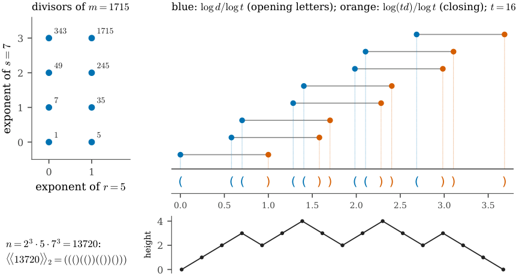
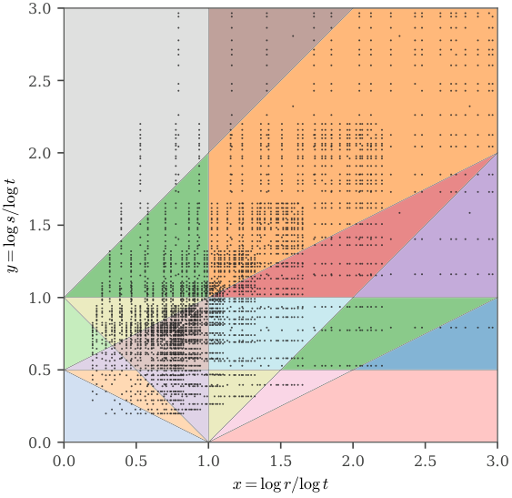
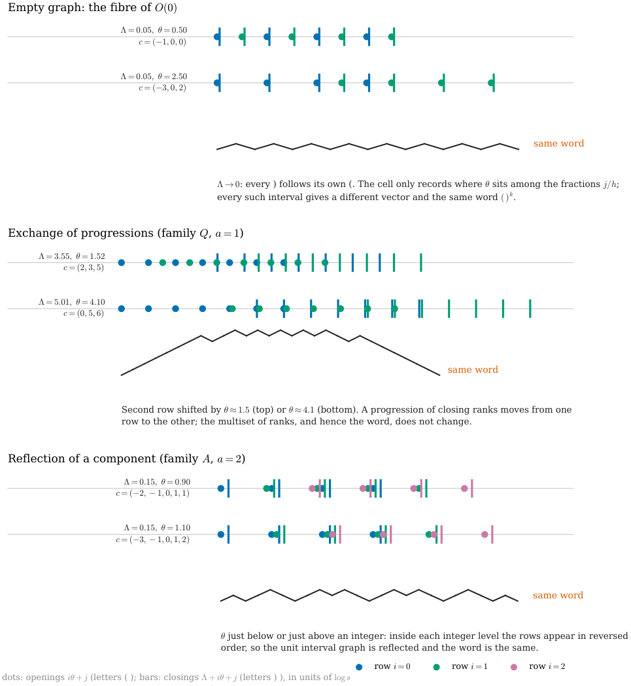
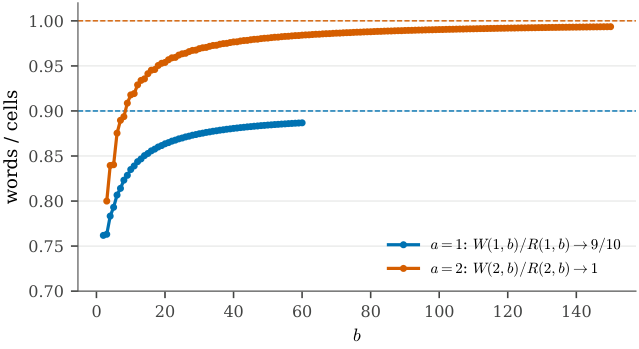
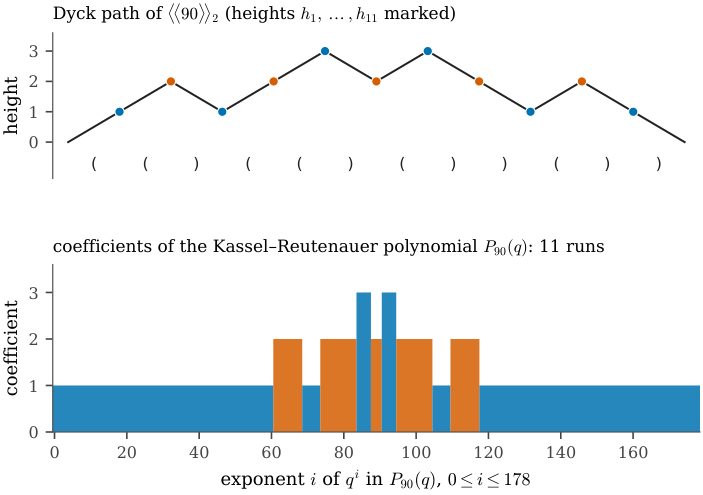

How Many Dyck Words Do the Divisors of an Integer Make? Exact Counts and Quasipolynomial Growth
At a glance
What the paper contributes
The language $L$ of the words $\langle\!\langle n\rangle\!\rangle_2$ and the question of describing it are Rodríguez Caballero's. Starting from the reduction to the odd part, the paper counts the words of each semilength:
- Part I (structure). The words of a pattern are the words of the cells of a hyperplane arrangement in the logarithms of the primes, and every cell is realised by primes (Lemma 2.3). $L_k$ is produced by the single finest pattern $p_1^{q_1-1}\cdots p_r^{q_r-1}$, $k=q_1\cdots q_r$ (Theorem 3.1), so membership in $L$ is decidable (Corollary 4.2). Written proofs.
- Part II (general enumeration). An exact formula for the number $R(a,b)$ of cells of the pattern $p^ap'^b$, with leading coefficient $C_a\sim12a^2/\pi^2$ (Theorem 5.1, Corollary 5.2); $W(a,b)$ is eventually a quasipolynomial in $b$ of degree exactly two (Theorem 6.1, an application of Woods' theorem, existence only; Theorem 6.3, Corollary 6.4); three mechanisms by which distinct cells give the same word (Section 7). Written proofs.
- Part III (explicit counts). $|L_{2q}|=(9q^2-10q+13)/4$ for odd primes $q$ (Theorem A, written proof) and $|L_{3q}|=(44q^2-69q+58-3(\tfrac q3))/6$ for primes $q\ge5$ (Theorem B: one lemma is decided by exact SMT queries with Z3, without a checked proof object); a table of $|L_k|$ for small $k$ by exact enumeration.
The paper claims no novelty for the Kassel–Reutenauer reformulation of the appendix, which is implicit in Rodríguez Caballero's work (JNT 2018). The arrangements and their link with semiorders go back to Stanley; counting cells through vertices is the planar case of Zaslavsky's face-count formula; the quasipolynomiality rests on a theorem of Woods.
🚀 Start here: Lemma 2.1: reduction to the odd part: Dₙ∖2Dₙ = Dₘ, 2Dₙ∖Dₙ = tDₘ, semilength τ(m).
Main results:
- Theorem 3.1: maximal refinement: Lₖ is the set of words of the finest pattern (q₁−1, …, qᵣ−1)
- Theorem 5.1: exact formula for the number R(a,b) of cells of the pattern pᵃ p′ᵇ
- Theorem 6.1: for fixed a, W(a,b) is eventually a quasipolynomial in b of degree ≤ 2 (via Woods)
- Theorem 8.12: Theorem A: W(1,b) = ⌊(9b²+8b+12)/4⌋, so |L₂q| = (9q²−10q+13)/4
- Theorem 9.4: Theorem B: W(2,b) = (44b²+19b+e_(b mod 6))/6, so |L₃q| = (44q²−69q+58−3(q/3))/6
🗺️ Map of the results (click a box to go to it)
Dependencies in the written proof: an arrow A → B means that this proof of B uses A. Every result rests on its written proof; the tags record what was checked besides, and each statement's “Evidence & scope” block says how far. The colour of a box is its strongest tag, in the order above; the tags in the box give the rest. Boxes with a thick border are the main results; click a box to read the statement.
📐 Setting (copied from the paper: §1, §2, the introduction of Part II, §5 and §6)
Let \(D_n\) be the set of divisors of \(n\) and \(2D_n=\{ 2d: d\in D_n\} \). Write the elements of the symmetric difference \(D_n\triangle 2D_n\) in increasing order and replace each element by \({\mathtt{(}}\) if it lies in \(D_n\setminus 2D_n\) and by \({\mathtt{)}}\) if it lies in \(2D_n\setminus D_n\); the result is \(\langle \! \langle n\rangle \! \rangle _2\). (§1)
For \(k\ge 1\) let \(L_k\) be the set of words of \(L\) of semilength \(k\) (length \(2k\)), where \(L=\{ \langle \! \langle n\rangle \! \rangle _2:n\ge 1\} \). (§1, Definition 1.1)
Let \(m=p_1^{f_1}\cdots p_r^{f_r}\), where the \(p_i\) are distinct odd primes and the exponents \(f_i\ge 1\). The multiset \(\{ f_1,\dots ,f_r\} \) is the pattern (signature) of \(m\), and \(\tau (m)=\prod (f_i+1)\). Put
Then \(u_a(x)=\log d/\log t\) for \(d=\prod p_i^{a_i}\), and \(d{\lt}td'\) if and only if \(u_a(x){\lt}1+u_{a'}(x)\). Let \(\mathcal A_f\) be the finite set of hyperplanes \(\{ x:\alpha \cdot x=1\} \) with \(\alpha \in \prod _i\{ -f_i,\dots ,f_i\} \), \(\alpha \neq 0\). (§2, with \(n=2^{e-1}m\), \(m\) odd, and \(t=2^e\) of Lemma 2.1)
For integers \(a,b\ge 1\), \(W(a,b)\) is the number of distinct words \(\langle \! \langle n\rangle \! \rangle _2\) with \(n=2^{e-1}r^as^b\), where \(r\ne s\) are odd primes and \(e\ge 1\). We measure in units of \(\log s\), with \(\Lambda =\log t/\log s\) and \(\theta =\log r/\log s\), and write \(\operatorname {clip}(v)=\min (b,\max (-b-1,v))\) and \(f(v)=\min (b+1,\max (0,v+1))\). (Introduction of Part II)
Let \(\mathcal L_{a,b}\) be the set of lines \(\ell _{h,\rho }:\Lambda +h\theta =\rho \) with \(|h|\le a\) and \(\rho \in \mathbb Z\cap [-b,b]\), and let \(R(a,b)\) be the number of cells (connected components) of the open quadrant \(\mathcal Q=\{ \Lambda {\gt}0,\theta {\gt}0\} \) minus these lines. (§5)
Put
(§6, Step 1)
Abstract.
For an integer \(n\ge 1\), Rodríguez Caballero’s word \(\langle \! \langle n\rangle \! \rangle _2\) records how the divisors of \(n\) interleave with the doubled divisors: read \(D_n\triangle 2D_n\) in increasing order and write an opening bracket \({\mathtt{(}}\) for elements of \(D_n\) and a closing bracket \({\mathtt{)}}\) for elements of \(2D_n\). It is a symmetric Dyck word whose shape reflects classical divisor statistics. Rodríguez Caballero asked which Dyck words arise in this way; we know of no answer in the literature. Let \(L_k\) be the set of these words of semilength \(k\). Starting from the reduction to the odd part, we describe the words through the cells of a hyperplane arrangement in the logarithms of the primes, and show that \(L_k\) is produced by the single finest factorisation pattern \(p_1^{q_1-1}\cdots p_r^{q_r-1}\), where \(k=q_1\cdots q_r\) is the prime factorisation; as a consequence, membership in \(L\) is decidable. For the pattern \(p^ap'^b\) we give an exact formula for the number \(R(a,b)\) of cells, whose leading coefficient \(C_a\) is asymptotic to \(12a^2/\pi ^2\), and show that the number \(W(a,b)\) of words satisfies \((\frac23-o(1))b^2\le W(a,b)\le (C_a+o(1))b^2\). Together with a theorem of Woods on Presburger counting functions, this shows that for fixed \(a\), \(W(a,b)\) is eventually a quasipolynomial in \(b\) of degree exactly two; its period and threshold are not determined. We also prove three general mechanisms by which distinct cells give the same word. Finally, \(|L_{2q}|=(9q^2-10q+13)/4\) for every odd prime \(q\), with a proof by hand, and \(|L_{3q}|=\bigl(44q^2-69q+58-3\bigl(\tfrac {q}{3}\bigr)\bigr)/6\) for every prime \(q\ge 5\), where \(\bigl(\tfrac {q}{3}\bigr)=\pm 1\) according as \(q\equiv \pm 1\pmod3\). In the second count, one lemma (the listed coincidences are all of them, and are disjoint) is a computer-assisted proof using exact SMT queries (\(496/496\) unsatisfiable), without a checked proof object. Whether almost every cell has its own word for \(a\ge 2\) is left to a companion paper.
tabular2tabaltwhite
[enhanced,breakable,before skip=8pt,after skip=4pt,colback=accent!4,colframe=accent!60,boxrule=0.6pt,arc=3pt,left=4pt,right=8pt,top=4pt,bottom=4pt,title=Results at a glance,coltitle=white,colbacktitle=accent!85,fonttitle=] I. Geometry (Lemmas 2.1, 2.3). The words with odd part of pattern \(f\) are the words of the cells of the arrangement \(\{ \alpha \cdot x=1\} \) in the positive orthant; every cell is realised by primes. I. Maximal refinement (Theorem 3.1, Corollary 3.3). If \(k=q_1\cdots q_r\) (primes), \(L_k\) is the set of words of the pattern \((q_1-1,\dots ,q_r-1)\); so \(|L_q|=q\) and \(|L_{q_1q_2}|=W(q_1-1,q_2-1)\). I. Decidability (Corollary 4.2 and the remark after it). Membership in \(L\) is decidable, in time \(\exp \bigl(O((\log k)^2)\bigr)\). II. Number of cells (Theorem 5.1, Corollary 5.2). Exact formula for \(R(a,b)\); a quasipolynomial of degree \(2\) in \(b\) with leading coefficient \(C_a\sim 12a^2/\pi ^2\). II. Growth (Theorems 6.1, 6.3, Corollary 6.4). \((\frac23-o(1))b^2\le W(a,b)\le (C_a+o(1))b^2\); for fixed \(a\), \(W(a,b)\) is eventually a quasipolynomial in \(b\) of degree exactly two (existence only). II. Coincidences (Lemmas 7.1, 7.2, 7.5, 7.7). Three mechanisms; the number of cells lost is at least linear in \(b\). III. Theorem A (Theorem 8.12). \(W(1,b)=\lfloor (9b^2+8b+12)/4\rfloor \) for \(b\ge 2\); \(|L_{2q}|=(9q^2-10q+13)/4\) for odd primes \(q\). III. Theorem B (Theorem 9.4). \(W(2,b)=(44b^2+19b+e_{b\bmod 6})/6\) for \(b\ge 3\); \(|L_{3q}|=(44q^2-69q+58-3\bigl(\tfrac {q}{3}\bigr))/6\) for primes \(q\ge 5\). (one lemma, §9.2), (the rest) III. Small \(k\) (Table 1). Three or more primes: values only, \(|L_8|=40\), \(|L_{12}|=252\), \(|L_{16}|=1083\), \(|L_{18}|=1222\). Open (Section 11). Rigidity, \(W(a,b)=C_ab^2+O_a(b)\) for \(a\ge 2\) (Question 11.1); the closed form of \(W(3,b)\) (Question 11.3). (for \(a=3\))
proof in the text one step decided by exact SMT queries, no proof object
exact enumeration in rational arithmetic fitted to data, not proved
1 Introduction
Rodríguez Caballero [ 6 , 8 , 5 ] attached to every integer \(n\ge 1\) a word over a two-letter alphabet. Let \(D_n\) be the set of divisors of \(n\) and \(2D_n=\{ 2d: d\in D_n\} \). Write the elements of the symmetric difference \(D_n\triangle 2D_n\) in increasing order and replace each element by \({\mathtt{(}}\) if it lies in \(D_n\setminus 2D_n\) and by \({\mathtt{)}}\) if it lies in \(2D_n\setminus D_n\); the result is \(\langle \! \langle n\rangle \! \rangle _2\) ( [ 8 , Definition 1 ] with \(\lambda =2\), letters \(a={\mathtt{(}}\), \(b={\mathtt{)}}\)). Caballero proved that every \(\langle \! \langle n\rangle \! \rangle _2\) is a symmetric Dyck word [ 8 , Lemma 13 ] and related several of its features to classical arithmetic: its height is the largest number of divisors in an interval \([d,2d)\) [ 8 , Lemma 19 ] , which ties it to Hooley’s \(\Delta \)-function [ 3 , 6 ] ; it lies in \(({\mathtt{(}}{\mathtt{)}})^*\) exactly when \(n\) is not the semi-perimeter of a Pythagorean triangle [ 8 , Lemma 18 ] ; it is irreducible exactly when \(n\) is \(2\)-densely divisible [ 8 , Lemma 27 ] . Through the Kassel–Reutenauer polynomials the same divisor pattern also controls the number of ideals of finite codimension of the Laurent polynomial ring in two variables over \(\mathbb F_q\) [ 4 , 9 ] ; see Appendix A. Let \(L=\{ \langle \! \langle n\rangle \! \rangle _2:n\ge 1\} \). The language \(L\) is Rodríguez Caballero’s [ 8 ] , and so is the question of describing it: in 2020 he asked publicly whether, for a given balanced word, it can be proved in first-order Peano arithmetic that it is, or is not, of the form \(\langle \! \langle n\rangle \! \rangle _2\) [ 14 ] ; in December 2021 he asked on the same list whether there is a balanced word \(w\) for which it cannot be determined whether the search for an \(n\) with \(\langle \! \langle n\rangle \! \rangle _2=w\) halts, and wrote that he thought the problem undecidable [ 15 ] ; and he raised it again in a public discussion in November 2026. We do not know of a description of \(L\) in the literature. The paper [ 8 ] , which we read in full, gives none and does not count words by divisor pattern. This note studies the problem one semilength at a time.
For \(k\ge 1\) let \(L_k\) be the set of words of \(L\) of semilength \(k\) (length \(2k\)).
↳ Not used by another result of the paper.
By Lemma 2.1 below, the semilength of \(\langle \! \langle n\rangle \! \rangle _2\) is \(\tau (m)\), where \(m\) is the odd part of \(n\). So \(L_k=\{ \langle \! \langle n\rangle \! \rangle _2: \tau (\text{odd part of } n)=k\} \). Figure 1 shows how the word of one integer is read off its divisors.
🖼️ Figure 1

The word of \(n=2^3\cdot 5\cdot 7^3\). Left: the divisors of the odd part \(m=5\cdot 7^3\) as the grid of exponents \(\{ 0,1\} \times \{ 0,\dots ,3\} \). Right: each divisor \(d\) projected to \(\log d/\log t\) (blue) and joined to its partner \(\log (td)/\log t\) (orange), one unit to the right (\(t=16\)). Reading the line from left to right gives \(\langle \! \langle n\rangle \! \rangle _2\); its Dyck path is drawn below.
Approach and organisation
Two observations drive the note. First, after the reduction to the odd part (Lemma 2.1), the word only sees on which side of each hyperplane \(\alpha \cdot x=1\) the point \(x=(\log p_i/\log t)_i\) lies; so the words are labels of the cells of a finite arrangement, and every cell is realised by primes (Lemma 2.3). Distinct cells may carry the same word, because the word forgets which divisor produced each letter. Second, the semilength \(k\) fixes a single finest pattern of exponents that already produces all of \(L_k\) (Theorem 3.1). So membership in \(L\) is decidable (Corollary 4.2), which answers algorithmically the decision problem posed by Rodríguez Caballero in 2020 [ 14 ] , in the opposite sense to the undecidability he expected in 2021 [ 15 ] ; his question about Peano arithmetic remains open.
For two primes the finest pattern is \(p^ap'^b\), and counting \(L_{pq}\) splits into two problems of different nature. Counting the cells is a problem about an arrangement of lines, of a classical kind, which we solve exactly (Theorem 5.1). Controlling the cells that share a word is where the difficulty lies: one cell in ten is redundant for \(a=1\), whereas for \(a=2\) the proportion tends to \(0\) (Remark 9.5). This note counts the cells and words and describes how they coincide; whether almost every cell has its own word for every \(a\ge 2\), the rigidity question (Question 11.1), is left to a companion paper in preparation.
Part I (Sections 2–4) holds for any number of primes. Part II (Sections 5–7) treats the pattern \(p^ap'^b\) for general \(a\): the number of cells, the growth of \(W(a,b)\) and the mechanisms of coincidence. Part III (Sections 8–10) gives the exact counts for \(a=1,2\) and a table of \(|L_k|\). The box on the first page lists the results with references and the status of each. Section 11 lists open questions, and Section 12 what this note does not claim. Appendix A records, for completeness, a reformulation of the words through the Kassel–Reutenauer polynomials that is implicit in Caballero’s work [ 9 , 8 ] ; we claim no novelty for it.
1 Structure of the language
2 Reduction to an arrangement of hyperplanes
Write \(n=2^{e-1}m\) with \(m\) odd, \(e\ge 1\), and put \(t=2^e\). Then \(D_n\setminus 2D_n=D_m\) and \(2D_n\setminus D_n=tD_m\). Hence \(\langle \! \langle n\rangle \! \rangle _2\) is obtained by merging \(D_m\) (letters \({\mathtt{(}}\)) with \(tD_m\) (letters \({\mathtt{)}}\)), and its semilength is \(\tau (m)\).
Isabelle · oursshow
reduction_lemma · Isabelle/CaballeroDyckWords/Caballero_Divisor_Words.thy, line 183
theorem reduction_lemma:
assumes "odd m" "e \<ge> 1" "n = 2 ^ (e - 1) * m"
shows "divs n - (*) 2 ` divs n = divs m"
and "(*) 2 ` divs n - divs n = (*) (2 ^ e) ` divs m"dword_counts_and_dyck · Isabelle/CaballeroDyckWords/Caballero_Divisor_Words.thy, line 194
theorem dword_counts_and_dyck:
assumes "odd m" "e \<ge> 1" "n = 2 ^ (e - 1) * m"
shows "length (filter id (dword n)) = card (divs m)"
and "length (filter Not (dword n)) = card (divs m)"
and "\<And>k. length (filter Not (take k (dword n))) \<le> length (filter id (take k (dword n)))"🆕 Classical and new: elementary and not new: implicit in Rodríguez Caballero's 2020 construction from the divisors of 2n (FOM, 17 March 2020); the identity in this form was noted in the public discussion that led to this note.
↳ Used in: 2.2, Lemma 2.3, Theorem 3.1, Lemma 8.1, A.1
\(D_n=\{ 2^ad: 0\le a\le e-1,\ d\mid m\} \) and \(2D_n=\{ 2^ad:1\le a\le e,\ d\mid m\} \). The two sets share the elements with \(1\le a\le e-1\), so the difference \(D_n\setminus 2D_n\) consists of the elements with \(a=0\) and \(2D_n\setminus D_n\) of those with \(a=e\).
💡 In plain words (commentary, not part of the paper)
Only the odd part of \(n\) and the power of two matter, and in a simple way. If \(n=2^{e-1}m\) with \(m\) odd, the letters \({\mathtt{(}}\) of the word are the divisors of \(m\) and the letters \({\mathtt{)}}\) are those divisors multiplied by \(t=2^e\); all the other divisors of \(n\) cancel against their doubles. So the word has \(\tau (m)\) letters of each kind, and it is obtained by merging the two sorted lists \(D_m\) and \(tD_m\). For \(n=13720=2^3\cdot 5\cdot 7^3\) (Figure 1), \(t=16\) and \(m=5\cdot 7^3\) has \(8\) divisors, so the word has semilength \(8\).
The paper attributes the reduction to Rodríguez Caballero, who pointed it out in the discussion that led to the note; the paper includes the short proof.
🛡️ Evidence & scope
Audit: machine-checked in Isabelle/HOL session Caballero_Base, theory Caballero_Divisor_Words (task 290): reduction_lemma proves D_n ∖ 2D_n = D_m and 2D_n ∖ D_n = 2^e D_m; dword_counts_and_dyck proves that the word has τ(m) letters of each kind and is a Dyck word (every prefix). Compiles without sorry (Isabelle2026); negative controls (2^(e+1) in place of 2^e, a shifted count) fail. working script Caballero_Divisor_Words.thy, not published
Program: n = 1 … 3000: the word rebuilt from the counts C(n) of (1) equals the word read from the definition; with t = 2^(e−1) (wrong reduction) the cell vector of n = 13720 fails. lab/comprueba_lab.py
🧪 Lab: Figure 1 live: the word of n from its divisors, its Dyck path and its cell
For the \(n\) you choose (\(n\le 10^{12}\)) the lab factors \(n=2^{e-1}m\) with \(m\) odd, reads \(\langle \! \langle n\rangle \! \rangle _2\) from the definition (\(D_n\triangle 2D_n\) in increasing order), rebuilds it from the counts \(C(n)\) of (1) and checks that both agree, that the word is Dyck and symmetric. The first plot is the line of Figure 1: each divisor \(d\) of \(m\) at \(\log d/\log t\) and its partner \(td\) one unit to the right. For one odd prime it gives \(N\) with word \(O_q(N)\) (Corollary 3.3(a)); for two it computes the clipped vector \(c_h=\mathrm{clip}\lfloor \Lambda +h\theta \rfloor \) of the cell exactly (integer comparisons \(s^\rho {\lt}t\, r^h\)), checks \(Z(c)=C(n)\) and draws the point \((\Lambda ,\theta )\) among the lines \(\Lambda +h\theta =\rho \). The first figure is in 3D (drag to turn it): for three odd primes, the planes \(\alpha \cdot x=1\) (\(|\alpha _i|\le f_i\); only \(\alpha \in \{ -1,0,1\} ^3\) when there are more than 60) in coordinates \(x_i=\log p_i/\log t\), as in the paper’s figure of the pattern \((1,1,1)\), with the point of \(n\) as a star; for two, the lines \(\Lambda +h\theta =\rho \) at height \(0\) under a terrace whose height at \((\Lambda ,\theta )\) is the height of the Dyck word of that cell (sampled in floating point, colour by word; the point of \(n\) uses its exact cell); for one, the words \(O_q(N)\), \(N=0,\dots ,q-1\), as Dyck paths side by side, the one of \(n\) in red; otherwise each letter at \(\log v/\log t\), by type, at the height of the path. Next to each 3D figure is its 2D view: the slice \(x_1+x_2+x_3=S\) through the point of \(n\) (three primes), the cells seen from above (two primes; its slider sweeps \(\theta \) along the line \(\Lambda =\Lambda (n)\) and shows the word it meets), the paths on top of each other (one prime), or the path against \(\log v/\log t\). Floating point only places things in the drawings.
The reduction is implicit in Rodríguez Caballero’s original construction [ 14 ] , which writes the divisors of \(2n\) and deletes those \(d\) for which \(d\) and \(2n/d\) are both even: what remains is exactly \(D_m\cup 2^eD_m\). The identity in this form was noted in the public discussion that led to this note; we include the short proof. Since \(t\) is even and \(m\) odd, no element of \(D_m\) equals an element of \(tD_m\). The map \(d\mapsto td\) preserves order, so the \(j\)-th letter \({\mathtt{)}}\) corresponds to the \(j\)-th smallest divisor \(d_{(j)}\) of \(m\). The word is therefore determined by the multiset
Sorted increasingly, it is the number of letters \({\mathtt{(}}\) preceding each letter \({\mathtt{)}}\). On a logarithmic scale, each divisor \(d\) and its partner \(td\) are one unit \(\log t\) apart; Figure 1 shows this for \(n=13720\).
2.1 Log-coordinates and patterns
Let \(m=p_1^{f_1}\cdots p_r^{f_r}\), where the \(p_i\) are distinct odd primes and the exponents \(f_i\ge 1\). The multiset \(\{ f_1,\dots ,f_r\} \) is the pattern (signature) of \(m\), and \(\tau (m)=\prod (f_i+1)\). Put
Then \(u_a(x)=\log d/\log t\) for \(d=\prod p_i^{a_i}\), and \(d{\lt}td'\) if and only if \(u_a(x){\lt}1+u_{a'}(x)\).
Let \(\mathcal A_f\) be the finite set of hyperplanes \(\{ x:\alpha \cdot x=1\} \) with \(\alpha \in \prod _i\{ -f_i,\dots ,f_i\} \), \(\alpha \neq 0\). For \(x\in {\mathbb {R}}^r_{{\gt}0}\setminus \bigcup \mathcal A_f\) let \(w_f(x)\) be the word whose letters \({\mathtt{)}}\) are preceded by
letters \({\mathtt{(}}\), sorted increasingly. Explicitly, if \(c_{(1)}\le \dots \le c_{(K)}\) is the sorted list, then \(w_f(x)={\mathtt{(}}^{c_{(1)}}{\mathtt{)}}\, {\mathtt{(}}^{c_{(2)}-c_{(1)}}{\mathtt{)}}\cdots {\mathtt{(}}^{c_{(K)}-c_{(K-1)}}{\mathtt{)}}\).
↳ Used in: 11.8
The function \(w_f\) depends only on the signs of \(\alpha \cdot x-1\) with \(\alpha =a-b\). It is therefore constant on every cell, that is, on every connected component of \({\mathbb {R}}^r_{{\gt}0}\setminus \bigcup \mathcal A_f\). For an integer \(n\) with odd part of pattern \(f\), the point \(x(n)\) avoids every hyperplane, because \(u_a-u_b=1\) would give \(d=td'\). By (1), \(\langle \! \langle n\rangle \! \rangle _2=w_f(x(n))\). Figure 2 shows the arrangement for the pattern \((1,1,1)\).
🖼️ Figure 2

The arrangement \(\mathcal A_{(1,1,1)}\) (pattern \(pp'p''\), \(k=8\)) of the \(19\) planes \(\alpha \cdot x=1\), \(\alpha \in \{ -1,0,1\} ^3\), that meet the positive octant. Left: its \(21\) bounded cells, each shrunk towards its centre so that all are visible, coloured by word (\(8\) words; the number of cells of each word is in the legend). Permuting the primes does not change the word, and the multiplicities \(6\), \(3\), \(1\) are consistent with orbits under permutation of the coordinates. Right: the slice \(x_1+x_2+x_3=1.2\), cut exactly by the planes (\(43\) pieces, \(11\) words); pieces of the eight words on the left keep their colours.
The cell of \(x\) records all the comparisons \(u_a{\lt}1+u_b\), that is, the strict relation \(a\prec b\iff u_a+1{\lt}u_b\), which is a semiorder (unit interval order) on the exponent vectors: the order of the unit intervals \([u_a,u_a+1]\). The word keeps only the multiset (1) of counts and forgets the labels \(a\); this is why distinct cells can give the same word. Arrangements of the hyperplanes \(x_i-x_j=1\) and their relation to semiorders and interval orders go back to Stanley [ 12 ] , and the polyhedron of numerical representations of a semiorder is studied in [ 1 ] . Unlabelled semiorders on \(m\) elements are counted by the Catalan numbers, a result of Wine and Freund, and those of length \(H\) are equinumerous with the Dyck paths of semilength \(m\) and height \(H+1\) [ 20 ] . Here the points are constrained to the additive form \(u_a=\sum _i a_ix_i\), which is what makes the arrangement \(\mathcal A_f\) finite-dimensional in the number of primes.
Let \(x^0\in {\mathbb {R}}^r_{{\gt}0}\setminus \bigcup \mathcal A_f\). There are \(e\ge 1\) and distinct odd primes \(p_1,\dots ,p_r\) such that \(n=2^{e-1}p_1^{f_1}\cdots p_r^{f_r}\) satisfies \(\langle \! \langle n\rangle \! \rangle _2=w_f(x^0)\).
Trust base: ⚠️ not checked. Written proof (audited); not machine-checked. The Isabelle session of task 291 leaves the realisation by Bertrand’s postulate out (its phase 2)
Proof: in this note·Formalized: Isabelle/HOL, by the author (public formalizations repository)·Covers: the whole statement
🆕 Classical and new: the paper: arrangements of this kind and their link with semiorders go back to Stanley; the proof uses Bertrand’s postulate.
↳ Used in: Theorem 3.1, Corollary 3.3, Corollary 4.2, Theorem 6.1, Theorem 6.3, Lemma 7.1, Lemma 8.2, Lemma 9.1, 11.8
Let \(U\) be the cell containing \(x^0\). It is open and \(w_f\) is constant on it. Points with pairwise distinct coordinates are dense, so pick one, \(x^1\in U\). Then pick \(\delta {\gt}0\) such that the box \(B=\prod _i(x^1_i-\delta ,x^1_i+\delta )\) lies in \(U\), \(x^1_i-\delta {\gt}0\) for every \(i\), and the \(r\) intervals \((x^1_i-\delta ,x^1_i+\delta )\) are pairwise disjoint. We use Bertrand’s postulate in the form: for every real \(y\ge 1\) there is a prime \(p\) with \(y{\lt}p\le 2y\) [ 2 ] . Choose \(e\) so large that, for each \(i\),
has left end \(y_i\ge 2\) and ratio \(2^{2e\delta }{\gt}2\). Then \((y_i,2y_i]\subset J_i\) contains a prime \(p_i{\gt}2\). The \(J_i\) are pairwise disjoint, so the \(p_i\) are distinct. Moreover \(\log p_i/\log 2^e\in (x^1_i-\delta ,x^1_i+\delta )\), so \(x(n)\in B\subset U\) and \(\langle \! \langle n\rangle \! \rangle _2=w_f(x(n))=w_f(x^0)\).
🛡️ Evidence & scope
Program: Figure 3: for all 18 098 points with r, s ≤ 200 and e ≤ 11 in the window, the word of n = 2^(e−1) r s² is the word of its cell (the figure script stops if a value disagrees); in the figure every one of the 19 cells of the window [0,3]² contains one of the 3590 points with r, s ≤ 100, e ≤ 8. working script fig_primos_a1.py, not published
Hence the set of words of pattern \(f\) is exactly \(\{ w_f(U): U \text{ a cell of } \mathcal A_f\} \). There may be fewer words than cells: non-adjacent cells can give the same word. For instance, the pattern \((3,3)\) has \(191\) cells but only \(95\) words. Figure 3 shows real primes populating the cells of the pattern \((1,2)\).
🖼️ Figure 3

Pattern \((1,2)\) (\(m=rs^2\), \(k=6\)): the cells of the lines \(\alpha x+\beta y=1\), \(|\alpha |\le 1\), \(|\beta |\le 2\), in the window \([0,3]^2\), coloured by word (\(19\) cells, \(16\) words; cells of equal colour have the same word), and the points \((\log r,\log s)/\log 2^e\) for distinct primes \(3\le r,s\le 100\) and \(e\le 8\) (\(3590\) points). Every one of the \(19\) cells in the window contains such a point.
3 Maximal refinement
Let \(k\ge 2\) with prime factorisation \(k=q_1q_2\cdots q_r\), repetitions allowed. Then \(L_k\) is the set of words \(\langle \! \langle n\rangle \! \rangle _2\) whose odd part has pattern \((q_1-1,\dots ,q_r-1)\):
Equivalently, every word of every pattern \(f\) with \(\prod (f_i+1)=k\) is also a word of the finest pattern \((q_1-1,\dots ,q_r-1)\).
Isabelle · ours · partshow
Only a part is in Isabelle: the combinatorial core: the word is unchanged when x₁ is split into (x₁, (u+1)x₁); the realisation by primes (Lemma 2.3) is not formalized
word_refinement · Isabelle/CaballeroDyckWords/Caballero_Radix/Caballero_Radix.thy, line 257
theorem word_refinement: assumes "finite R" shows "wordF (idxS u v R) (posS x u \<rho>) = wordF (idxF ((u + 1) * (v + 1) - 1) R) (posF x \<rho>)"
comparison_transfer · Isabelle/CaballeroDyckWords/Caballero_Radix/Caballero_Radix.thy, line 239
theorem comparison_transfer: assumes "t \<in> idxS u v R" "t' \<in> idxS u v R" shows "posS x u \<rho> t < 1 + posS x u \<rho> t' \<longleftrightarrow> posF x \<rho> (phi u t) < 1 + posF x \<rho> (phi u t')"
no_unit_difference_transfer · Isabelle/CaballeroDyckWords/Caballero_Radix/Caballero_Radix.thy, line 244
theorem no_unit_difference_transfer:
assumes "\<And>a b. a \<in> idxF ((u + 1) * (v + 1) - 1) R \<Longrightarrow> b \<in> idxF ((u + 1) * (v + 1) - 1) R \<Longrightarrow>
posF x \<rho> a - posF x \<rho> b \<noteq> 1"
and "a \<in> idxS u v R" "b \<in> idxS u v R"
shows "posS x u \<rho> a - posS x u \<rho> b \<noteq> 1"Trust base: ⚠️ not checked. Written proof, audited internally; the combinatorial core (the word is unchanged when x₁ is split into (x₁, (u+1)x₁)) compiles in Isabelle/HOL (session Caballero_Radix, public); the realisation step (Lemma 2.3) is not formalized
🆕 Classical and new: the paper counts it among its new results («The novelty claim is limited to the counts, to Theorem 3.1 and its consequence Corollary 4.2, …»); the mixed-radix decomposition is classical.
↳ Used in: Corollary 3.3, Corollary 4.2, 4.3, 11.6
The words of the finest pattern lie in \(L_k\) by definition. For the converse it is enough to show: if \(f=(f_1,\dots ,f_s)\) has \(f_1+1=(u+1)(v+1)\) with \(u,v\ge 1\), and \(f'=(u,v,f_2,\dots ,f_s)\), then every word of pattern \(f\) is a word of pattern \(f'\). Repeating this step splits every composite \(f_i+1\) into primes. The step terminates because each application increases the number of parts.
Let \(\langle \! \langle n\rangle \! \rangle _2\) have pattern \(f\), and let \(x=x(n)\in {\mathbb {R}}^s_{{\gt}0}\), so \(x\) lies on no hyperplane of \(\mathcal A_f\) and \(\langle \! \langle n\rangle \! \rangle _2=w_f(x)\). Define \(y=(x_1,(u+1)x_1,x_2,\dots ,x_s)\in {\mathbb {R}}^{s+1}_{{\gt}0}\) and \(\varphi :I_{f'}\to I_f\), \(\varphi (i,j,a_2,\dots ,a_s)=(i+(u+1)j,a_2,\dots ,a_s)\). By Lemma 3.2, \(\varphi \) is a bijection and \(u_{a'}(y)=u_{\varphi (a')}(x)\) for all \(a'\in I_{f'}\).
Now \(y\) lies on no hyperplane of \(\mathcal A_{f'}\). Indeed, \(u_{a'}(y)-u_{b'}(y)=1\) would give \(u_{\varphi (a')}(x)-u_{\varphi (b')}(x)=1\), which is impossible. Moreover \(c'_{b'}(y)=\# \{ a':u_{a'}(y){\lt}1+u_{b'}(y)\} =c_{\varphi (b')}(x)\), so the two sorted multisets coincide and \(w_{f'}(y)=w_f(x)=\langle \! \langle n\rangle \! \rangle _2\). The point \(y\) is degenerate, since its second coordinate is exactly \(u+1\) times its first and no pair of primes has that property. But Lemma 2.3 only needs \(y\) to avoid \(\mathcal A_{f'}\). It supplies \(n'\) with odd part of pattern \(f'\) and \(\langle \! \langle n'\rangle \! \rangle _2=w_{f'}(y)=\langle \! \langle n\rangle \! \rangle _2\).
💡 In plain words (commentary, not part of the paper)
Many integers have odd parts with \(k\) divisors: for \(k=12\) the odd part can be \(p^{11}\), \(p^5p'\), \(p^3p'^2\) or \(p^2p'p''\). The theorem says that only the last kind matters: every word of semilength \(k\) is already the word of some \(n\) whose odd part has the finest pattern, one prime for each prime factor of \(k\) (counted with multiplicity). So \(|L_{12}|\) is the number of words of the pattern \(p^2p'p''\), \(252\) by exact enumeration (Figure 4(a)).
Why it is true: in logarithmic units the divisors of \(p^F\), \(F+1=(u+1)(v+1)\), sit at \(Nx_1\), \(0\le N\le F\); by division with remainder these are the points \(ix_1+j(u+1)x_1\), so the point \((x_1,(u+1)x_1)\) of the finer pattern makes exactly the same comparisons \(d{\lt}td'\) and gives the same word. That point is not given by two primes, but it lies off every hyperplane, so it sits in an open cell, and Lemma 2.3 (Bertrand’s postulate) finds primes in that cell.
The paper counts this theorem among its new results; the mixed-radix decomposition it uses is classical (Lemma 3.2).
🛡️ Evidence & scope
Audit: machine-checked in Isabelle/HOL session Caballero_Radix (task 291): word_refinement (the word w_f of the comparisons u_a < 1 + u_b is the same for the pattern (u, v, …) at (x₁, (u+1)x₁, …) as for (F, …) at (x₁, …), for every number of further primes), with comparison_transfer and no_unit_difference_transfer. Compiles without sorry; out of scope: the realisation by primes. working script Caballero_Radix.thy, not published
Program: k ≤ 18: the number of words of the finest pattern equals |L_k| over all patterns (exact enumeration with SageMath polyhedra over ℚ, e.g. k = 12: 12, 69, 80, 252 for p¹¹, p⁵p′, p³p′², p²p′p″), and the one-prime words lie inside the two-prime words for k = pq ≤ 49. working scripts formas_exactas.sage, tabla_pq.py, not published
Let \(u,v\ge 1\) and \(F=(u+1)(v+1)-1\). Every integer \(N\in \{ 0,\dots ,F\} \) can be written in exactly one way as \(N=i+(u+1)j\) with \(0\le i\le u\), \(0\le j\le v\). Hence, for every real \(x_1\), \(\{ Nx_1:0\le N\le F\} =\{ ix_1+j(u+1)x_1: 0\le i\le u,\ 0\le j\le v\} \), and the map \((i,j)\mapsto i+(u+1)j\) is a bijection between the index sets.
Isabelle · oursshow
radix_bij · Isabelle/CaballeroDyckWords/Caballero_Radix/Caballero_Radix.thy, line 74
theorem radix_bij:
"bij_betw (radix u) ({0..u} \<times> {0..v}) {0..(u + 1) * (v + 1) - 1}"🆕 Classical and new: the paper: «mixed radix; classical».
↳ Used in: Theorem 3.1
Division with remainder by \(u+1\); \(j=\lfloor N/(u+1)\rfloor \le v\).
🛡️ Evidence & scope
Audit: machine-checked in Isabelle/HOL session Caballero_Radix (task 291): radix_bij proves the bijection (i, j) ↦ i + (u+1)j from 0..u×0..v onto 0..(u+1)(v+1)−1. Compiles without sorry; the control with factor u+2 fails. working script Caballero_Radix.thy, not published
The proof is a one-line identity of point sets. The only analytic input is that strict comparisons survive a small perturbation, followed by Bertrand’s postulate. Figure 4(a) shows the absorption of patterns for \(k=12\), and Figure 4(b) how the results of this note depend on each other and on the work of others.
🖼️ Figure 4

(a) Maximal refinement for \(k=12\): each arrow splits one exponent \(F\) into \((u,v)\) with \((u+1)(v+1)=F+1\), and every word of the coarser pattern is a word of the finer one. The counts \(12\), \(69\), \(80\) and \(252\) of words of the patterns \(p^{11}\), \(p^5p'\), \(p^3p'^2\) and \(p^2p'p''\) are exact enumerations (SageMath over \(\mathbb Q\)), so \(|L_{12}|=252\). (b) How the results depend on each other. Boxes in dotted grey are due to others (Bertrand’s postulate, the language \(L\) and the link with \(P_n(q)\) of Rodríguez Caballero, Woods’ theorem) or are external tools (the SMT solvers); the colour of the frame of our results gives their status (proved by hand, or computer-assisted).
\(L_1=\{ {\mathtt{(}}{\mathtt{)}}\} \). For \(q\) prime, \(L_q=\{ O_q(N): 0\le N\le q-1\} \) with \(O_q(N)\) the word whose \(j\)-th letter \({\mathtt{)}}\) is preceded by \(\min (q,N+j)\) letters \({\mathtt{(}}\) (\(j=1,\dots ,q\)). Hence \(|L_q|=q\).
For primes \(p\le q\), \(L_{pq}\) is the set of words of pattern \((p-1,q-1)\). So \(|L_{pq}|=W(p-1,q-1)\), where \(W(a,b)\) denotes the number of words of pattern \((a,b)\).
↳ Used in: Theorem 8.12, Theorem 9.4
(b) is Theorem 3.1. For (a), let \(m=p^{q-1}\) and \(\Lambda =\log t/\log p\notin {\mathbb {Z}}\). In units of \(\log p\), the letters \({\mathtt{(}}\) sit at \(0,\dots ,q-1\) and the letters \({\mathtt{)}}\) at \(\Lambda +0,\dots ,\Lambda +q-1\). The \(j\)-th \({\mathtt{)}}\) (at \(\Lambda +j-1\), \(j\ge 1\)) is preceded by \(\# \{ i\le q-1: i{\lt}\Lambda +j-1\} =\min (q,\lfloor \Lambda \rfloor +j)\) letters \({\mathtt{(}}\), so the word is \(O_q(\min (\lfloor \Lambda \rfloor ,q-1))\). The words \(O_q(N)\), \(0\le N\le q-1\), are pairwise distinct: the first \({\mathtt{)}}\) is preceded by \(N+1\) letters \({\mathtt{(}}\). Each is realised, by Lemma 2.3 applied to \(x^0=1/(N+\tfrac 12)\).
🛡️ Evidence & scope
Program: the lab «Figure 1 live» computes N and checks O_q(N) against the word of n for one-prime odd parts (JavaScript, BigInt; equal to the Python version on 32 values of n, labjs/control_js_python.js). labjs/nucleo.js, lab/dyck_divisors_lab.py
4 Decidability and complexity
By Theorem 3.1, deciding whether a word of semilength \(k\) lies in \(L\) reduces to listing the cells of one finite arrangement. The following bound confines every cell to an explicit box.
Let \(\mathcal A\) be an arrangement of hyperplanes \(\alpha \cdot x=1\) in the positive orthant of \(\mathbb R^r\), with \(\alpha \in {\mathbb {Z}}^r\) and \(|\alpha _i|\le M\) (\(M\ge 1\)). Every open cell of \(\mathcal A\) contains a point with \(0{\lt}x_i{\lt}r!\, M^{r-1}+1\) for all \(i\).
Trust base: ⚠️ not checked. Written proof; not machine-checked. Table 1, which this bound makes exact, is an exact enumeration in rational arithmetic (SageMath polyhedra over ℚ for three or more primes, exact fractions for two), not a formula
Proof: in this note·Formalized: Isabelle/HOL, by the author (public formalizations repository)·Covers: the whole statement
↳ Used in: Corollary 4.2, 10.1
The closure \(P\) of a cell \(U\) is a full-dimensional polyhedron in the closed orthant, hence pointed; let \(v\) be a vertex. At \(v\) there are \(r\) linearly independent active constraints \(Av=d\), each a hyperplane \(\alpha \cdot x=1\) or a face \(x_i=0\). So \(A\) is an integer matrix with entries of absolute value at most \(M\), and \(d\in \{ 0,1\} ^r\). By Cramer’s rule \(v_i=\det A_i/\det A\) with \(|\det A|\ge 1\), and expanding \(\det A_i\) along the column \(d\) gives \(|\det A_i|\le r!\, M^{r-1}\). Points of \(U\) arbitrarily close to \(v\) satisfy the bound.
🛡️ Evidence & scope
By hand: the bound for the four maximal patterns of Table 1, (1,1,1), (2,1,1), (1,1,1,1), (2,2,1): 7, 25, 25, 25, all below the box x_i ≤ 50 of the enumerations (paper, last section of Part III)
Program: Table 1 (exact enumeration): k = 4, 6, 8, 9, 10: 6, 16, 40, 28, 47 and k = 12: 252, 16: 1083 (patterns 15; 7,1; 3,3; 3,1,1; 1,1,1,1: 16, 127, 95, 682, 1083), 18: 1222 (17; 8,1; 5,2; 2,2,1: 18, 163, 200, 1222), SageMath polyhedra over ℚ in the box x_i ≤ 50. working script formas_exactas.sage, not published
Program: Table 1 (exact enumeration): two primes by exact fractions: k = 4: 6, 6: 16, 9: 28, 10: 47, 14: 96, 15: 136, 21: 288, 25: 255, 35: 971, 49: 1083. working script tabla_pq.py, not published
Program: Table 1 (exact enumeration): the lab recount: |L_4|, |L_6|, |L_9|, |L_10|, |L_14|, |L_15|, |L_21|, |L_25|, |L_35| = 6, 16, 28, 47, 96, 136, 288, 255, 971. lab/comprueba_lab.py
The same bound makes the enumerations of Table 1 exact (last section of Part III).
Membership in \(L\) is decidable. The empty word is not in \(L\), and \(L_1=\{ \mathtt{()}\} \). Given a balanced word \(w\) of semilength \(k\ge 2\), let \(k=q_1\cdots q_r\). Then \(w\in L\) if and only if \(w\) is the word of some cell of the arrangement of the pattern \((q_1-1,\dots ,q_r-1)\), and these finitely many cells can be listed exactly.
Trust base: ⚠️ not checked. Written proof (audited); not machine-checked
Proof: in this note·Covers: not formalized
🆕 Classical and new: the paper: it answers algorithmically the decision problem posed by Rodríguez Caballero in 2020 (FOM), not his question about first-order Peano arithmetic.
By Theorem 3.1, \(L_k\) is the set of words of the cells of \(\mathcal A_{(q_1-1,\dots ,q_r-1)}\), and every cell is realised (Lemma 2.3). The arrangement is finite. Each sign vector of the hyperplanes and of the coordinate faces defines a strict rational linear system, whose feasibility is decided exactly, and a feasible system yields a rational point and hence the word of its cell. The search can be confined to the box of Proposition 4.1.
Let \(k=q_1\cdots q_r\), so \(r\le \log _2k\). The maximal pattern has \(f_i=q_i-1\), and its arrangement has at most \(H=\prod _i(2q_i-1)-1\le k^{\log _23}\) hyperplanes, since \(2q-1\le q^{\log _23}\) for \(q\ge 2\). An arrangement of \(H\) hyperplanes in \(\mathbb R^r\) has at most \(\sum _{j\le r}\binom Hj\le (H+1)^r\) cells, and they can be listed incrementally with one rational linear program per candidate. So membership is decided in time \(\exp \bigl(O((\log k)^2)\bigr)\), and in time polynomial in \(k\) when the number \(r\) of prime factors of \(k\) (with multiplicity) is bounded. Whether a uniformly polynomial algorithm exists is Question 11.7.
↳ Not used by another result of the paper.
This answers algorithmically the decision problem posed by Rodríguez Caballero in 2020 [ 14 ] . In 2021 he conjectured that the problem is undecidable (“I think that it is undecidable” [ 15 ] ); the corollary settles it in the other direction. Whether the argument can be carried out in first-order Peano arithmetic, as he asked in 2020, is a separate question and remains open (Question 11.7).
2 General enumeration
This part treats the patterns \(p^ap'^b\) with two primes for general \(a\). For integers \(a,b\ge 1\), \(W(a,b)\) is the number of distinct words \(\langle \! \langle n\rangle \! \rangle _2\) with \(n=2^{e-1}r^as^b\), where \(r\ne s\) are odd primes and \(e\ge 1\); by Corollary 3.3(b), \(|L_{pq}|=W(p-1,q-1)\) for primes \(p\le q\). We measure in units of \(\log s\), with \(\Lambda =\log t/\log s\) and \(\theta =\log r/\log s\), and write \({\operatorname {clip}}(v)=\min (b,\max (-b-1,v))\) and \(f(v)=\min (b+1,\max (0,v+1))\), as in Section 8. The word of \(n\) depends only on the cell of \((\Lambda ,\theta )\) in an arrangement of lines (Section 6, Steps 1 and 2). Part III, which treats \(a=1,2\) in full, uses from this part only Theorem 5.1, for the number of cells when \(a=2\).
5 The number of cells
Throughout, \(a,b\ge 1\). Let \(\mathcal L_{a,b}\) be the set of lines \(\ell _{h,\rho }:\Lambda +h\theta =\rho \) with \(|h|\le a\) and \(\rho \in {\mathbb {Z}}\cap [-b,b]\), and let \(R(a,b)\) be the number of cells (connected components) of the open quadrant \(\mathcal Q=\{ \Lambda {\gt}0,\theta {\gt}0\} \) minus these lines. The vector \(c=({\operatorname {clip}}\lfloor \Lambda +h\theta \rfloor )_{|h|\le a}\) records, for each \(h\), between which two consecutive lines of slope \(h\) the point lies, so it is the sign vector of the point with respect to \(\mathcal L_{a,b}\). A nonempty set of points with a given sign vector is an intersection of open half-planes with \(\mathcal Q\), hence convex. So \(R(a,b)\) is the number of realisable vectors (Step 2 of Section 6) and \(W(a,b)\le R(a,b)\). For \(a=1,2\) the formula below specialises to Lemmas 8.3 and 9.2. We write \(\varphi \) for Euler’s function and
5.1 An exact formula for the number of cells
For \(a,b\ge 1\),
where
The maximum in \(B_q\) is never \(0\), since \(h/q\) and \(h/q+1\) are integers that do not both vanish; \(B_q=0\) for \(q{\gt}a\).
Trust base: ⚠️ not checked. Written proof, audited internally 25-nov (adversarial audit: survives); not machine-checked; the formula is checked against an exact independent cell enumeration
Proof: in this note·Covers: not formalized
🆕 Classical and new: the paper: counting cells through vertices is the planar case of Zaslavsky’s face-count formula, and dilation families are the subject of inside-out polytopes (Beck–Zaslavsky); «What is specific here is the arithmetic of the vertices». TheoremSearch (25 Nov 2026) found no hit for the formula.
↳ Used in: Corollary 5.2, Lemma 9.2
Step 1: Euler’s relation. Let \(U\) be an open convex set and \(\ell _1,\dots ,\ell _n\) distinct lines meeting \(U\). Then
where \(v\) runs over the points of \(U\) lying on \(m_v\ge 2\) of the lines. Indeed, add the lines one at a time. The set \(\ell _k\cap U\) is an open segment (or ray, or line); the earlier lines cut it at \(d_k\) distinct points into \(d_k+1\) open pieces. Each piece lies in one cell of the earlier arrangement, which is convex, and cuts that cell into exactly two convex parts; distinct pieces lie in distinct cells, since a convex cell meets \(\ell _k\) in a connected set containing no cut point. So the number of cells grows by \(d_k+1\). A point \(v\) on \(m_v\) lines is counted in \(d_k\) for each of these lines except the first one added, that is \(m_v-1\) times.
Step 2: the lines meeting \(\mathcal Q\). If \(h\ge 0\) and \(\rho \le 0\), then \(\Lambda +h\theta {\gt}0\ge \rho \) on \(\mathcal Q\). If \(h\ge 0\) and \(\rho \ge 1\), the point \((\rho /2,\rho /(2h))\) (or \((\rho ,1)\) when \(h=0\)) lies on the line in \(\mathcal Q\). If \(h{\lt}0\), the point \((\Lambda ,\theta )=(1+|\rho |,(1+|\rho |-\rho )/|h|)\) does. So the lines meeting \(\mathcal Q\) are the \(b\) lines with \(h=0\), \(\rho \ge 1\); the \(ab\) lines with \(h\ge 1\), \(\rho \ge 1\); and all \(a(2b+1)\) lines with \(h\le -1\): in total \((3a+1)b+a\).
Step 3: vertices and their lines. Two lines \(\ell _{h,\rho }\), \(\ell _{h',\rho '}\) with \(h\ne h'\) meet at \(\theta =(\rho -\rho ')/(h-h')\); so every vertex \(v=(\Lambda ,\theta )\in \mathcal Q\) has \(\theta =p/q\) with \(p,q\ge 1\) coprime and \(q\le 2a\). The lines through \(v\) are the \(\ell _{h,\rho }\) with \(\rho =\Lambda +h\theta \in {\mathbb {Z}}\), \(|h|\le a\), \(|\rho |\le b\). Let \(I_v\) be the set of their indices \(h\). If \(h_1\in I_v\), then for \(|h|\le a\) we have \(\Lambda +h\theta \in {\mathbb {Z}}\) if and only if \((h-h_1)p/q\in {\mathbb {Z}}\), if and only if \(q\mid h-h_1\). Moreover \(h\mapsto \Lambda +h\theta \) is increasing, so \(\{ h\in {\mathbb {R}}:|\Lambda +h\theta |\le b\} \) is an interval. Hence \(I_v\) is the intersection of the residue class \(h_1+q{\mathbb {Z}}\) with an interval: an arithmetic progression of difference \(q\) without gaps. Therefore \(m_v-1=|I_v|-1\) is the number of pairs \((h,h+q)\) with both \(h\) and \(h+q\) in \(I_v\).
Step 4: counting pairs. By Step 3, \(\sum _v(m_v-1)=\sum _{q=1}^{2a}N_q\), where \(N_q\) is the number of pairs \((v,h)\) such that \(\theta (v)\) has denominator \(q\) and \(h,h+q\in I_v\). Such a pair determines \(p\) (by \(\theta =p/q\)) and \(\rho =\Lambda +h\theta \); then \(\Lambda +(h+q)\theta =\rho +p\). Conversely, given \(q\), a \(p\ge 1\) coprime to \(q\), an integer \(h\) and an integer \(\rho \) with
the point \((\Lambda ,p/q)\) is a vertex of \(\mathcal Q\) (it lies on \(\ell _{h,\rho }\) and \(\ell _{h+q,\rho +p}\)), and \(h,h+q\in I_v\). So \(N_q=\# \{ (p,h,\rho )\in \mathcal T_q:\ q\rho -hp{\gt}0\} \), where \(\mathcal T_q\) is the set of triples satisfying all conditions except the sign of \(\Lambda \). Note \(p\le 2b\) on \(\mathcal T_q\), and
since \(h\) takes \(2a+1-q\) values and \(\rho \) takes the \(2b-p+1\) values in \([-b,b-p]\).
Step 5: the involution. The map \(\sigma (p,h,\rho )=(p,-h-q,-\rho -p)\) is an involution of \(\mathcal T_q\): \(-a\le h\le a-q\) if and only if \(-a\le -h-q\le a-q\), and \(\{ \rho ,\rho +p\} \mapsto \{ -\rho -p,-\rho \} \) preserves the condition \(|\rho |,|\rho +p|\le b\). It changes the sign of \(\Lambda \): \((-\rho -p)-(-h-q)p/q=-\rho +hp/q=-\Lambda \). So \(\mathcal T_q\) splits into the triples with \(\Lambda {\gt}0\), those with \(\Lambda {\lt}0\) (equally many) and those with \(\Lambda =0\). Hence \(N_q=\frac12\bigl(|\mathcal T_q|-|\mathcal T^0_q|\bigr)\) with \(\mathcal T^0_q=\{ \Lambda =0\} \).
Step 6: the triples on \(\Lambda =0\). \(q\rho =hp\) with \(\gcd (p,q)=1\) forces \(q\mid h\); write \(h=kq\), so \(\rho =kp\) and \(\rho +p=(k+1)p\). The conditions become \(p\cdot \max (|k|,|k+1|)\le b\), and \(\max (|k|,|k+1|)\ge 1\). So \(|\mathcal T_q^0|=B_q(a,b)\) in the first form. The range \(-a\le kq\le a-q\) is \(-\lfloor a/q\rfloor \le k\le \lfloor a/q\rfloor -1\); the values \(k=0,\dots ,\lfloor a/q\rfloor -1\) give \(\max =k+1\) and the values \(k=-1,\dots ,-\lfloor a/q\rfloor \) give \(\max =|k|\), which is the second form.
Steps 1, 2, 4, 5 and 6 together give the formula.
💡 In plain words (commentary, not part of the paper)
For two primes, \(n=2^{e-1}r^as^b\), the word depends only on where the point \((\Lambda ,\theta )=(\log t,\log r)/\log s\) lies with respect to the lines \(\Lambda +h\theta =\rho \), \(|h|\le a\), \(|\rho |\le b\). The theorem counts the pieces (cells) into which these lines cut the quadrant: an exact formula, valid for all \(a,b\ge 1\). For \(a=1\) it gives \((5b+4)(b+1)/2\), and for \((a,b)=(3,3)\) it gives \(191\) cells, of which only \(95\) carry different words (Section 2).
Why it is true: adding the lines one at a time, each new line raises the number of cells by one plus the number of points where it meets earlier lines (Euler’s relation). Every crossing has \(\theta =p/q\) with \(q\le 2a\), and the lines through one crossing form an arithmetic progression of slopes without gaps; counting the pairs \((h,h+q)\) and halving with an involution produces the Euler-function sums \(S_q\) and the correction \(B_q\).
As the paper says, counting cells through vertices is the planar case of Zaslavsky’s face-count formula, and dilation families of this kind belong to the theory of inside-out polytopes (Beck–Zaslavsky); what is specific here is the arithmetic of the vertices. The formula counts cells, not words: \(W(a,b)\le R(a,b)\), with equality failing exactly where cells coincide (Section 7).
🛡️ Evidence & scope
Program: block T1: direct exact vertex count (fractions) for a ≤ 5, b ≤ 9 (number of lines, no gaps in the progressions, N_q = (T_q − B_q)/2, Euler = formula), and the formula = an independent exact enumeration in 56 cases up to a = 6, b = 4; controls (without B_q, without ½, Euler with m_v, all lines) fail. working scripts teoria_general.py, independiente.py, not published
Program: the formula against R(1,b), R(2,b) (Lemmas 8.3, 9.2) for b < 40 and the exact row a = 3 for b ≤ 110. working script formula_R_v369.py, not published
Program: the lab’s exact recount = formula for a ≤ 4 (a = 1: b ≤ 20, a = 2: b ≤ 14, a = 3: b ≤ 9, a = 4: b ≤ 7); 191 cells for (3,3), 38 for (1,3); control without B_q fails. lab/comprueba_lab.py
🧪 Lab: Figure 7 live: cells R(a,b) by the formula and by an exact recount, words W(a,b), and W/R
For the exponent \(a\) you choose and \(b=1,\dots ,b_{\max }\) the lab recounts the cells of the lines \(\Lambda +h\theta =\rho \) (\(|h|\le a\), \(|\rho |\le b\)) in the open quadrant exactly: between consecutive critical slopes \(\theta =p/q\) (\(p\le 2b\), \(q\le 2a\)) it takes a rational vertical line and one point between consecutive crossings, and records the clipped vector \(c\). It compares the number of vectors with the formula of Theorem 5.1, counts the words as distinct multisets \(Z(c)\), and for \(a=1,2\) compares \(W\) with Theorems A and B (and \(R(2,b)\) with Lemma 9.2). The plots show \(R\), \(W\) and \(C_ab^2\), and the ratio \(W/R\) of Figure 7. The first figure is in 3D (drag to turn it): it recounts every exponent from 1 to 6 with \(b\le \min (b_{\max },\text{its limit})\) and draws the surface \(W(a,b)/(C_ab^2)\) over \((a,b)\), coloured by \(W/R\), with the exact values as points (stars for the chosen \(a\)); dashed, the bounds \(2/3\) and \(C_a\) of the leading coefficient of \(W\) (levels \(2/(3C_a)\) and \(1\)), and in red the limits \(9/10\) for \(a=1\) (Theorem A) and \(1\) for \(a=2\) (Theorem B). The height is divided by \(C_a\) rather than plotted as \(W/b^2\) so that all rows share one scale. The second 3D figure is the paper’s Figure 6 for \(a=1\) and \(b=2,\dots ,8\) (slider): the exact cells of the recount grouped by word, each class of two or more cells labelled \(O(s)\) or \(Q(\tau ,d)\) as in the paper (an unexpected class would be flagged), drawn in the plane \((\Lambda ,\Lambda -\theta )\) of the paper (polygons in floating point, matched to the exact cells) and raised to the size of its class.
For \(a=1\): \(S_1=b(2b+1)\), \(S_2=b(b+1)\), \(B_1=2b\), \(B_2=0\), and the formula gives \((5b+4)(b+1)/2\), as in Lemma 8.3. The counting of cells through vertices is the planar case of Zaslavsky’s face-count formula for arrangements [ 11 ] , and counting regions of families of hyperplanes with integer translates, as functions of a dilation parameter, is the subject of the theory of inside-out polytopes [ 10 ] . Region counts of this kind, with vertices at fractions and totient sums, are classical: the number of linear partitions of a rectangular grid [ 17 ] and the number of two-dimensional threshold functions on it [ 16 ] , which has an exact formula as a sum over coprime pairs, count regions of arrangements of lines dual to grid points; and the number \(1+\sum _{i=1}^{n}(n-i+1)\varphi (i)\) of factors of length \(n\) of Sturmian words [ 18 ] has a proof through such an arrangement [ 19 ] . (The vector \((\lfloor \Lambda +h\theta \rfloor )_h\) is a digital segment of this kind.) So the arithmetic of the vertices, with abscissae the fractions \(p/q\) (\(q\le 2a\)) and the totient sums it produces, is not new. What is specific here is the variant: the quadrant \(\Lambda ,\theta {\gt}0\) with \(|h|\le a\) and \(|\rho |\le b\), and the exact formula for it, with the term \(B_q\) from the boundary line \(\Lambda =0\).
5.2 The leading coefficient and the period
For each \(a\ge 1\), \(b\mapsto R(a,b)\) is a quasipolynomial of degree \(2\) on all of \(b\ge 1\) (no threshold), with a period dividing \(\operatorname {lcm}(1,2,\dots ,2a)\), and
\[ R(a,b)=C_ab^2+O_a(b),\qquad C_a=\sum _{q=1}^{2a}(2a+1-q)\frac{\varphi (q)}{q}. \]So \(C_1,\dots ,C_4=5/2,\ 22/3,\ 73/5,\ 1709/70\). The leading coefficient is \(C_a\) in every residue class.
\(C_a=\dfrac {12}{\pi ^2}\, a^2+O(a\log a)\) as \(a\to \infty \).
Trust base: ⚠️ not checked. Written proof (audited 25-nov); not machine-checked
Proof: in this note·Covers: not formalized
↳ Used in: Theorem 6.3, Corollary 6.4, 11.1, 11.2, 11.3, 11.4
(a) Write \(\Phi _q(x)=\frac{\varphi (q)}{q}x+\pi _q(x)\) for integers \(x\ge 0\). Since \(\Phi _q(x+q)=\Phi _q(x)+\varphi (q)\), \(\pi _q\) is \(q\)-periodic, and \(|\pi _q|\le \varphi (q)\). Then \(S_q(b)=\sum _{y=1}^{2b}\Phi _q(y)=\frac{\varphi (q)}{q}\, b(2b+1)+\sum _{y=1}^{2b}\pi _q(y)\). The last sum is \(2b\, \bar\pi _q+(\)
a \(\)q\(-periodic function of \)2b\(\))\(\), where \(\bar\pi _q\) is the mean of \(\pi _q\) over a period. So \(S_q\) is a quasipolynomial in \(b\) of degree \(2\), leading coefficient \(2\varphi (q)/q\), and period dividing \(q\) (in fact \(q/\gcd (q,2)\)). Next, \(g(b)=\Phi _q(\lfloor b/k\rfloor )\) satisfies \(g(b+kq)=g(b)+\varphi (q)\), because \(\lfloor (b+kq)/k\rfloor =\lfloor b/k\rfloor +q\); so \(g(b)-\frac{\varphi (q)}{kq}b\) has period \(kq\), and \(g\) is a quasipolynomial of degree \(\le 1\) with period dividing \(kq\le a\). Every term of Theorem 5.1 is therefore a quasipolynomial for all \(b\ge 1\) with period dividing \(\operatorname {lcm}(1,\dots ,2a)\), and the leading coefficient is \(\frac12\sum _q(2a+1-q)\cdot 2\varphi (q)/q=C_a\); the terms \(B_q\le 2\lfloor a/q\rfloor b\) and \((3a+1)b\) are \(O_a(b)\). The proof gives the slightly finer period \(\operatorname {lcm}\bigl(\operatorname {lcm}(1,\dots ,a),\ \text{odd } q\le 2a\bigr)\). (Numerically, the minimal periods for \(a=1,\dots ,5\) are \(1,3,15,105,105\); we do not prove them.)
(b) Put \(A(x)=\sum _{q\le x}\varphi (q)/q\). Since \(\# \{ x:q\le x\le 2a\} =2a+1-q\), we have \(C_a=\sum _{x=1}^{2a}A(x)\). By \(\varphi (q)/q=\sum _{d\mid q}\mu (d)/d\),
using \(\sum _d\mu (d)/d^2=6/\pi ^2\) and \(\sum _{d{\gt}x}d^{-2}=O(1/x)\). Summing over \(x\le 2a\), \(C_a=\frac6{\pi ^2}\cdot \frac{2a(2a+1)}2+O(a\log a)=\frac{12}{\pi ^2}a^2+O(a\log a)\).
🛡️ Evidence & scope
Program: block T2: C_1 … C_8 exact; for a ≤ 5 vanishing third differences of step lcm(1..2a) and second differences 2C_a L² in every class (control with φ(q) replaced by q fails); minimal periods 1, 3, 15, 105, 105 observed, not proved; growth of (C_a − 12a²/π²)/(a log a) for a ≤ 2000. working script teoria_general.py, not published
So \(C_a/a^2\to 12/\pi ^2\approx 1.216\). This determines the leading coefficient of the number of cells. It says nothing about the leading coefficient of \(W(a,b)\), which for \(a=1\) is \(9/4{\lt}C_1=5/2\); if the answer to Question 11.1 is positive, the leading coefficient of \(W(a,b)\) is \(C_a\) for \(a\ge 2\), as it is for \(a=2\) (\(44/6=22/3\)). The period bound for \(R\) does not by itself bound the period of \(W\) (Question 11.4).
6 Quasipolynomial growth for every fixed exponent
Theorems A and B (Part III) are the cases \(a=1,2\) of a general phenomenon. We show that for fixed \(a\) the function \(b\mapsto W(a,b)\) is eventually a quasipolynomial of degree at most two, and then, with a quadratic lower bound, that the degree is exactly two (Corollary 6.4). The proof does not compute it: it shows that \(W(a,b)\) counts the integer points of a family of sets defined in Presburger arithmetic, and then applies a theorem of Woods [ 13 ] . All the depth is in Woods’ theorem; encoding a counting problem in Presburger arithmetic to obtain quasipolynomiality is a standard route. The only point specific to this problem is that equality of words, a comparison of multisets whose size grows with \(b\), admits an encoding whose size is bounded in terms of \(a\) (Step 3).
Recall that a function \(g:{\mathbb {Z}}_{\ge 0}\to {\mathbb {Z}}\) is a quasipolynomial if there are a period \(P\ge 1\) and polynomials \(Q_0,\dots ,Q_{P-1}\) with \(g(b)=Q_{b\bmod P}(b)\) for all \(b\). It is eventually a quasipolynomial if this holds for all \(b\ge N\), for some \(N\).
For every fixed \(a\ge 1\) there are \(N_a\), \(P_a\ge 1\) and polynomials \(Q_{a,0},\dots ,Q_{a,P_a-1}\) of degree at most two such that
In particular \(\sum _{b\ge 1}W(a,b)\, t^b=A_a(t)/(1-t^{P_a})^3\) for some polynomial \(A_a(t)\).
Isabelle · ours · partshow
Only a part is in Isabelle: the algebraic part of Step 3 (telescoping of progressions, cancellation of 1 − z^D in ℤ[z], multisets ↔ generating polynomials); the Presburger encoding and Woods’ theorem are not formalized
events_progression · Isabelle/CaballeroDyckWords/Caballero_Eventos/Caballero_Eventos.thy, line 60
theorem events_progression:
assumes "s \<ge> 1" "s dvd D"
shows "(1 - zp D) * (\<Sum>n<N. zp (u + s * n))
= (\<Sum>\<rho><D div s. zp (u + s * \<rho>) - zp (u + s * N + s * \<rho>))"events_constant · Isabelle/CaballeroDyckWords/Caballero_Eventos/Caballero_Eventos.thy, line 88
theorem events_constant: "(1 - zp D) * (of_nat N * zp u) = of_nat N * zp u - of_nat N * zp (u + D)"
events_cancel · Isabelle/CaballeroDyckWords/Caballero_Eventos/Caballero_Eventos.thy, line 94
theorem events_cancel: assumes "D \<ge> 1" and "(1 - zp D) * M = (1 - zp D) * (M' :: int poly)" shows "M = M'"
genpoly_eq_iff · Isabelle/CaballeroDyckWords/Caballero_Eventos/Caballero_Eventos.thy, line 112
theorem genpoly_eq_iff: "genpoly A = genpoly B \<longleftrightarrow> A = B"
Trust base: ⚠️ not checked. Written proof, audited internally 25-nov (adversarial audit: survives); rests on Woods’ theorem (J. Symbolic Logic 2015); the algebraic identities of Step 3 compile in Isabelle/HOL (session Caballero_Eventos, public)
Proof: in this note·Formalized: Isabelle/HOL, by the author (public formalizations repository)·Covers: part: the algebraic part of Step 3 (telescoping of progressions, cancellation of 1 − z^D in ℤ[z], multisets ↔ generating polynomials); the Presburger encoding and Woods’ theorem are not formalized
🆕 Classical and new: the paper: «All the depth is in Woods’ theorem; encoding a counting problem in Presburger arithmetic to obtain quasipolynomiality is a standard route. The only point specific to this problem is that equality of words … admits an encoding whose size is bounded in terms of a». Existence only: period and threshold not determined.
↳ Used in: Theorem 6.3, Corollary 6.4, Lemma 7.1, Lemma 7.5, 11.1, 11.4, 11.6
💡 In plain words (commentary, not part of the paper)
Fix the exponent \(a\) of the first prime. Then the number of words \(W(a,b)\) is, from some \(b\) on, given by finitely many quadratic polynomials in \(b\) that repeat with a period: for \(a=1\) and \(a=2\) Theorems A and B give them, with periods \(2\) and \(6\). For \(a\ge 3\) the theorem only says that such polynomials exist; it does not give the period, the threshold or the coefficients (for \(a=3\) the paper has a fitted formula of period \(60\), a conjecture, Question 11.1).
Why it is true: the word is fixed by a vector \(c\) of \(2a+1\) integers, whether \(c\) occurs is a linear condition, and whether two vectors give the same word can be written with a number of conditions bounded in terms of \(a\) alone (multiplying the generating polynomial by \(1-z^{D_a}\) compresses each progression into a few “events”). So \(W(a,b)\) is a Presburger counting function, and a theorem of Woods makes it eventually a quasipolynomial. The degree is at most two because \(W\le R=O(b^2)\); Theorem 6.3 shows it is exactly two.
The paper is explicit that all the depth is in Woods’ theorem and that this encoding is a standard route; what is specific is the bounded encoding of equality of words.
🛡️ Evidence & scope
Audit: machine-checked in Isabelle/HOL session Caballero_Eventos (task 293), the algebraic part of Step 3: events_progression ((1 − z^D)·Σ_n<N z^(u+sn) telescopes to D/s pairs of monomials when s | D), events_constant (slope 0), events_cancel (1 − z^D cancels in ℤ[z]) and genpoly_eq_iff (a finite multiset of naturals is determined by its generating polynomial). Compiles without sorry; controls (D not a multiple of s, a shifted exponent) fail. Out of scope: the Presburger encoding and Woods’ theorem. working script Caballero_Eventos.thy, not published
Literature: K. Woods, Presburger arithmetic, rational generating functions, and quasi-polynomials, J. Symbolic Logic 80 (2015), Def. 1.6 and Thm. 1.10 (numbering of arXiv:1211.0020, as the paper says)
For \(a=1\) and \(a=2\) Theorems A and B identify the quasipolynomial, with periods \(2\) and \(6\) and thresholds \(N_1=2\) and \(N_2=3\). For \(a\ge 3\) the theorem gives existence only; the period, the threshold and the coefficients are not determined, beyond the bounds on the leading coefficient in Corollary 6.4 (see Section 11).
6.1 Step 1: a vector of bounded length
Fix \(a\) and \(b\). Measure in units of \(\log s\), with \(\Lambda =\log t/\log s\) and \(\theta =\log r/\log s\). The letters \({\mathtt{(}}\) sit at \(i\theta +j\) and the letters \({\mathtt{)}}\) at \(\Lambda +i\theta +j\), for \(0\le i\le a\) and \(0\le j\le b\). A letter \({\mathtt{)}}\) at \(\Lambda +i'\theta +j'\) is preceded by
letters \({\mathtt{(}}\) of row \(i\), where \(f(v)=\min (b+1,\max (0,v+1))\) as in Section 8. Put
The proof of Lemmas 8.1 and 9.1 applies verbatim for every \(a\). No \(\Lambda +h\theta \) is an integer: such an equality would read \(2^e\cdot (\text{odd})=\text{odd}\). Clipping does not change \(f(c_h+j')\) for \(0\le j'\le b\), and \(C(n)=Z(c)\). The word is determined by the multiset \(C(n)\) and conversely, so two vectors give the same word if and only if \(Z(c)=Z(d)\). The vector \(c\) has \(2a+1\) entries, a number independent of \(b\); each entry lies in \([-b-1,b]\).
6.2 Step 2: realisability is a Presburger condition
Say that \(c\in {\mathbb {Z}}^{2a+1}\) is realisable for \(b\) if it arises from some \((\Lambda ,\theta )\) with \(\Lambda ,\theta {\gt}0\) off the lines \(\Lambda +h\theta \in {\mathbb {Z}}\). The change of coordinates \(x=(\theta /\Lambda ,1/\Lambda )\) is a homeomorphism of open quadrants. It maps the line \(\Lambda +h\theta =\rho \) to the hyperplane \(-hx_1+\rho x_2=1\) of \(\mathcal A_{(a,b)}\). So Lemma 2.3 (realisation by primes), applied to the open cell of \((\Lambda ,\theta )\), shows that the realisable vectors are exactly the vectors that occur. Realisability means that the following system in the two real unknowns \((\Lambda ,\theta )\) has a solution: \(\Lambda {\gt}0\), \(\theta {\gt}0\), and for each \(h\),
(A solution can be moved off the lines \(\Lambda +h\theta \in {\mathbb {Z}}\) because the solution set is open.) Fix one of the \(3^{2a+1}\) clipping patterns, which says for each \(h\) which of the three cases holds. The system is then \(A\binom {\Lambda }{\theta }{\lt}u\), with a fixed integer matrix \(A\) and a right-hand side \(u\) whose entries are affine functions of \((b,c)\) with integer coefficients. By Motzkin’s transposition theorem (see [ 22 , § 7.8 ] ), \(A\binom {\Lambda }{\theta }{\lt}u\) is solvable if and only if \(y\cdot u{\gt}0\) for every nonzero \(y\ge 0\) with \(yA=0\); it suffices to test \(y\) on a finite set \(Y\) of generators of the cone \(\{ y\ge 0: yA=0\} \) (Minkowski–Weyl; the cone is pointed). Since \(A\) is rational, the generators can be chosen with nonnegative integer entries, so each condition \(y\cdot u{\gt}0\) is a linear inequality with integer coefficients. \(Y\) depends only on the pattern. (Equivalently, apply Fourier–Motzkin elimination to \(\Lambda \) and then to \(\theta \).) Hence
where \(\pi (b,c)\) is the conjunction of the conditions \(-b\le c_h\le b-1\), \(c_h=b\) or \(c_h=-b-1\) that define the pattern. This is a quantifier-free formula of Presburger arithmetic in the integer variables \((b,c)\).
6.3 Step 3: equality of words is a Presburger condition
Encode a multiset of nonnegative integers by its generating polynomial: \(Z(c)=Z(d)\) if and only if \(M_c=M_d\), where
The length of \(M_c\) grows with \(b\); we compress it. Each \(f(c_h+j')\) is, as a function of \(j'\in [0,b]\), equal to \(0\), then to \(c_h+j'+1\), then to \(b+1\), with breakpoints at \(j'=-c_h-1\) and \(j'=b-c_h\). Hence each \(H_{i'}\) is piecewise affine on \([0,b]\) with at most \(2(a+1)\) breakpoints. Each breakpoint is an affine function of \((b,c)\), and each slope lies in \(\{ 0,1,\dots ,a+1\} \). The breakpoints cut \([0,b]\cap {\mathbb {Z}}\) into consecutive, pairwise disjoint integer intervals, on each of which every \(f(c_h+j')\) is affine. Fix one of the finitely many weak orderings (ties allowed) of all the breakpoints together with the endpoints \(0\) and \(b\), a Presburger condition on \((b,c)\). When comparing \(c\) with \(d\) below, the ordering is fixed jointly for the breakpoints of both. on it the pieces, their first values and their lengths are affine functions of \((b,c)\). Put \(D_a=\operatorname {lcm}(1,2,\dots ,a+1)\) and \(K_c=(1-z^{D_a})M_c\). A piece with slope \(s\ge 1\), first exponent \(u\) and \(N\ge 1\) terms contributes
because \(1-z^{D_a}=(1-z^s)\sum _{\rho =0}^{D_a/s-1}z^{s\rho }\) and \((1-z^s)\sum _{n{\lt}N}z^{u+sn}=z^u-z^{u+sN}\). A piece with slope \(0\) contributes \(Nz^u-Nz^{u+D_a}\). So, on each ordering, \(K_c=\sum _{t=1}^{T}\kappa _t z^{e_t}\), with \(T\le (a+1)(2a+3)\cdot 2D_a\) terms, a bound depending on \(a\) only. Each \(e_t\) is an affine function of \((b,c)\), and each \(\kappa _t\) is \(\pm 1\) or \(\pm N\), also affine in \((b,c)\).
Since \({\mathbb {Z}}[z]\) is an integral domain, \(M_c=M_d\) if and only if \(K_c=K_d\), that is, if and only if \(\sum _t\kappa _t(c)z^{e_t(c)}-\sum _t\kappa _t(d)z^{e_t(d)}=0\). A sum of at most \(2T\) monomials vanishes if and only if there is a set partition of its terms such that terms in the same block have the same exponent and the coefficients in each block sum to \(0\). Indeed, such a partition refines the partition by exponent, so the coefficient of each power of \(z\) is a sum of block sums. For a fixed partition both conditions are conjunctions of linear equalities. Taking the finite disjunction over orderings and partitions, \(\mathrm{Same}_a(b,c,d)\iff Z(c)=Z(d)\) is a quantifier-free Presburger formula.
6.4 Step 4: counting with Woods’ theorem
Let \(\le _{\mathrm{lex}}\) be the lexicographic order on \({\mathbb {Z}}^{2a+1}\), which is Presburger-definable. Each word is represented by the lexicographically least realisable vector that gives it:
This is a Presburger formula. Woods works over \({\mathbb {N}}\), so we shift every vector variable, \(c'=c+(b+1)\mathbf1\) and \(d'=d+(b+1)\mathbf1\). Both lie in \([0,2b+1]^{2a+1}\subset {\mathbb {N}}^{2a+1}\), because \(\mathrm{Real}_a\) forces every entry into \([-b-1,b]\). Linear conditions with negative coefficients are rewritten by moving terms across. Then \(W(a,b)=\# \{ c'\in {\mathbb {N}}^{2a+1}:\mathrm{Rep}'_a(b,c')\} \) for the shifted formula \(\mathrm{Rep}'_a\), and this is finite for every \(b\). So \(b\mapsto W(a,b)\) is a Presburger counting function in the sense of [ 13 , Def. 1.6 ] . By [ 13 , Thm. 1.10, (A) ⇒ (B) ] it is a piecewise quasipolynomial: there is a finite partition of \({\mathbb {N}}\) into sets \(P_i\cap {\mathbb {N}}\), with \(P_i\) polyhedra, and a quasipolynomial on each piece. For one variable the \(P_i\) are intervals, and exactly one of them is unbounded above. So \(W(a,b)\) agrees with a single quasipolynomial for all \(b\ge N_a\). This proves the first statement of Theorem 6.1 without the bound on the degree.
6.5 Step 5: degree at most two
By Step 2, the realisable vectors correspond to the cells of the arrangement of the lines \(\Lambda +h\theta =\rho \) (\(|h|\le a\), \(\rho \in {\mathbb {Z}}\cap [-b,b]\)) in the quadrant \(\Lambda ,\theta {\gt}0\). Distinct cells give distinct vectors (Lemma 9.1). There are \(L=(2a+1)(2b+1)\) such lines, so
If some constituent \(Q_{a,i}\) had degree at least \(3\), then along \(b\equiv i\pmod{P_a}\) we would have \(|Q_{a,i}(b)|\gg b^3\), contradicting \(0\le W(a,b)\le R(a,b)=O_a(b^2)\). So every constituent has degree at most two. A quasipolynomial of degree at most two with period \(P\) has generating function \(A(t)/(1-t^{P})^3\) with \(\deg A{\lt}3P\), and the finitely many values below the threshold only add a polynomial. This proves Theorem 6.1. □
The proof gives no useful bound on \(N_a\) or \(P_a\), and does not use Theorems A and B. What makes it work is that the multiset \(Z(c)\), whose size grows with \(b\), is described by a number of events bounded in terms of \(a\) alone. This is the same compression that makes the certificate of Section 9.2 independent of \(b\). Whether the leading coefficient of \(W(a,b)\) is the same on every residue class is open (Question 11.2).
↳ Not used by another result of the paper.
6.6 A quadratic lower bound, and degree exactly two
The upper bound \(W(a,b)\le R(a,b)\) of Step 5 is quadratic. The following explicit family of cells with pairwise distinct words shows that the lower bound is quadratic too.
For all \(a,b\ge 1\),
and \(N(b)=\sum _{u=0}^{b-1}\min \bigl(2u,\lfloor (b+u)/2\rfloor \bigr)=\frac23b^2+O(b)\). Hence \(W(a,b)=\Theta _a(b^2)\); more precisely \(\bigl(\frac23-o(1)\bigr)b^2\le W(a,b)\le \bigl(C_a+o(1)\bigr)b^2\), where the lower constant does not depend on \(a\).
Trust base: ⚠️ not checked. Written proof (audited 25-nov); not machine-checked
Proof: in this note·Covers: not formalized
↳ Used in: Corollary 6.4, 6.5, 11.2
Fix \((u,v)\) in the set and put \(\Lambda =u+\frac13\), \(\theta =u+v+\frac23\); both are positive. Then \(\Lambda +h\theta =u+h(u+v)+\frac{1+2h}3\).
\(h=0\): \(\Lambda \in (u,u+1)\) and \(0\le u\le b-1\), so \(c_0=u\).
\(h=-1\): \(\Lambda -\theta =-v-\frac13\in (-v-1,-v)\) and \(-b\le -v-1\), so \(c_{-1}=-v-1\).
\(h\ge 1\): \(\Lambda +h\theta \ge \Lambda +\theta =2u+v+1{\gt}b\), so \(c_h=b\).
\(h\le -2\): \(\Lambda +h\theta \le \Lambda -2\theta =-u-2v-1{\lt}-b\), so \(c_h=-b-1\).
The point lies on no line of \(\mathcal L_{a,b}\): \(\Lambda +h\theta \) is an integer only when \(3\mid 1+2h\), that is \(h\equiv 1\pmod3\), and then \(h\ge 1\) or \(h\le -2\), where \(|\Lambda +h\theta |{\gt}b\) by the last two items. So the vector \(c\) above is realisable (its cell is open; by Lemma 2.3 it is realised by primes, after moving the point off the lines \(\Lambda +h\theta \in {\mathbb {Z}}\) with \(|\rho |{\gt}b\), which does not change \(c\)).
Now compute \(Z(c)\). For \(0\le i'\le a\), the values \(h=i'-i\) (\(0\le i\le a\)) include \(i'\) values \(h\ge 1\) (\(f=b+1\)), the value \(h=0\), and the value \(h=-1\) exactly when \(i'{\lt}a\); the others have \(f=0\). Since \(f(-v-1+j')=\max (0,j'-v)\) for \(0\le j'\le b\),
The minimum of \(Z\) is \(H_0(0)=u+1\): \(H_0\) is nondecreasing in \(j'\), and \(H_{i'}\ge b+1{\gt}u+1\) for \(i'\ge 1\). The sum of \(Z\) is \(F(u)+a\binom {b-v+1}{2}\), where \(F(u)\) does not depend on \(v\); since \(a\ge 1\) and \(b-v\ge 1\), it is strictly decreasing in \(v\). Both are functions of the word. So the word determines \(u\), then \(v\), and the \(N(b)\) points give \(N(b)\) distinct words.
Counting: for fixed \(u\), \(v\) ranges over \([\max (b-2u,\lceil (b-u)/2\rceil ),\, b-1]\), which has \(\min (2u,\ b-\lceil (b-u)/2\rceil )=\min (2u,\lfloor (b+u)/2\rfloor )\) elements. Replacing the summand by \(\min (2u,(b+u)/2)\) changes it by less than \(1\), and \(\sum _{u{\lt}b}\min (2u,(b+u)/2)=\int _0^{b/3}2u\, du+\int _{b/3}^b\frac{b+u}2\, du+O(b)=\frac{b^2}9+\frac{5b^2}9 +O(b)\). The square \([\lceil b/3\rceil ,b-1]^2\) lies in the set (there \(2u+v\ge 3\lceil b/3\rceil \ge b\)), which gives \(N(b)\ge (b-\lceil b/3\rceil )^2=\lfloor 2b/3\rfloor ^2\). The upper bound is \(W\le R\) and Corollary 5.2.
🛡️ Evidence & scope
Program: block T3: for a ≤ 3, b ≤ 12 and a = 4, b ≤ 9 (45 cases) every point is off the lines, its vector and its word (read directly from the positions) are the predicted ones and the N(b) words are pairwise distinct; controls: on the full square the 253 extra points lie on a line, and min Z alone leaves 369 pairs unseparated. working script teoria_general.py, not published
In Theorem 6.1 every constituent \(Q_{a,i}\) has degree exactly \(2\), and its leading coefficient lies in \([\frac23,C_a]\).
Trust base: ⚠️ not checked. Written proof (audited 25-nov); not machine-checked
Proof: in this note·Covers: not formalized
↳ Not used by another result of the paper.
Along \(b\equiv i\pmod{P_a}\), \(b\ge N_a\), we have \(\frac23b^2-O(b)\le Q_{a,i}(b)\le C_ab^2+O_a(b)\).
The argument uses only the constraints \(0\le u,v\le b-1\), \(2u+v\ge b\) and \(u+2v\ge b\). Restricted to the square \([\lceil 2b/3\rceil ,\lfloor 3b/4\rfloor ]^2\), which lies in this set, it already gives \(W(a,b)\ge n_b^2\) for every \(b\ge 1\), with \(n_b=\lfloor 3b/4\rfloor -\lceil 2b/3\rceil +1\ge (b-5)/12\); among \(b\le 5\) one has \(n_b=0\) exactly for \(b\in \{ 1,2,5\} \). The larger set gives the constant \(2/3\). For \(a=1,2\) the true leading coefficients are \(9/4\) and \(22/3\), so the constant \(\frac23\) is far from sharp.
↳ Not used by another result of the paper.
7 Three mechanisms of coincidence
Throughout, \(a\ge 1\) and \(b\ge 1\), \(K=(a+1)(b+1)\), \(c_h={\operatorname {clip}}\lfloor \Lambda +h\theta \rfloor \) for \(-a\le h\le a\), and \(Z(c)\) is the multiset of Section 6, Step 1; two realisable vectors give the same word if and only if they have the same \(Z\). For a word \(w\) let \(\Phi (w)\) be the set of realisable vectors whose word is \(w\) (its fibre). For \(a=1\) we keep the order \((\nu ,\beta ,\gamma )=(c_0,c_{-1},c_1)\) of Section 8.
The excess \(R(a,b)-W(a,b)\) counts the cells lost to coincidences. Three mechanisms produce them (Figure 5): the empty graph, for every \(a\); an exchange of arithmetic progressions between rows, for \(a=1\), in the notation of Section 8, where these coincidences were first listed; and a reflection inside integer levels, for \(a\ge 2\), with a variant around rational slopes. Together they give a lower bound for the excess, linear in \(b\).
🖼️ Figure 5

The three mechanisms of coincidence. In each row, two cells with different vectors \(c\) and the same word: the positions \(i\theta +j\) (dots, coloured by the row \(i\)) and \(\Lambda +i\theta +j\) (bars) on the logarithmic line, and the common Dyck path below; vectors are written as \((c_{-a},\dots ,c_a)\). Top: the empty graph (Lemma 7.1), \(a=1\), \(b=3\). Middle: exchange of an arithmetic progression of closing ranks between rows (Lemma 7.2), \(a=1\), \(b=6\): the vectors \((2,3,5)\) and \((0,5,6)\) are the triples \((\nu ,\beta ,\gamma )=(3,2,5)=I_1\) (\(\beta =2\), \(d=1\)) and \((5,0,6)=J(7,1)\) of the family \(Q\) (Lemma 8.7, Corollary 7.3(a)). Bottom: reflection of the rows inside each integer level (Lemma 7.5), \(a=2\), \(b=3\), \(p=k=1\): the pair \(A_1\) of Section 9.
We use one fact from Step 1 in pointwise form. Let \(P\) be the multiset of the \(K\) positions \(i\theta +j\) (\(0\le i\le a\), \(0\le j\le b\)), indexed by \((i,j)\), and \(N(x)=\# \{ (i,j): i\theta +j{\lt}x\} \). If \((\Lambda ,\theta )\) is off the lines \(\Lambda +h\theta =\rho \) (\(|h|\le a\), \(|\rho |\le b\)), then
Indeed the count of row \(i\) below \(\Lambda +i'\theta +j'\) is \(\# \{ j:j{\lt}\Lambda +(i'-i)\theta +j'\} =f(c_{i'-i}+j')\); if \(\Lambda +(i'-i)\theta \) is an integer \(\rho \) with \(|\rho |{\gt}b\), both sides are \(0\) or \(b+1\).
7.1 The empty-graph fibre
Write \(O(0)\) for the word \(\mathtt{()}^K\), that is \(O_K(0)\) of Corollary 3.3(a). Let
and for \(\theta {\gt}0\) let \(\varphi (\theta )\in {\mathbb {Z}}^{2a+1}\) be
Let \(a,b\ge 1\). Then \(\Phi (O(0))=\{ \varphi (\theta ):\theta \in (0,\infty )\setminus F_{a,b}\} \), and
Trust base: ⚠️ not checked. Written proof, audited 25-nov (the three lemmas of Section 7 survive); not machine-checked
Proof: in this note·Covers: not formalized
Step 1: when is the word \(O(0)\). Fix \((\Lambda ,\theta )\) off the lines and sort \(P\) as \(p_1\le \dots \le p_K\). Then \(N(p_k+\Lambda )\ge k\), and \(N(p_k+\Lambda )\) is nondecreasing in \(k\), so it is the \(k\)-th smallest element of \(Z\). Hence \(Z=\{ 1,\dots ,K\} \) if and only if \(N(p_k+\Lambda )=k\) for every \(k\), that is \(p_{k+1}\ge p_k+\Lambda \) for \(k{\lt}K\). Equality is excluded: \(p_{k+1}-p_k=\Lambda \) reads \(\Lambda +h\theta =\rho \) with \(|h|\le a\), \(|\rho |\le b\). The differences of two positions with distinct indices are the numbers \(\pm (h\theta -j)\) with \((h,j)\in \{ 0,\dots ,a\} \times \{ -b,\dots ,b\} \setminus \{ (0,0)\} \), all of which occur. So, by (2), the word at \((\Lambda ,\theta )\) is \(O(0)\) if and only if \(\Lambda {\lt}g(\theta )\), where
Coincident positions give \(g(\theta )=0\). For \(\theta {\gt}0\) we have \(g(\theta )=0\) if and only if \(h\theta =j\) with \(h\ge 1\) and \(1\le j\le b\), that is \(\theta \in F_{a,b}\) (the terms with \(h=0\) are \(|j|\ge 1\), since \(b\ge 1\)).
Step 2: the vector on this region. Let \(0{\lt}\Lambda {\lt}g(\theta )\). Then \(\Lambda {\lt}1\), so \(c_0=0\). Let \(1\le h\le a\) and \(m=\lfloor h\theta \rfloor \).
\(h\theta {\lt}b\): then \(m+1\le b\) and \(\Lambda {\lt}m+1-h\theta \), so \(\Lambda +h\theta \in (m,m+1)\) and \(c_h=m\). If \(h\theta {\gt}b\): \(\Lambda +h\theta {\gt}b\) and \(c_h=b\). (\(h\theta =b\) is excluded, since \(b/h\in F_{a,b}\).) In both cases \(c_h=\min (b,m)\).
\(h\theta {\lt}b+1\), so \(m\le b\): if \(m\ge 1\), then \(\Lambda {\lt}h\theta -m\); if \(m=0\), then \(\Lambda {\lt}h\theta \) (the term \((h,0)\) of \(g\)). Either way, since also \(\Lambda {\gt}0\) and \(h\theta {\lt}m+1\), we get \(-m-1{\lt}-h\theta {\lt}\Lambda -h\theta {\lt}-m\), so \(\Lambda -h\theta \in (-m-1,-m)\) and \(\lfloor \Lambda -h\theta \rfloor =-m-1\ge -b-1\), so \(c_{-h}=-\min (b,m)-1\). If \(h\theta \ge b+1\): \(\Lambda -h\theta {\lt}1-(b+1)=-b\), so \(c_{-h}=-b-1=-\min (b,m)-1\).
So \(c(\Lambda ,\theta )=\varphi (\theta )\) at every such point, on the lines or not. The case \(\theta {\gt}b\), where every \(c_h\) with \(h\ne 0\) is clipped, is included.
Step 3: the fibre. If \(c\) is realisable with word \(O(0)\), take a point of its cell; by Step 1 it has \(\Lambda {\lt}g(\theta )\) and \(\theta \notin F_{a,b}\), and by Step 2, \(c=\varphi (\theta )\). Conversely let \(\theta _0\notin F_{a,b}\), and let \(I\) be the component of \((0,\infty )\setminus F_{a,b}\) containing it. Since \(\varphi \) is constant on \(I\) and \(g\) is continuous and positive on \(I\), the set \(\{ (\Lambda ,\theta ):\theta \in I,\ 0{\lt}\Lambda {\lt}g(\theta )\} \) is open and nonempty. The lines \(\Lambda +h\theta \in {\mathbb {Z}}\) (\(|h|\le a\)) form a locally finite family, so this set contains a point off all of them. By Steps 1 and 2 that point has word \(O(0)\) and vector \(\varphi (\theta _0)\), which is therefore realisable.
Step 4: counting. The coordinates \(\varphi _h\) with \(h{\gt}0\) are nondecreasing in \(\theta \) (those with \(h{\lt}0\) are nonincreasing, and determined by them). Let \(x\in F_{a,b}\), written in lowest terms as \(x=j/h\). Then \(h\le a\) and \(j\le b\), because any representation \(J/H\) with \(H\le a\), \(J\le b\) has \(h\le H\) and \(j\le J\). When \(\theta \) crosses \(x\), \(\lfloor h\theta \rfloor \) goes from \(j-1\) to \(j\le b\), so \(\varphi _h\) increases strictly. Hence \(\varphi \) takes different values on different components of \((0,\infty )\setminus F_{a,b}\), and \(|\Phi (O(0))|=|F_{a,b}|+1\). Writing each element of \(F_{a,b}\) in lowest terms is a bijection onto the pairs \((h,j)\) with \(1\le h\le a\), \(1\le j\le b\), \(\gcd (j,h)=1\).
🛡️ Evidence & scope
Program: column L1: the size formula and the fibre φ(θ) as a set, a = 1..4, b = 1..7 (28 cases, exact cell enumeration), 0 failures; controls: dropping gcd = 1 differs in 18 of 28 cases, dropping the clip changes the set in 28 of 28. working script colisiones_lemas.py, not published
Program: fibre sizes outside O(0) by exact enumeration (rational critical points, independent of Z(c)) for a ≤ 5, b ≤ 9: largest fibre 2 for a = 1, 3 for a = 2, 4 for a = 3, 4, 5. working scripts fibras_v367.py, fibras_a4.py, not published
🧪 Lab: Figure 5 live: three ways two different cells give the same word
The three pairs of cells of the paper’s Figure 5, recomputed exactly with rationals: for each configuration \((\Lambda ,\theta )\) the lab merges the openings \(i\theta +j\) and the closings \(\Lambda +i\theta +j\) (\(0\le i\le a\), \(0\le j\le b\)) into the word, checks that no opening ties with a closing, that the two words of a pair agree, that the two clipped vectors \(c\) differ, and that each word is also the one of \(Z(c)\). The 3D figure (drag to turn it; the slider picks the mechanism) puts each row \(i\) in its own layer, the two cells of the pair one above the other, the openings as dots and the closings as bars, and the common Dyck path in front; positions are scaled per mechanism to fit the box.
For \(a=1\) the lemma gives \(b+1\), the triples \((0,-\rho ,\rho -1)\) of Lemma 8.6(a); for \(a=2\) it gives \(1+b+\lceil b/2\rceil \), the class \(O\) of Section 9. In general \(|\Phi (O(0))|=b\sum _{h=1}^{a}\varphi _{\mathrm E}(h)/h+O_a(1)\), with \(\varphi _{\mathrm E}\) Euler’s function, since \(\# \{ j\le b:\gcd (j,h)=1\} =b\, \varphi _{\mathrm E}(h)/h+O(h)\).
7.2 Exchange of progressions (\(a=1\))
Write \(\mathrm{AP}(x;n)=\{ x,x+2,\dots ,x+2(n-1)\} \) (empty if \(n\le 0\)). Lemma 8.4(i) extends to \(p=-1\): for \(-1\le p\le p'\le b\), with \(\tau =p+p'+2\),
Indeed \(f(p+j)+f(p'+j)=\tau +2j\) for \(0\le j\le b-p'-1\); then \(b+p+j+2\) for \(b-p'\le j\le b-p-1\) (the values \(2b+2+p-p',\dots ,2b+1\)); and \(T\) for the remaining \(p+1\) values of \(j\).
Let \(b\ge 1\), and let \(\beta \ge 0\), \(d\ge 0\), \(\iota \in \{ 0,1\} \) be integers with
Put \(\Delta =b-\beta -2d-\iota \ (\ge 1)\) and
Then \(\xi \) and \(T(\xi )\) are distinct realisable triples and \(Z(\xi )=Z(T(\xi ))\).
Trust base: ⚠️ not checked. Written proof, audited 25-nov; not machine-checked
Proof: in this note·Covers: not formalized
↳ Used in: Corollary 7.3, 7.4, 11.5
Write \(\xi =(\nu ,\beta ,\gamma )\), \(\nu '=\nu +\Delta =b-d\) and \(\beta '=\beta -\Delta \ge -1\).
Realisability. For \(\xi \) take \(\nu _0=\nu \), \(u=d+\iota \) and \(\varepsilon =1-2\iota \) in Lemma 8.2: \(u+\varepsilon =d+1-\iota \ge 0\) and \(\nu +u+\varepsilon =\beta +2d+1\le b\). For \(T(\xi )\) take \(\nu _0=b-d\), \(u=\nu '-\beta '=\nu -\beta +2\Delta \ge 0\) and \(\varepsilon =1\): then \(\nu _0+u+1=3b-4d-2\beta -\iota +1\ge b\), because \(2\beta +4d+2\iota \le 2b-2\); so \(\gamma =b\). All coordinates lie in \([-1,b]\), so nothing else is clipped.
Distinct. If \(\gamma {\lt}b\) the third coordinates differ. If \(\gamma =b\), then \(\iota =0\) (since \(\beta +2d+1+\iota \le b\)) and \(\Delta =1\), so the first coordinates differ.
Equal multisets. \(Z(\nu ,\beta ,\gamma )=S(\nu ,\beta ){\uplus }S(\nu ,\gamma )\) and \(S\) is symmetric. Put \(\tau =\nu +\beta +2\), \(\sigma =\nu +\gamma +2\), \(U=b-\nu \), \(V=b-\gamma \). By (3), using \(0\le \beta \le \nu \le \gamma \le b\),
For \(T(\xi )\) we have \(-1\le \beta '\le \nu '\le b\), \(\nu '+\beta '=\nu +\beta \) and \(b-\nu '=d=U-\Delta \), so
where the second row \(S(\nu ',b)=[\nu '+b+2,2b+1]{\uplus }\{ T\} ^{\nu '+1}\) is (3) with \(p'=b\). Now \(\tau +2d+1=\nu +\beta +2d+3=\sigma \), and \(\tau +2U=2b+2+\beta -\nu \le 2b+2\). So the interval \([\tau +2d,\tau +2U-1]\) splits into its even and odd offsets:
and \(\mathrm{AP}(\tau ;d){\uplus }\mathrm{AP}(\tau +2d;\Delta )=\mathrm{AP}(\tau ;U)\). After cancelling the common part it remains to show
Here \(\sigma +2V=2b+1-d+\iota \) and \(\nu '+b+2=2b+2-d\). If \(\iota =1\), then \(\Delta =V\) and \(\nu '+b+2=\sigma +2V\): the two sides coincide. If \(\iota =0\), then \(\Delta =V+1\), the left side is \(\mathrm{AP}(\sigma ;V){\uplus }\{ \sigma +2V\} {\uplus }[\sigma +2V+1,2b+1]\), and \(\sigma +2V=2b+1-d\le 2b+1\), so this is the right side.
🛡️ Evidence & scope
Program: column L2, b = 2..7: every ξ of the domain and T(ξ) are realisable cells with the same word, |domain| = 2, 4, 6, 9, 12, 16, 0 failures; controls (dropping β − Δ ≥ −1; Δ + 1 in place of Δ) give bad pairs. working script colisiones_lemas.py, not published
In the notation \(\gamma =2\nu -\beta +\varepsilon \) with \(\varepsilon \in \{ -1,1\} \), \(\iota =(1-\varepsilon )/2\) and \(\Delta =b-2\nu +\beta +\iota \); the two hypotheses say \(\Delta \ge 1\) and \(\beta -\Delta \ge -1\).
In words: passing from \(\xi \) to \(T(\xi )\) shortens the step-two progression of the first row from \(U\) to \(d\) terms; the \(\Delta \) odd ranks \(\sigma ,\sigma +2,\dots \) thus freed in the first row are exactly the step-two ranks that the second row loses when \(\gamma \) is pushed to \(b\), and \(\Delta \) copies of \(T\) move from the first row to the second. The word forgets which row produced each rank.
Let \(b\ge 2\). The map \(T\) of Lemma 7.2 is injective, and:
for \(d\ge 1\), \(\xi \) is the triple \(I_1\) (\(\iota =0\)) or \(I_2\) (\(\iota =1\)) of Lemma 8.7 with parameters \((\beta ,d)\), and \(T(\xi )=J(\tau ,d)\) with the same \(\tau =2\beta +d+2+\iota \). The pairs \(\{ \xi ,T(\xi )\} \) with \(d\ge 1\) are exactly the pairs \(\{ I,J(\tau ,d)\} \) with \(I\ne J\) of Lemma 8.7; there are \(\sum _{d=1}^{\lfloor (b-1)/2\rfloor }(b-2d)=\lfloor (b-1)^2/4\rfloor \) of them;
for \(d=0\), \(\xi =(\beta ,\beta ,\beta +1)\) or \((\beta +1,\beta ,\beta +1)\) (Lemma 8.6(b),(c)) and \(T(\xi )=J_0(s)\) with \(s=2\beta +1+\iota \); these are the \(b\) pairs of \(O(s)\) with \(b\le s\le 2b-1\).
Trust base: ⚠️ not checked. Written proof, audited 25-nov; not machine-checked
Proof: in this note·Covers: not formalized
↳ Not used by another result of the paper.
From \(T(\xi )=(b-d,2\beta +2d+\iota -b,b)\) one reads \(d\), then \(2\beta +\iota \), hence \(\beta \) and \(\iota \) by parity: \(T\) is injective. (a) The formulas of Lemma 8.7 give \(I_1=(\beta +d,\beta ,\beta +2d+1)\), \(I_2=(\beta +d+1,\beta ,\beta +2d+1)\), and \(J(\tau ,d)=(b-d,\tau -b+d-2,b)\) with \(\tau -b+d-2=2\beta +2d+\iota -b=\beta -\Delta \). So the hypothesis \(\beta -\Delta \ge -1\) is exactly \(\tau \ge b-d+1\), the lower end of the \(J\)-range; the upper end \(\tau \le 2b-3d+2\) holds because \(\tau \le 2b-3d+1\) on the \(I\)-range. The hypothesis \(\Delta \ge 1\) is automatic for \(I_1\) (\(\Delta =b-\gamma +1\)) and, for \(I_2\) (\(\Delta =b-\gamma \)), excludes only \(\gamma =b\), the case \(I_2=J\) noted in the proof of Theorem 8.12. The count is the one in that proof. (b) \(J_0(s)=(b,s-1-b,b)\) for \(s\ge b\), and \(s-1-b=2\beta +\iota -b\). The two hypotheses read \(b\le s\) and \(s\le 2b-1-\iota \); as \((\beta ,\iota )\) varies, \(s\) covers \([b,2b-1]\) once.
🛡️ Evidence & scope
Program: for b = 2..7 the pairs ξ, T(ξ) with d ≥ 1 are both the list of Lemma 8.7 (I ≠ J) and all two-element fibres outside the one-prime words; the d = 0 pairs give s = b..2b−1. working script colisiones_lemas.py, not published
Lemma 7.2 finds no coincidence that Lemmas 8.6 and 8.7 did not already list, and by Lemma 8.8 there is none to find. What it adds is a single affine map, \((\nu ,\beta ,\gamma )\mapsto (b-d,\, \beta -\Delta ,\, b)\) on two sheets \(\iota \in \{ 0,1\} \), that produces all the pairs of the family \(Q\) and the \(b\) pairs of the classes \(O(s)\) with \(b\le s\le 2b-1\), together with a proof that does not go through the profiles. Its domain has two free parameters, \(\beta \) and \(d\), for each \(b\); heuristically, this is why the excess for \(a=1\) is quadratic. The pairs of \(O(s)\) with \(1\le s\le b-1\), whose partner \(J_0(s)\) has \(\beta \le -2\), and the class \(O(0)\) are not of this form.
↳ Not used by another result of the paper.
7.3 Reflection inside integer levels
Let \(a\ge 2\), and let \(p,k\) be integers with \(1\le p\le a-1\), \(k\ge 1\) and \((p+1)k\le b\). Define \(u=u^{(p,k)}\) and \(v=v^{(p,k)}\) in \({\mathbb {Z}}^{2a+1}\) by
Then:
\(u\) and \(v\) are realisable and \(u\ne v\);
\(Z(u)=Z(v)\);
the common word begins with \(\mathtt{()}^k\mathtt{((}\) and its height is \(p+1\). Hence different pairs \((p,k)\) give different words, and none of them is \(O(0)\).
So the lemma gives \(\sum _{p=1}^{a-1}\lfloor b/(p+1)\rfloor =\sum _{j=2}^{a}\lfloor b/j\rfloor \) coincident pairs, in pairwise distinct fibres different from \(\Phi (O(0))\). For \(a=2\) (\(p=1\)) they are the pairs \(A_k\), \(1\le k\le \lfloor b/2\rfloor \), of Section 9.
Trust base: ⚠️ not checked. Written proof, audited 25-nov; not machine-checked
Proof: in this note·Covers: not formalized
↳ Used in: Lemma 7.7, 7.8, 11.1, 11.5
Choose \(\eta {\gt}0\) with \((a+p+1)\eta {\lt}1\) and \(\Lambda \) with \(p\eta {\lt}\Lambda {\lt}(p+1)\eta \) (for instance \(\Lambda =(p+\frac12)\eta \)); then \(\Lambda +a\eta {\lt}1\). Let \(\theta _\pm =k\pm \eta {\gt}0\).
(i) \(\Lambda +h\theta _+=hk+(\Lambda +h\eta )\). For \(h\ge -p\) we have \(\Lambda +h\eta \in (0,1)\), and for \(h{\lt}-p\), \(\Lambda +h\eta \in (-1,0)\), because \(\Lambda {\lt}(p+1)\eta \le |h|\eta \) and \(|h|\eta -\Lambda {\lt}1\). So no \(\Lambda +h\theta _+\) is an integer and \(c(\Lambda ,\theta _+)=u\). Symmetrically \(\Lambda +h\theta _-=hk+(\Lambda -h\eta )\) gives \(c(\Lambda ,\theta _-)=v\). Both points are off the lines, so \(u\) and \(v\) are realisable. At \(h=p+1\le a\): \(u_{p+1}=(p+1)k\le b\), while \(v_{p+1}=(p+1)k-1\), so \(u\ne v\).
(ii) Use (2). The position \((i,j)\) sits at \(q\pm i\eta \) with \(q=ik+j\in {\mathbb {Z}}\), the level of \((i,j)\). For two positions of levels \(q\ne q'\), \(|q-q'|\ge 1\) while all the perturbations, together with \(\Lambda \), are smaller than \(1\) in absolute value: \(|(i-i')\eta \mp \Lambda |\le (a+p+1)\eta {\lt}1\). So the closing letter of \((i',j')\), at level \(q'\), is preceded by all positions of lower levels and by none of higher levels. Within level \(q'\) it is preceded, for \(\theta _+\), by the \((i,j)\) with \((i-i')\eta {\lt}\Lambda \), that is \(i\le i'+p\); for \(\theta _-\), by those with \(i\ge i'-p\). The indices \(i\) of the positions on level \(q\) form an integer interval \(I_q=[i_0,i_1]\) (the conditions \(0\le i\le a\) and \(0\le q-ik\le b\)). The reflection \(i\mapsto i_0+i_1-i\) of \(I_q\) carries \(\# \{ i\in I_q: i\ge i'-p\} \) to \(\# \{ i\in I_q: i\le (i_0+i_1-i')+p\} \). So, level by level, the multisets of counts for \(\theta _+\) and \(\theta _-\) coincide, and \(Z(u)=Z(v)\).
(iii) Take \(\theta _+\). Levels \(0,\dots ,k-1\) contain only the positions \((0,q)\), since \(i\ge 1\) gives \(q\ge k\); level \(k\) contains \((0,k)\) and \((1,0)\), at distance \(\eta {\lt}\Lambda \). Positions of different levels are more than \(\Lambda \) apart, so the word begins with \(\mathtt{()}^k\mathtt{((}\). The height of the word is the largest number of positions in a half-open window of length \(\Lambda \). Such a window meets one level only, and within a level consecutive positions are \(\eta \) apart, so it holds at most \(p+1\) of them; level \(pk\) contains the \(p+1\) positions \((i,(p-i)k)\), \(0\le i\le p\) (here \(pk\le b\) and \(p\le a\)), so the height is \(p+1\). Thus the word determines \(k\) and \(p\). It is not \(O(0)\), whose height is \(1\).
🛡️ Evidence & scope
Program: column L3, a = 2..4, b = 1..7: Σ_j ⌊b/j⌋ pairs in all 21 cases, realisable with equal words, words beginning ()^k(( with height p+1 and pairwise distinct, 0 failures; controls ([h ≥ p] for [h > p]; dropping (p+1)k ≤ b) fail. working script colisiones_lemas.py, not published
The lemma does not say that the fibres of \(u^{(p,k)}\) have exactly two elements; for \(a\le 5\), \(b\le 8\) they do, except in the square patterns \(a=b\in \{ 4,5\} \), where the pair \((p,k)=(1,2)\) lies in a fibre of size \(4\) together with its image under the exchange \(r\leftrightarrow s\). Together with Lemma 7.1 it gives, for \(a\ge 2\), the lower bound
which is linear in \(b\). For \(a=2\) it gives \(2b\), against the exact excess \(E(b)\sim 43b/6\) of Theorem 9.4 (\(b\ge 3\); its upper half rests on the computer-assisted Lemma 9.3).
↳ Not used by another result of the paper.
7.4 Reflection around a rational slope
Lemma 7.5 reflects the rows inside integer levels near \(\theta =k\). The same works near any rational \(m/q\).
Let \(m,q\ge 1\) be coprime and \(p\ge 1\), with \((p+1)q\le a\) and \((p+1)m\le b\). Let \(\eta {\gt}0\) satisfy \((a+(p+1)q)\eta {\lt}1/q\) (which implies \(\eta {\lt}m/q\)), let \(pq\eta {\lt}\Lambda {\lt}(p+1)q\eta \), and put \(\theta _\pm =m/q\pm \eta \). Then the vectors \(c^\pm =c(\Lambda ,\theta _\pm )\) are realisable and distinct, \(Z(c^+)=Z(c^-)\), and the common word has height \(p+1\). Explicitly,
so the vectors do not depend on the choice of \(\eta \) and \(\Lambda \). For \(q=1\), \(m=k\), this is Lemma 7.5.
Trust base: ⚠️ not checked. Written proof, audited 25-nov; not machine-checked
Proof: in this note·Covers: not formalized
↳ Used in: 11.5
Put \(\varepsilon =(a+(p+1)q)\eta {\lt}1/q\). Note \(\Lambda {\lt}\varepsilon \) and \(a\eta {\lt}\varepsilon \).
Off the lines, and the vectors. \(\Lambda +h\theta _+=hm/q+(\Lambda +h\eta )\) with \(|\Lambda +h\eta |{\lt}\varepsilon {\lt}1/q\). If \(q\nmid h\), then \(hm/q\) is at distance at least \(1/q\) from \({\mathbb {Z}}\) (as \(\gcd (m,q)=1\)), so \(\Lambda +h\theta _+\) is not an integer and its floor is \(\lfloor hm/q\rfloor \). If \(h=sq\), then \(\Lambda +h\theta _+=sm+(\Lambda +sq\eta )\), and \(\Lambda +sq\eta \in (0,1)\) for \(s\ge -p\) (since \(\Lambda {\gt}pq\eta \)), while \(\Lambda +sq\eta \in (-1,0)\) for \(s\le -p-1\) (since \(\Lambda {\lt}(p+1)q\eta \le |s|q\eta \) and \(|s|q\eta \le a\eta {\lt}1\)). For \(\theta _-\) replace \(h\eta \) by \(-h\eta \): the case \(q\mid h\) now gives \((0,1)\) for \(s\le p\) and \((-1,0)\) for \(s\ge p+1\). Both points therefore lie on no line \(\Lambda +h\theta \in {\mathbb {Z}}\), \(\theta _-{\gt}0\) because \(\eta {\lt}m/q\), and \(c^\pm \) are as displayed, hence realisable. At \(h=(p+1)q\le a\): \(c^+_h=(p+1)m\le b\) and \(c^-_h=(p+1)m-1\), so \(c^+\ne c^-\).
Levels. The position \((i,j)\) (\(0\le i\le a\), \(0\le j\le b\)) is at \(i\theta _\pm +j=\ell /q\pm i\eta \), where \(\ell =mi+qj\in {\mathbb {Z}}\) is its level. For positions \((i,j)\), \((i',j')\) of levels \(\ell \ne \ell '\), the difference between the closing letter of \((i',j')\) and the opening letter of \((i,j)\) is \((\ell '-\ell )/q+\bigl(\Lambda \pm (i'-i)\eta \bigr)\), where \(|\ell '-\ell |/q\ge 1/q\) and \(|\Lambda \pm (i'-i)\eta |{\lt}\Lambda +a\eta {\lt}\varepsilon {\lt}1/q\). So by (2) the count of the closing letter of \((i',j')\) is the number of positions of level \({\lt}\ell '\), plus the number of positions \((i,j)\) of level \(\ell '\) with \(\pm (i-i')\eta {\lt}\Lambda \).
Inside a level. On level \(\ell \), \(mi\equiv \ell \pmod q\); since \(m\) is invertible modulo \(q\), \(i\) lies in one residue class modulo \(q\). The conditions \(0\le i\le a\) and \(0\le (\ell -mi)/q\le b\) define an interval of \(i\). So the indices \(i\) on level \(\ell \) are \(i_0+tq\), \(t=0,\dots ,N_\ell -1\), without gaps. For two of them, \(i-i'=q(t-t')\), and \(pq\eta {\lt}\Lambda {\lt}(p+1)q\eta \) gives: \((i-i')\eta {\lt}\Lambda \) if and only if \(t\le t'+p\); \(-(i-i')\eta {\lt}\Lambda \) if and only if \(t\ge t'-p\). The reflection \(t\mapsto N_\ell -1-t\) maps \(\# \{ t:t\ge t'-p\} \) to \(\# \{ t:t\le (N_\ell -1-t')+p\} \). So, level by level, the multisets of counts at \(\theta _+\) and at \(\theta _-\) coincide, and \(Z(c^+)=Z(c^-)\).
Height. At a point off the lines, the height of the prefix of the word ending just before \(x\) is \(\# \{ \text{positions}{\lt}x\} -\# \{ \text{positions}{\lt}x-\Lambda \} \), the number of positions in \([x-\Lambda ,x)\); so the height of the word is the largest number of positions in a half-open window of length \(\Lambda \). Positions of different levels are more than \(1/q-a\eta {\gt}\Lambda \) apart, so a window meets one level, where consecutive positions are \(q\eta \) apart; since \(\Lambda {\lt}(p+1)q\eta \) it contains at most \(p+1\) of them. The level \(pmq\) contains the \(p+1\) positions \((tq,\, m(p-t))\), \(0\le t\le p\) (here \(pq\le a\), \(pm\le b\)), spanning \(pq\eta {\lt}\Lambda \). So the height is \(p+1\).
🛡️ Evidence & scope
Program: block T4: all 127 admissible (m, q, p) for a ≤ 5, b ≤ 8: equal words, distinct realisable vectors equal to the closed form, height p+1, independent of (η, Λ); controls (Λ = (p+3/2)qη: 127/127 fail; gcd(m,q) > 1: 12/12; separation violated: 20/20). working script teoria_general.py, not published
The height separates different \(p\), but we have not proved that different \((m,q)\) with the same \(p\) give different words, nor that the words for \(q\ge 2\) differ from those of Lemma 7.5. So the lemma is not added to the lower bound for \(R(a,b)-W(a,b)\) given above. In the exact data for \(a\le 5\), \(b\le 8\), the pairs with \(q\ge 2\) give words that are not words of pairs with \(q=1\) (one or two per \((a,b)\) for \(a\in \{ 4,5\} \), except \(a=b\); none for \(a\le 3\), where \((p+1)q\le a\) forces \(q=1\)), and different triples \((m,q,p)\) give different words, with one exception: for the square patterns \(a=b\in \{ 4,5\} \), \((m,q,p)=(2,1,1)\) and \((1,2,1)\) give the same word, in a fibre of size \(4\) (the exchange \(r\leftrightarrow s\), \((\Lambda ,\theta )\mapsto (\Lambda /\theta ,1/\theta )\), pairs the four vectors \(c^\pm (2,1,1)\), \(c^\pm (1,2,1)\) two by two). Every other fibre met has size \(2\).
↳ Not used by another result of the paper.
3 Explicit counts
This part computes \(W(1,b)\) and \(W(2,b)\) in closed form, hence \(|L_{2q}|\) and \(|L_{3q}|\), and ends with a table of \(|L_k|\) for small \(k\). It uses Part I and, for the number of cells when \(a=2\), Theorem 5.1. In both cases \(W(a,b)\) is the number of realisable cells minus the number lost to coincidences, and the work is to list the coincidences and to prove that the list is complete.
8 Theorem A: semilength \(2q\)
Fix \(b\ge 2\). Let \(m=rs^b\) with \(r\ne s\) odd primes and \(t=2^e\); the semilength is \(2(b+1)\). Put \(T=2b+2\). Measure everything in units of \(\log s\): put \(\Lambda =\log t/\log s\) and \(\theta =\log r/\log s\). Note that \(\theta \notin {\mathbb {Z}}\) (indeed \(\theta \) is irrational, since \(r^{q'}\ne s^{p'}\) for all positive integers \(p',q'\)), so \(\theta \) has nonzero fractional part. The letters \({\mathtt{(}}\) then sit at \(\{ 0,\dots ,b\} \cup \{ \theta ,\dots ,\theta +b\} \), and the letters \({\mathtt{)}}\) at the same set shifted by \(\Lambda \). Let
(a multiset), and let \({\operatorname {clip}}(v)=\min (b,\max (-b-1,v))\).
Put \(\nu ={\operatorname {clip}}\lfloor \Lambda \rfloor \), \(\beta ={\operatorname {clip}}\lfloor \Lambda -\theta \rfloor \), \(\gamma ={\operatorname {clip}}\lfloor \Lambda +\theta \rfloor \). The multiset \(C(n)\) of (1) is \(Z(\nu ,\beta ,\gamma ):=S(\nu ,\beta ){\uplus }S(\nu ,\gamma )\). In particular the word depends only on the triple \((\nu ,\beta ,\gamma )\).
↳ Used in: Theorem 6.1, Lemma 8.2, Theorem 8.12, Lemma 9.1
None of \(\Lambda \), \(\Lambda \pm \theta \) is an integer. Each such equality has the form \(2^e\cdot (\text{odd})=\text{odd}\):
\(t=s^k\);
\(t=rs^k\), or \(ts^{|k|}=r\) when \(k{\lt}0\);
\(tr=s^k\).
All are impossible by parity. Take the letter \({\mathtt{)}}\) at \(\Lambda +j'\). It is preceded by \(\# \{ i:i{\lt}\Lambda +j'\} =f(\lfloor \Lambda \rfloor +j')\) letters \({\mathtt{(}}\) of the row \(\{ 0,\dots ,b\} \), and by \(\# \{ i:\theta +i{\lt}\Lambda +j'\} =f(\lfloor \Lambda -\theta \rfloor +j')\) of the row \(\theta +\{ 0,\dots ,b\} \). Similarly, the letter \({\mathtt{)}}\) at \(\Lambda +\theta +j'\) is preceded by \(f(\lfloor \Lambda +\theta \rfloor +j')+f(\lfloor \Lambda \rfloor +j')\) letters \({\mathtt{(}}\). Clipping does not change \(f(v+j)\) for \(0\le j\le b\): if \(v\le -b-1\), then \(f(v+j)=0\), and if \(v\ge b\), then \(f(v+j)=b+1\).
🛡️ Evidence & scope
Program: 0 clashes between word and triple at 4000 sampled points per b ≤ 10. supplement_B/scripts/toro_a1.py in supplement.zip of Zenodo record 10.5281/zenodo.24536373
The triples that occur are exactly the clippings of \((\nu _0,\nu _0-u,\nu _0+u+\varepsilon )\) with integers \(\nu _0\ge 0\), \(u\ge 0\), \(\varepsilon \in \{ -1,0,1\} \) and \(u+\varepsilon \ge 0\).
↳ Used in: Lemma 7.2, Lemma 8.3, Lemma 8.6, Theorem 8.12, Lemma 9.1
Write \(\Lambda =\nu _0+\lambda \) and \(\theta =\kappa +\phi \) with \(\nu _0,\kappa \ge 0\) integers and \(\lambda ,\phi \in (0,1)\) (both fractional parts are nonzero: \(\Lambda \notin {\mathbb {Z}}\) by Lemma 8.1, \(\theta \notin {\mathbb {Z}}\) as noted). Then
The four open regions \(\{ \lambda \gtrless \phi \} \cap \{ \lambda +\phi \gtrless 1\} \) of \((0,1)^2\) are nonempty. They give \((u,\varepsilon )=(\kappa ,0),(\kappa ,1),(\kappa +1,-1),(\kappa +1,0)\). As \(\kappa \) ranges over \({\mathbb {Z}}_{\ge 0}\), these are all pairs with \(u\ge 0\) and \(u+\varepsilon \ge 0\). Each region is an open set of \((\Lambda ,\theta )\); in the coordinates \(x=(\log r,\log s)/\log t=(\theta /\Lambda ,1/\Lambda )\) it is an open set avoiding the lines of \(\mathcal A_{(1,b)}\). Lemma 2.3 then realises it by primes \(r\ne s\).
Throughout, \(\nu _0=\lfloor \Lambda \rfloor \ge 0\) denotes the unclipped value and \(\nu ={\operatorname {clip}}(\nu _0)=\min (\nu _0,b)\) the clipped one. For a realisable triple put \(g=b-\nu \), \(c=\gamma -\nu \) and \(A=\nu -\beta \) (with \(\beta \) clipped). From the lemma, \(c=\min (g,A+\varepsilon )\) for some \(\varepsilon \in \{ -1,0,1\} \) with \(A+\varepsilon \ge 0\). If \(\beta \) is clipped at \(-b-1\), both sides equal \(g\). Writing \(\delta =c-A\) this gives
This is immediate from the definitions.
↳ Used in: Theorem 8.12, 9.5
We count clipped triples according to the unclipped parameters \((\nu _0,u,\varepsilon )\) of Lemma 8.2. If \(\nu _0\ge b\), then \(\nu =b\) and the clipped triple is \((b,\beta ,b)\) with \(\beta \in [-b-1,b]\), giving \(2b+2\) triples. Fix \(\nu _0=\nu \le b-1\) (no clipping of the first coordinate) and write \(\beta =\nu -u\) before clipping. The case \(u=0\) gives \(\gamma \in \{ \nu ,\nu +1\} \). Each \(1\le u\le b-\nu -1\) gives three values \(\gamma =\nu +u+\varepsilon \). The case \(u=b-\nu \) gives \(\gamma \in \{ b-1,b\} \). The range \(b-\nu +1\le u\le \nu +b\) gives \(\gamma =b\), for \(2\nu \) triples. All \(u\ge \nu +b+1\) give the single triple \((\nu ,-b-1,b)\). The total is \(3b-\nu +2\), and \(\sum _{\nu =0}^{b-1}(3b-\nu +2)+2b+2=(5b+4)(b+1)/2\).
🛡️ Evidence & scope
Program: equals the exact cell count (b ≤ 10 by sampling, and the formula of Theorem 5.1). supplement_B/scripts/toro_a1.py in supplement.zip of Zenodo record 10.5281/zenodo.24536373, lab/comprueba_lab.py
8.1 Block form
Every \(Z=Z(\nu ,\beta ,\gamma )\) is a multiset in \([\tau ,T]\), where \(\tau =\min Z\). We encode \(Z\) by \(\tau \) and its profile \(\mu (x)\), the multiplicity of \(\tau +x\) in \(Z\), for \(0\le x{\lt}\ell :=T-\tau \). The multiplicity of \(T\) is then \(2b+2-\sum _x\mu (x)\). Profiles are written as strings; \(X\) and \(Y\) denote the profiles of \(S(\nu ,\beta )\) and \(S(\nu ,\gamma )\) on the same window, so \(\mu =X+Y\) entrywise.
Conventions. An integer interval \([x,y]\) with \(y{\lt}x\) is empty; so is an arithmetic progression \(\{ x,x+2,\dots ,y\} \) with \(y{\lt}x\); a string \(w^k\) with \(k\le 0\) is empty. Unions of multisets are written \({\uplus }\) and add multiplicities; \(\{ T\} ^{j}\) is the multiset with \(j\) copies of \(T\).
If \(0\le p\le p'\le b\), then \(S(p,p')=\{ p+p'+2,p+p'+4,\dots ,2b+p-p'\} {\uplus }[2b+2+p-p',2b+1]{\uplus }\{ T\} ^{p+1}\).
If \(p=-\rho {\lt}0\le p'\le b\) and \(\rho \le b-p'\), then \(S=[p'+1,p'+\rho ]{\uplus }\{ p'+\rho +2,p'+\rho +4,\dots ,2b-p'-\rho \} {\uplus }[2b+2-\rho -p',2b+2-\rho ]\).
If \(p=-\rho \) and \(\rho {\gt}b-p'\), then \(S=[p'+1,2b+2-\rho ]{\uplus }\{ b+1\} ^{\rho -1-b+p'}\).
↳ Used in: Lemma 7.2, Corollary 8.5
\(f(p'+j)=p'+j+1\) for \(j\le b-p'\) and \(b+1\) afterwards; \(f(-\rho +j)=0\) for \(j{\lt}\rho \) and \(j-\rho +1\) afterwards. Add the two and split the range of \(j\) at the break points; a range that is empty contributes nothing, by the conventions above.
Split the realisable triples into two families. Family \(P'\) has \(\beta \ge -1\), so \(A=\nu -\beta \ge 0\). Family \(N'\) has \(\beta =-\rho \le -2\); within it, \(N'_1\) has \(\rho \le g\) and \(N'_2\) has \(\rho {\gt}g\), and in \(N'_2\) we always have \(c=g\).
In \(P'\): \(\tau =\nu +\beta +2\), \(\ell =2g+A\), \(X=(10)^g1^A\) and \(Y=0^{A+c}(10)^{g-c}1^c\).
In \(N'\): \(\tau =\nu +1\), \(\ell =2g+\nu +1\) and \(Y=0^{\nu +c+1}(10)^{g-c}1^c\). Moreover \(X=1^\rho (01)^{g-\rho }0\, 1^{\nu +1}0^{\rho -1}\) in \(N'_1\), and \(X=1^{\ell -\rho +1}0^{\rho -1}\) plus \(\rho -g-1\) at position \(x=g\) in \(N'_2\).
↳ Used in: Lemma 8.6, Lemma 8.7, Lemma 8.9
Translate Lemma 8.4 by \(-\tau \). When \(\beta =-1\) the \(N'\) formula with \(\rho =1\) coincides with the \(P'\) formula with \(A=\nu +1\), so the triples with \(\beta =-1\) may be placed in \(P'\).
🛡️ Evidence & scope
Program: part A, b = 1..20, 0 failures; the control fails on 363 cases. supplement_B/scripts/prueba_a1.py in supplement.zip of Zenodo record 10.5281/zenodo.24536373
8.2 The coincidences
Define two families of words by their profiles. The word \(O(s)\), \(0\le s\le 2b+1\), has \(Z=[s+1,2b+1]{\uplus }\{ T\} ^{s+1}\) and profile \(1^\ell \). (This is the one-prime word \(O_T(s)\) of Corollary 3.3.) For \(d\ge 1\), the word \(Q(\tau ,d)\) has profile \((10)^d1^{\ell -3d}2^d\). Figure 6 shows both families for \(b=3\).
Each of the following triples has word \(O(s)\):
\(s=0\): \((0,-\rho ,\rho -1)\) for \(\rho =1,\dots ,b+1\);
\(s=2k+1\): \((k,k,k+1)\) for \(0\le k\le b-1\);
\(s=2k+2\): \((k+1,k,k+1)\) for \(0\le k\le b-1\);
\(s=2b+1\): \((b,b,b)\);
\(J_0(s):=(\min (b,s),s-1-b,b)\) for \(0\le s\le 2b\). This triple is realisable: take \(u=\nu -\beta \) and \(\varepsilon =1\) in Lemma 8.2; then \(\nu +u+1=2\nu -\beta +1\ge b\), so \(\gamma =b\).
↳ Used in: Corollary 7.3, Lemma 8.8, Lemma 8.10
All cases are read off Corollary 8.5.
(a): the union of \(S(0,-\rho )\) and \(S(0,\rho -1)\) is \([1,2b+1]\) plus copies of \(T\), so \(\tau =1\) and the profile is \(1^\ell \).
(b): \(P'\) with \(A=0\), \(c=1\): \(X+Y=(10)^g+0(10)^{g-1}1=1^{2g}\).
(c): \(P'\) with \(A=1\), \(c=0\): \((10)^g1+0(10)^g=1^{2g+1}\).
(d): \(\ell =0\).
(e) with \(s\ge b\): \(P'\) with \(g=c=0\) gives \(X+Y=1^A+0^A\) and \(\tau =s+1\).
(e) with \(s{\lt}b\): \(N'_2\) with \(\nu =s\) and \(\rho =g+1\) gives \(X+Y=1^{\nu +g+1}0^{g}+0^{\nu +g+1}1^{g}=1^\ell \).
Let \(d\ge 1\). The following triples have word \(Q(\tau ,d)\):
\(I_1=(\beta +d,\beta ,\beta +2d+1)\), with \(\tau =2\beta +d+2\);
\(I_2=(\beta +d+1,\beta ,\beta +2d+1)\), with \(\tau =2\beta +d+3\);
\(J(\tau ,d)=(b-d,\tau -b+d-2,b)\) for \(1\le d\le b\) and \(\tau \in [b-d+1,2b-3d+2]\).
For \(I_1\) and \(I_2\) the conditions are \(\beta \ge 0\) and \(\beta +2d+1\le b\). They give exactly one \(I\)-triple for each \(\tau \in [d+2,2b-3d+1]\).
↳ Used in: Corollary 7.3, Lemma 8.8, Lemma 8.11
For \(I_1\), \(X=(10)^g1^d\) and \(Y=0^{2d+1}(10)^{g-d-1}1^{d+1}\) with \(g\ge d+1\), and the sum is \((10)^d1^{2g-2d}2^d\). \(I_2\) is the same with one more \(1\). For \(J\) with \(\beta \ge 0\) we have \(g=c=d\) and \(A\ge d\), so \(X+Y=(10)^d1^A+0^{A+d}1^d\). For \(J\) with \(\beta =-1\) the same computation applies with \(A=\nu +1\ge d\).
🖼️ Figure 6

Pattern \((1,3)\) (\(m=rs^3\), \(b=3\)) in the coordinates \((\Lambda ,\Lambda -\theta )\) of Lemma 8.1: the lines \(\Lambda \in {\mathbb {Z}}\), \(\Lambda -\theta \in {\mathbb {Z}}\) (solid) and \(\Lambda +\theta \in {\mathbb {Z}}\) (dashed) cut the region \(\theta {\gt}0\) into pieces; the triple \((\nu ,\beta ,\gamma )\) is constant on each piece. Pieces whose word is shared by two or more triples are coloured: \(O(s)\) in blue (label \(O_s\)), \(Q(\tau ,d)\) in orange (label \(Q_{\tau ,d}\)); one label per triple. The \(38\) triples give \(29=W(1,3)\) words, and every class with two or more triples is an \(O\) or a \(Q\) class (Lemma 8.8 for \(b=3\)).
For a realisable triple \(\xi \), define its label \(\lambda (\xi )\) as follows: \(O(s)\) if \(\xi \) is in the list of Lemma 8.6; \(Q(\tau ,d)\) if \(\xi \) is in the list of Lemma 8.7; \(\xi \) itself otherwise. The label is well defined, because \(O\)-triples have profile without zeros while \(Q\)-triples have exactly \(d\ge 1\) zeros.
Let \(b\ge 2\). Two realisable triples have the same word if and only if they have the same label.
↳ Used in: Theorem 8.12
🛡️ Evidence & scope
Program: (⇒) also checked by Z3 on an independent probe encoding (9 cases UNSAT, controls SAT) and by the exact event encoding of §9.2 (55/55 UNSAT; dropping Q gives SAT on real collisions). supplement_B/scripts/prueba_a1.py, supplement_B/scripts/certificar_k3q.py in supplement.zip of Zenodo record 10.5281/zenodo.24536373
The implication (\(\Leftarrow \)) is Lemmas 8.6 and 8.7. We prove (\(\Rightarrow \)) by decoding the profile.
8.3 Proof of (\(\Rightarrow \))
Let \(K(Z)=(\tau ,f_0,n_0)\), where \(n_0\) is the number of zeros of the profile and \(f_0\) is the position of the first zero (\(f_0=-1\) if \(n_0=0\)). \(K\) is a function of \(Z\). Split the triples by \(\delta =c-A\) into types \(P^+\) (\(\delta =1\)), \(P^0\) (\(\delta =0\)), \(P^-\) (\(\delta =-1\)) and \(P^c\) (\(\delta \le -2\), hence \(c=g\)), and likewise \(N^+,N^0,N^-,N^c\) inside \(N'_1\).
Let \(\mathcal Z_0\) be the set of zeros of the profile. Then:
|
tabhead type |
\(n_0\) |
\(\mathcal Z_0\) |
|
\(P^+\) |
\(A\) |
\(\{ 1,3,\dots ,2n_0-1\} \) |
|
\(P^-\) |
\(A-1\) |
same |
|
\(P^0,P^c\) |
\(g\) |
same |
|
\(N^-\) |
\(\nu \) |
\(\{ \rho +2i:0\le i{\lt}n_0\} \) |
|
\(N^0,N^c\) |
\(g-\rho +1\) |
same |
|
\(N^+\) |
\(\nu +1\) |
same |
|
\(N'_2\) |
\(\rho -g-1\) |
\([2g+\nu +2-\rho ,\ \nu +g+1)\) |
In particular, when \(n_0{\gt}0\): \(f_0=1\) on \(P'\), \(f_0=\rho \ (\ge 2)\) on \(N'_1\), and \(f_0=2g+\nu +2-\rho \ge g+1\) on \(N'_2\).
↳ Used in: Lemma 8.10, Lemma 8.11
\(P'\). We have \(X(x)=0\) iff \(x\) is odd and \(x{\lt}2g\). Put \(\sigma =A+c\). Then \(Y(x)=0\) iff \(x{\lt}\sigma \), or \(\sigma \le x{\lt}\ell -c\) with \(x-\sigma \) odd. By type:
\(\delta =1\): \(\sigma =2A+1\le 2g-1\) is odd, so the zeros are the odd \(x{\lt}\sigma \) and \(n_0=A\).
\(\delta =-1\): \(\sigma =2A-1\le 2g+1\), so the zeros are the odd \(x{\lt}\min (\sigma ,2g)\) and \(n_0=A-1\).
\(\delta =0\): \(\sigma =2c\le 2g\) is even and \(\ell -c=2g\), so the zeros are the odd \(x{\lt}2g\) and \(n_0=g\).
\(\delta \le -2\): \(c=g\) and \(\sigma \ge 2g+2\), so the zeros are the odd \(x{\lt}2g\) and \(n_0=g\).
\(N'_1\). The zeros of \(X\) are \(x_i=\rho +2i\) (\(0\le i\le g-\rho \)) together with \([\ell -\rho +1,\ell )\). Since \(c\ge \rho -1\), the tail \(1^c\) of \(Y\) covers the latter. \(Y\) vanishes on \([0,w)\), where \(w=\nu +c+1\), and at \(w+1,w+3,\dots ,\ell -c-1\). Write \(c=\nu +\rho +\delta \). Then \(x_i{\lt}w\) iff \(i\le \nu +\lfloor \delta /2\rfloor \). For \(x_i\ge w\), \(Y(x_i)=0\) iff \(\delta \) is even and \(x_i\le 2g-\rho -\delta \). By type:
\(\delta =0\): every \(i\le g-\rho \) qualifies, so \(n_0=g-\rho +1\).
\(\delta =1\): only \(i\le \nu \) qualifies, and \(\nu \le g-\rho -1\), so \(n_0=\nu +1\).
\(\delta =-1\): only \(i\le \nu -1\) qualifies, so \(n_0=\nu \).
\(\delta \le -2\): \(c=g\) and \(\nu \ge g-\rho +2\), so \(\nu +\lfloor \delta /2\rfloor =\lfloor (\nu +g-\rho )/2\rfloor \ge g-\rho +1\) and every \(i\) qualifies.
\(N'_2\). Here \(Y=0^{\nu +g+1}1^g\). \(X\) is \(1\) on \([0,\ell -\rho +1)\) (with the excess at \(x=g\)) and \(0\) afterwards. Since \(\rho \le b+1\), we have \(\ell -\rho +1\ge g+1\), and the zeros are \([\ell -\rho +1,\nu +g+1)\).
🛡️ Evidence & scope
Program: b = 2..20, 0 failures; the broken control is detected on 924 keys. working script decodificar_ceros.py, not published
\(n_0=0\) if and only if the triple is in the list of Lemma 8.6. In that case the label is \(O(\tau -1)\).
↳ Used in: Lemma 8.8
By Lemma 8.9, \(n_0=0\) exactly in the following cases:
\(P^+\) with \(A=0\): the triple \((k,k,k+1)\), case (b).
\(P^-\) with \(A=1\): \((k+1,k,k+1)\), case (c), or \((0,-1,0)\), case (a).
\(P^0\) with \(g=0\): case (d).
\(P^c\) with \(g=0\): \((b,\beta ,b)=J_0(\beta +1+b)\).
\(N^-\) with \(\nu =0\): case (a).
\(N'_2\) with \(\rho =g+1\): \(J_0(\nu )\).
All other types have \(n_0\ge 1\).
Let \(b\ge 2\). If \(K(\xi )=K(\eta )\) and \(n_0\ge 1\), then either \(\xi =\eta \), or \(\{ \xi ,\eta \} =\{ I,J(\tau ,d)\} \) with \(I\) an \(I_1\)/\(I_2\)-triple and \(d=n_0\).
↳ Used in: Lemma 8.8
Equal \(\tau \) gives equal \(\ell \). Between two triples of \(N'\) it also gives equal \(\nu \), hence equal \(g\).
(1) Different families. By Lemma 8.9, \(f_0=1\) on \(P'\), \(2\le f_0=\rho \le g\) on \(N'_1\) and \(f_0\ge g+1\) on \(N'_2\). Since two triples of \(N'\) with equal \(\tau \) have equal \(g\), the ranges \([2,g]\) and \([g+1,\infty )\) of \(f_0\) are disjoint, so \(N'_1\) and \(N'_2\) never collide; and \(N'_1\) never collides with \(P'\), since \(f_0\ge 2\) there. So \(P'\) and \(N'\) can only collide when \(f_0=1\) in \(N'_2\), which forces \(g=0\), \(\nu =b\), \(\rho =b+1\), \(\ell =b+1\), \(n_0=b\). No \(P'\) triple has \(\ell =b+1\) and \(n_0=b\) when \(b\ge 2\):
\(P^0/P^c\): \(n_0=g=b\) and \(\ell =2g+A\) would need \(A=1-b{\lt}0\);
\(P^+\): \(n_0=A=b\) and \(\ell =2g+A\) would need \(2g=1\);
\(P^-\): \(n_0=A-1=b\) gives \(A=b+1\), and \(\ell =2g+A=b+1\) gives \(g=0\); then \(c=A+\delta =A-1=b{\gt}0=g\), contradicting \(c\le g\) in (V).
(For \(b=1\) such a pair exists, which is why \(b\ge 2\) is assumed.)
(2) \(N'_2\) with \(N'_2\). \(n_0\) fixes \(\rho \), and \(c=g\). So \(\xi =\eta \).
(3) \(N'_1\) with \(N'_1\). \(\nu \) and \(\rho =f_0\) agree. The types are constrained by \(N^-:\nu +\rho -1\le g\), \(N^0:\nu +\rho \le g\), \(N^+:\nu +\rho +1\le g\) and \(N^c:\nu +\rho \ge g+2\). Comparing the values of \(n_0\) in Lemma 8.9: \(N^-\) against \(N^0/N^c\) forces \(\nu =g-\rho +1\), which neither allows; \(N^+\) against \(N^0/N^c\) forces \(\nu =g-\rho \), which neither allows; and \(N^\pm \) differ by \(1\). Within a type, \(c\) is determined. So \(\xi =\eta \).
(4) \(P'\) with \(P'\). Here \(A\equiv \ell \pmod2\) and \(g=(\ell -A)/2\). \(P^0\) and \(P^c\) both give \(g=d\) and \(A=\ell -2d\), but \(P^0\) needs \(A\le g\) and \(P^c\) needs \(A\ge g+2\), so they cannot both occur. \(P^+\) gives \(A=d\) and \(P^-\) gives \(A=d+1\), which have different parities, so these two never collide. Within one type, \((\ell ,d)\) determines the triple.
If \(\xi \in P^+\) and \(\eta \in P^0\cup P^c\), then \(A_\eta =2g_\xi -d\ge d+2=g_\eta +2\), so \(\eta \in P^c\) and \(\beta _\eta =b-2g_\xi \ge -1\). Then \(\beta _\xi =b-g_\xi -d\ge 0\) and \(\xi =I_1(\beta _\xi ,d)\). Also \(\eta =(b-d,b-2g_\xi ,b)=J(\tau ,d)\), since \(\tau -b+d-2=2\beta _\xi +2d-b=b-2g_\xi \).
If \(\xi \in P^-\) and \(\eta \in P^0\cup P^c\), then \(g_\eta =d\), \(A_\eta =\ell -2d\), and \(\ell =2g_\xi +A_\xi =2g_\xi +d+1\), so \(A_\eta =2g_\xi +1-d\). In \(P^-\) we have \(c_\xi =A_\xi -1=d\le g_\xi \). If \(g_\xi =d\), then \(A_\eta =d+1=g_\eta +1\), which is allowed neither in \(P^0\) (needs \(A\le g\)) nor in \(P^c\) (needs \(A\ge g+2\)); so this case does not occur. Hence \(g_\xi \ge d+1\), \(A_\eta \ge g_\eta +3\) and \(\eta \in P^c\). In that case \(\beta _\eta =b-2g_\xi -1\ge -1\), \(\xi =I_2(\beta _\xi ,d)\) with \(\beta _\xi =b-g_\xi -d-1\ge 0\), and \(\eta =J(\tau ,d)\).
🛡️ Evidence & scope
Program: b = 2..20: equal keys with n₀ > 0 occur exactly in pairs (P+, Pc) (330) and (P−, Pc) (285); the control without the Q identification fails on 615 keys. working script decodificar_ceros.py, not published
8.4 Count
For \(b\ge 2\),
Consequently, for every odd prime \(q\),
Isabelle · ours · partshow
Only a part is in Isabelle: only the closing count: R(1,b), the excesses and the cell lemmas enter as given numbers
theorem_A_algebra · Isabelle/CaballeroDyckWords/Caballero_Count_Algebra.thy, line 67
theorem theorem_A_algebra:
fixes b :: nat
assumes "b \<ge> 2"
shows "int ((5 * b + 4) * (b + 1) div 2) - (3 * int b - 1)
- (\<Sum>d\<in>{1..(b - 1) div 2}. (int b - 2 * int d)) = int ((9 * b\<^sup>2 + 8 * b + 12) div 4)"
and "int ((9 * b\<^sup>2 + 8 * b + 12) div 4)
= 3 + (9 * int b * (int b + 1) - 2 * int ((b + 1) div 2)) div 4"
and "4 dvd (9 * int b * (int b + 1) - 2 * int ((b + 1) div 2))"theorem_A_q · Isabelle/CaballeroDyckWords/Caballero_Count_Algebra.thy, line 97
theorem theorem_A_q:
fixes q :: nat
assumes "odd q" "q \<ge> 3"
shows "int ((9 * (q - 1)\<^sup>2 + 8 * (q - 1) + 12) div 4) = (9 * int q ^ 2 - 10 * int q + 13) div 4"
and "4 dvd (9 * int q ^ 2 - 10 * int q + 13)"Trust base: ⚠️ not checked. Written proof by hand, audited internally (adversarial audit: survives; ten presentation defects, all addressed); not machine-checked as a whole: only the closing arithmetic compiles in Isabelle/HOL (session Caballero_Base, public)
Proof: in this note·Covers: not formalized
🆕 Classical and new: the paper: «We know of no earlier count of L_k beyond direct enumeration»; the rows and diagonals of W(a,b) were not found in the OEIS (25 Nov 2026).
By Lemmas 8.1, 8.2 and 8.8, \(W(1,b)\) is the number of labels. This equals the number of triples (Lemma 8.3) minus the excess \(\sum (|\text{class}|-1)\).
\(O\)-classes. \(O(0)\) has \(b+1\) triples (\(J_0(0)\) is case (a) with \(\rho =b+1\)). For \(1\le s\le 2b-1\), \(O(s)\) has two triples. \(O(2b)\) has one, since \(J_0(2b)=(b,b-1,b)\) is case (c). \(O(2b+1)\) has one. The excess is \(3b-1\).
\(Q\)-classes. For \(2d\le b-1\), the \(I\)- and \(J\)-ranges of \(\tau \) overlap in \([b-d+1,2b-3d+1]\). At the right end, \(I_2=J\). The excess is \(b-2d\). If \(2d\ge b\) there is no \(I\)-triple.
So \(E(b)=3b-1+\sum _{d=1}^{\lfloor (b-1)/2\rfloor }(b-2d)\), which is \(3b-1+k(k-1)\) for \(b=2k\) and \(3b-1+k^2\) for \(b=2k+1\). Then \(W(1,b)=(5b+4)(b+1)/2-E(b)\) equals \(9k^2+4k+3\) for \(b=2k\) and \(9k^2+13k+7\) for \(b=2k+1\). Equivalently,
since \((9b^2+8b+12)/4\) equals \(9k^2+4k+3\) for \(b=2k\) and \(9k^2+13k+7+\tfrac 14\) for \(b=2k+1\). For \(|L_{2q}|\), apply Corollary 3.3(b) with \(b=q-1\) (even): \(3+(q-1)(9q-1)/4=(9q^2-10q+13)/4\).
💡 In plain words (commentary, not part of the paper)
How many different words come from integers whose odd part is \(rs^b\) with two primes? Exactly \(\lfloor (9b^2+8b+12)/4\rfloor \) for \(b\ge 2\). Since \(L_{2q}\) is the set of words of the pattern \(rs^{q-1}\) (Theorem 3.1), this gives \(|L_{2q}|=(9q^2-10q+13)/4\): \(16\), \(47\), \(96\) for \(q=3,5,7\).
Why it is true: the word depends only on a triple \((\nu ,\beta ,\gamma )\) of integers; there are \((5b+4)(b+1)/2\) realisable triples (Lemma 8.3). Two triples give the same word exactly when they belong to one of two explicit families, \(O\) and \(Q\) (Lemma 8.8), proved by decoding the word from its first letter count and the positions of the zeros of a profile. Subtracting the repetitions, \(3b-1\) from the classes \(O\) and \(b-2d\) from the classes \(Q(\tau ,d)\) for each \(d\le (b-1)/2\), gives the count.
The proof is by hand; each lemma was also checked by computer for \(b\le 20\) with controls that fail. Asymptotically one cell in ten repeats a word (Remark 9.5).
🛡️ Evidence & scope
Audit: machine-checked in Isabelle/HOL session Caballero_Base, theory Caballero_Count_Algebra (task 292, inside 290): theorem_A_algebra ((5b+4)(b+1)/2 − (3b−1) − Σ_d=1^⌊(b−1)/2⌋(b−2d) = ⌊(9b²+8b+12)/4⌋ = 3 + (9b(b+1) − 2⌈b/2⌉)/4 for b ≥ 2) and theorem_A_q ((9q²−10q+13)/4 for b = q−1, q odd). Only the closing count: R(1,b), the excesses and the cell lemmas enter as given numbers. Compiles without sorry; the control (+14) fails. working script Caballero_Count_Algebra.thy, not published
Program: W(1,b) = formula for b = 2..60 by exact count, with a negative control (constant 4 in place of 3) failing in 59 values of b. working scripts contar_a1.py, control_formula_a1.py, not published
Program: the lab: W(1,b) = formula for b = 2..30, |L_6|, |L_10|, |L_14| = 16, 47, 96; the control with 4 in place of 3 fails. lab/comprueba_lab.py
The proof above is by hand. Each lemma was also checked by computer for \(b\le 20\), with negative controls; the direction (\(\Rightarrow \)) was checked by Z3 on a separate encoding (9 cases unsatisfiable, controls satisfiable) and on the event encoding of §9.2 (55/55 unsatisfiable); and \(|L_6|=16\) was confirmed from actual integers.
↳ Not used by another result of the paper.
9 Theorem B: semilength \(3q\)
This section gives the statements and the structure of the proof. The explicit class lists, the hand computations, the realisability witnesses, the derivation of the event encoding and the content and status of every SMT query are in the separate supplement to Theorem B.
Let \(m=r^2s^b\) with \(b\ge 3\); the semilength is \(T=3b+3\). In units of \(\log s\), the letters \({\mathtt{(}}\) sit at \(i\theta +j\) (\(i\in \{ 0,1,2\} \), \(0\le j\le b\)). Put \(c_h={\operatorname {clip}}\lfloor \Lambda +h\theta \rfloor \) for \(h=-2,\dots ,2\), and
\(C(n)=Z(c)\). The vectors \(c\) that occur are exactly the points of the open quadrant \(\Lambda ,\theta {\gt}0\) that avoid the lines \(\Lambda +h\theta =\rho \) (\(h\in \{ -2,\dots ,2\} \), \(\rho \in [-b,b]\)), taken up to the cell they lie in. Every such cell is realised by primes.
↳ Used in: Theorem 6.1, Lemma 9.2, Lemma 9.3, Theorem 9.4
This is the argument of Lemmas 8.1, 8.2 and 2.3. A letter \({\mathtt{)}}\) at \(\Lambda +i'\theta +j'\) is preceded by \(f(c_{i'-i}+j')\) letters \({\mathtt{(}}\) of row \(i\). Realisability of \(c\) is an open linear system, decided by Fourier–Motzkin elimination of \(\Lambda \). The region of a vector is convex, and distinct cells give distinct vectors.
The number of realisable vectors is \(R(2,b)=\bigl(22b^2+31b+9+[b\equiv 1\ (3)]\bigr)/3\).
Trust base: 🧮 computation (not a formal proof). Written proof by hand except the last identity (two quasipolynomials of period 6 agree on 18 values), checked by computer; the closed form also compared with the pieces for b ≤ 300
Proof: in this note·Covers: not formalized
↳ Used in: Theorem 9.4, 9.5
This is Theorem 5.1 with \(a=2\). There \((3a+1)b+a=7b+2\), \(S_1(b)=b(2b+1)\), \(S_2(b)=S_4(b)=b(b+1)\) (the \(p\le 2b\) coprime to \(2\), or to \(4\), are the odd ones), \(B_1(2,b)=2(b+\lfloor b/2\rfloor )\), \(B_2(2,b)=2\lceil b/2\rceil \) and \(B_3=B_4=0\). Since \(\lfloor b/2\rfloor +\lceil b/2\rceil =b\), the formula becomes \(R(2,b)=6b^2+9b+3+S_3(b)\). With \(J=\lfloor 2b/3\rfloor \),
which equals \(\bigl(4b^2+4b+[b\equiv 1\ (3)]\bigr)/3\) in each residue class: \(12m^2+4m\), \(12m^2+12m+3\) and \(12m^2+20m+8\) for \(b=3m\), \(3m+1\), \(3m+2\) (with \(J=2m\), \(2m\), \(2m+1\)). Substituting gives the formula.
🛡️ Evidence & scope
Program: brute-force exact vertices = each piece for b = 1..30; Euler = pieces = closed form = number of vectors for b ≤ 30; pieces = closed form for b ≤ 300; control (drop V4) matches 0 of 30. supplement_B/scripts/celdas_R2.py in supplement.zip of Zenodo record 10.5281/zenodo.24536373
9.1 The coincidences (all by hand)
Write \(O(s)\) (\(0\le s\le 3b+2\)) for the one-prime word \(Z=[s+1,3b+2]{\uplus }\{ T\} ^{s+1}\). Let \(G(s)=(\lfloor (s+2h)/3\rfloor )_h\), \(O_1(s)=(\lfloor (s+h)/3\rfloor )_h\) and \(O_2(s)=(s+h(b+1))_h\), all clipped. Two tools are used:
Lemma M. Changing one coordinate \(c_h\) by \(\pm 1\) changes \(H_i(j)\) by \(\pm 1\) exactly for \(0\le i-h\le 2\) and \(j\) in an explicit interval, because \(f(v+1)-f(v)=[-1\le v\le b-1]\).
Lemma P. At a point \((\Lambda ,\theta )\) off all lines with distinct positions, \(Z\) is the multiset of counts \(\# \{ \text{positions}{\lt}p+\Lambda \} \). The useful points are \(\theta =1/3\), \(2/3\) and \(b+1\).
The classes of size \(\ge 2\) are:
\(O(0)\), which contains \(b+1+\lceil b/2\rceil \) vectors (limit \(\Lambda \to 0^+\)). For \(1\le s\le 3b\), \(O(s)\supseteq \{ O_1(s)\ne O_2(s)\} \) (Lemma P at \(\theta =1/3\) and \(\theta =b+1\)).
\(A_k=\{ (-2k-1,-k,0,k,2k),\, (-2k,-k,0,k,2k-1)\} \) for \(1\le k\le \lfloor b/2\rfloor \) (Lemma M: the two changes cancel as multisets).
Only for \(b=3w+2\), \(w\ge 1\), three pairs:
\begin{align*} B_1& =\{ (-w-2,-1,w,2w+2,b),\, (-w-1,-1,w,2w+1,b)\} ,\\ B_2& =\{ (-w-2,-1,w+1,2w+2,b),\, (-w-1,0,w,2w+1,b)\} ,\\ B_3& =\{ (-w-2,0,w+1,2w+2,b),\, (-w-1,0,w+1,2w+1,b)\} . \end{align*}\(B_1\) and \(B_3\) follow from Lemma M; \(B_2\) from a direct block computation.
\(\{ (-b,-1,b-1,b,b),G(b)\} \) and \(\{ (-b,0,b-1,b,b),G(b+1)\} \). Lemma P at \(\theta =2/3\) gives \(Z(G(s))=\{ s\} {\uplus }[s+2,3b+2]{\uplus }\{ 3b+2\} {\uplus }\{ T\} ^s\).
For \(0\le i\le (b-5)/3\) and \(\varepsilon \in \{ 0,1\} \), with \(x=b-6-3i\), \(y=b-4-2i+\varepsilon \), \(z=b-1-i\): \(\{ (x,y,z,b,b),(x+1,y,z-1,b,b)\} \).
For \(0\le i\le (b-5)/2\), with \(x=b-6-2i\), \(y=b-2-i\): \(\{ (x,y,b,b,b),(x+1,y-1,b,b,b)\} \).
For \(-1\le x\le b-3\): \(\{ (x,b-1,b,b,b),G(2b+2+x)\} \). For \(x=b-4\) the class also contains \((b-3,b-2,b,b,b)\).
Each vector listed is realisable (explicit witnesses). Each class has a single word; we prove this by hand by exact multiset cancellation. The written hand computations for \(B_2\), \(D\), \(E\), \(F\) and the explicit list of the vectors of \(O(0)\) are not reproduced here; they are in the supplement to Theorem B, together with realisability witnesses for every vector as functions of the parameters. The realisability witnesses were checked by computer for \(3\le b\le 80\).
Let \(b\ge 3\). The classes of size \(\ge 2\) of the relation “same word” on realisable vectors are exactly the classes listed above, and they are pairwise disjoint.
Isabelle · ours · partshow
Only a part is in Isabelle: the algebraic identities behind the event encoding; the SMT queries themselves are not formalized
events_progression · Isabelle/CaballeroDyckWords/Caballero_Eventos/Caballero_Eventos.thy, line 60
theorem events_progression:
assumes "s \<ge> 1" "s dvd D"
shows "(1 - zp D) * (\<Sum>n<N. zp (u + s * n))
= (\<Sum>\<rho><D div s. zp (u + s * \<rho>) - zp (u + s * N + s * \<rho>))"events_constant · Isabelle/CaballeroDyckWords/Caballero_Eventos/Caballero_Eventos.thy, line 88
theorem events_constant: "(1 - zp D) * (of_nat N * zp u) = of_nat N * zp u - of_nat N * zp (u + D)"
events_cancel · Isabelle/CaballeroDyckWords/Caballero_Eventos/Caballero_Eventos.thy, line 94
theorem events_cancel: assumes "D \<ge> 1" and "(1 - zp D) * M = (1 - zp D) * (M' :: int poly)" shows "M = M'"
genpoly_eq_iff · Isabelle/CaballeroDyckWords/Caballero_Eventos/Caballero_Eventos.thy, line 112
theorem genpoly_eq_iff: "genpoly A = genpoly B \<longleftrightarrow> A = B"
Trust base: 🧮 computation (not a formal proof). (⇐) by hand; (⇒) and disjointness decided by exact SMT queries uniformly in b ≥ 3: Z3 4.16.0, 496/496 UNSAT (reverse 496/496 UNSAT, disjointness 231/231 UNSAT), no proof object produced or checked; cvc5 1.4.2 (also without proof object) 231/231 UNSAT on disjointness, 496/496 on the direct and 496/496 on the reverse queries; trusts the hand derivation of the event formulas and the branch coverage (validated for b ≤ 12) and Lemma 9.1
Proof: in this note·Formalized: Isabelle/HOL, by the author (public formalizations repository)·Covers: part: the algebraic identities behind the event encoding; the SMT queries themselves are not formalized
↳ Used in: Theorem 9.4
🛡️ Evidence & scope
Program: the event encoding: for b ≤ 12 the evaluated events equal (1 − z⁶)·(real word) in all 6091 (branch, vector) cases and the branch constraints equal realisability; 69 syntactic branches, 31 feasible; control (shifted event) detected on 327 vectors. supplement_B/scripts/eventos_k3q.py in supplement.zip of Zenodo record 10.5281/zenodo.24536373
Program: the 496 direct and 496 reverse queries (Z3 4.16.0), all UNSAT, none unknown; controls: removing any family A, B, D, E, F from the label makes the query SAT on a genuine collision (e.g. b = 159 827 for B); a = 1 with labels O, Q: 55/55 UNSAT. supplement_B/scripts/certificar_k3q.py in supplement.zip of Zenodo record 10.5281/zenodo.24536373, 📎 Supplement B to Theorem B (semilength 3q), p. 12 (Section 6, The SMT queries), 📎 Supplement B to Theorem B (semilength 3q), p. 14 (Section 6.5, Controls)
Program: second solver cvc5 1.4.2 on the SMT-LIB2 files, without proof production: 496/496 direct UNSAT (4227 s), 496/496 reverse UNSAT (6005 s), 231/231 disjointness UNSAT (3 s); control: the 496 direct queries generated without the family A give 2 SAT (the real coincidences of A) and 494 UNSAT. supplement_B/scripts/cvc5_k3q.py in supplement.zip of Zenodo record 10.5281/zenodo.24536373, 📎 Supplement B to Theorem B (semilength 3q), p. 14 (Section 6.4, Results)
Program: disjointness with b free: 231 pairs of cases with different tuples UNSAT; control with a false case repeating A gives SAT. supplement_B/scripts/disjuntas_k3q.py in supplement.zip of Zenodo record 10.5281/zenodo.24536373
Program: (⇐) and witnesses: 13 715 realisability witnesses of A–F for b = 3..80 (control with altered D witnesses: 234 failures); B₂ by hand for u = 1..40 (control b = 3u+3: 40/40 distinct); brute-force classes of size ≥ 2 = predicted classes for b = 3..70. supplement_B/scripts/testigos_a2.py, supplement_B/scripts/b2_mano.py, supplement_B/scripts/familias_a2.py in supplement.zip of Zenodo record 10.5281/zenodo.24536373
Program: Supplement to Theorem B: nine launchers (bloques_k3q.py, run_hand_checks.py, run_families.py, run_cells.py, run_events.py, run_label_and_disjoint.py, run_certificate_sample.py, run_cvc5_disjoint.py, check_recorded_logs.py), each with its output and exit code 0, and SHA256SUMS. supplement_B/scripts/check_recorded_logs.py in supplement.zip of Zenodo record 10.5281/zenodo.24536373, 📎 Supplement B to Theorem B (semilength 3q), p. 15 (Section 7, Reproducing everything)
Audit: machine-checked in Isabelle/HOL session Caballero_Eventos (task 293): the algebraic identities behind the event encoding (telescoping of a progression of step s | 6 after multiplying by 1 − z⁶, the constant piece, cancellation in ℤ[z], multisets ↔ generating polynomials). The SMT queries themselves are not formalized. working script Caballero_Eventos.thy, not published
(\(\Leftarrow \)) is proved by hand (above); (\(\Rightarrow \)) and the disjointness are computer-assisted (§9.2), uniformly in \(b\ge 3\). No hand proof of (\(\Rightarrow \)) is known to us. The scalar invariants that sufficed for \(a=1\) do not separate the words here: no subset of seven natural scalar invariants does for \(4\le b\le 14\), while \(\tau \) together with the full zero set does for \(b\le 16\).
For \(b\ge 3\),
Consequently, for primes \(q\ge 5\), with \(\bigl(\tfrac {q}{3}\bigr)=\pm 1\) according as \(q\equiv \pm 1\pmod3\) (the Legendre symbol of \(q\) modulo \(3\), which equals \(\bigl(\tfrac {-3}{q}\bigr)\) by quadratic reciprocity),
Trust base: 🧮 computation (not a formal proof). Computer-assisted: written proof except Lemma 9.3, whose (⇒) and disjointness rest on exact SMT queries (Z3 4.16.0, 496/496 and 231/231 UNSAT; cvc5 1.4.2 agrees on 231/231 and on the 496 direct and 496 reverse queries), with no proof object; the class sizes are read off by hand
Proof: in this note·Covers: not formalized
🆕 Classical and new: the paper: «Theorem B is not proved by hand. Its (⇒) step and the disjointness rest on exact SMT queries decided by Z3 4.16.0, without a checked proof object.»
\(W(2,b)=R(2,b)-E(b)\), where \(E(b)\) is the total excess of the classes of Lemma 9.3. Reading off the class sizes by hand: \(O\) contributes \((b+\lceil b/2\rceil )+3b\), \(A\) contributes \(\lfloor b/2\rfloor \), \(B\) contributes \(3[b\equiv 2\ (3)]\), \(C\) contributes \(2\), \(D\) contributes \(2\lfloor (b-2)/3\rfloor \), \(E\) contributes \(\lfloor (b-3)/2\rfloor \) and \(F\) contributes \(b\). Summing,
Subtracting from Lemma 9.2, one residue class mod \(6\) at a time, gives the formula. For \(|L_{3q}|\), take \(b=q-1\equiv 0,4\pmod6\) in Corollary 3.3(b). This gives
which is the stated formula, since \(\bigl(\tfrac {q}{3}\bigr)=1\) for \(q\equiv 1\pmod6\) and \(\bigl(\tfrac {q}{3}\bigr)=-1\) for \(q\equiv 5\pmod6\). (For \(q=3\), \(W(2,2)=28\), whereas the formula for \(W(2,b)\) would give \(37\).)
💡 In plain words (commentary, not part of the paper)
With odd part \(r^2s^b\) the number of words is \((44b^2+19b+e_{b\bmod 6})/6\) for \(b\ge 3\), with \((e_0,\dots ,e_5)=(30,33,8,27,36,5)\); so \(|L_{3q}|=(44q^2-69q+58-3(\tfrac q3))/6\) for primes \(q\ge 5\): \(136\) and \(288\) for \(q=5,7\). For \(q=3\) the formula does not apply: \(|L_9|=W(2,2)=28\).
How it is proved: the number of realisable vectors \(c\in \mathbb Z^5\) is \(R(2,b)\) (Lemma 9.2, by hand except one finite identity checked by computer). The coincidences are listed in seven families (\(O\), \(A\)–\(F\)), each proved by hand. That the list is complete and that its classes are disjoint (Lemma 9.3) is computer-assisted: after an exact compression of the word into “events”, \(496\) queries with \(b\) free were decided UNSAT by Z3 4.16.0, and the \(231\) disjointness queries also by cvc5 1.4.2. No proof object was produced or checked.
Unlike \(a=1\), here the coincidences are only linearly many in \(b\) (about \(43b/6\)), so \(W(2,b)/R(2,b)\to 1\) (Remark 9.5).
🛡️ Evidence & scope
Program: E(b) = real excess and W = formula for b = 3..70 (brute force); formula = data for b ≤ 150 except b = 2 (W(2,2) = 28, where the formula would give 37). supplement_B/scripts/familias_a2.py, supplement_B/scripts/fila_a_c.py in supplement.zip of Zenodo record 10.5281/zenodo.24536373, 📎 Supplement B to Theorem B (semilength 3q), p. 9 (Section 4.1, Class sizes and the count), 📎 Supplement B to Theorem B (semilength 3q), p. 13 (Section 6.3, From the queries to Lemma 9.3)
Program: the lab: W(2,b) = formula for b = 3..18, W(2,2) = 28, |L_15| = 136, |L_21| = 288; the control with e shifted by one residue fails. lab/comprueba_lab.py
By Lemma 8.3 and Theorem 8.12, \(W(1,b)/R(1,b)\to (9/4)/(5/2)=9/10\): asymptotically one cell in ten repeats a word. By Lemma 9.2 and Theorem 9.4, \(W(2,b)/R(2,b)\to (44/6)/(22/3)=1\): the coincidences for \(a=2\) are only linearly many in \(b\) (about \(43b/6\)), whereas for \(a=1\) they are quadratically many (about \(b^2/4\)). Figure 7 shows the two ratios.
↳ Not used by another result of the paper.
🖼️ Figure 7

Words per realisable cell, \(W(a,b)/R(a,b)\), for \(a=1\) (\(2\le b\le 60\)) and \(a=2\) (\(3\le b\le 150\)), from exact enumeration; every value agrees with the closed forms of Lemmas 8.3, 9.2 and Theorems 8.12, 9.4.
9.2 The computer-assisted step
Exact encoding. Let \(M_c(z)=\sum _{i,j}z^{H_i(j)}\). It determines the word, and so does \(K_c=(1-z^6)M_c\), because \(1-z^6\) is not a zero divisor in \({\mathbb {Z}}[z]\). Fix a branch: a category for each coordinate (clipped below, negative, nonnegative, clipped above) and an order of the break points of each row. On each piece of such a row, \(H_i\) is an arithmetic progression with common difference \(\Delta \in \{ 0,1,2,3\} \). If \(\Delta \in \{ 1,2,3\} \), then \(\Delta \mid 6\) and the contribution of a progression \(u,u+\Delta ,\dots ,u+(N-1)\Delta \) to \(K_c\) telescopes to a signed sum of at most \(2\cdot 6/\Delta \) monomials. If \(\Delta =0\) (a constant piece with \(N\) equal values \(u\)), its contribution is \(Nz^u-Nz^{u+6}\). In both cases the exponents and coefficients of these “events” are affine in \((b,c)\). Realisability is linear by Fourier–Motzkin. There are 69 syntactic branches, 31 of them feasible for \(b\ge 3\).
Queries. For each pair of feasible branches \(i\le j\) (496 pairs), with \(b\ge 3\) and \(c,d\in {\mathbb {Z}}^5\) free, Z3 4.16.0 decided the quantifier-free linear integer formula “\(c,d\) realisable \(\wedge \) \(K_c=K_d\) \(\wedge \) \(\kappa (c)\ne \kappa (d)\)”. Here \(\kappa \) is the canonical label of the full predicted relation. All 496 queries returned UNSAT, none unknown, in 608 s total. The reverse query (\(\kappa \) equal, \(K\) different) was also UNSAT in all 496 cases, which re-checks (\(\Leftarrow \)). Disjointness: each of the 231 pairs of label cases with different tuples was UNSAT.
Validation and controls.
Validation: for \(b\le 12\), the evaluated events equal \((1-z^6)\cdot (\text{real word})\) in all 6091 (branch, vector) cases, and the branch constraints equal realisability.
Controls: removing any family (\(A\), \(B\), \(D\), \(E\), \(F\)) from \(\kappa \) makes the query SAT, each time with a genuine collision checked against the real word (for instance \(b=159\, 827\) for \(B\)). The same encoding for \(a=1\) with labels \(O,Q\) gives 55/55 UNSAT, and dropping \(Q\) gives SAT on real collisions.
What this step trusts. It is a computer-assisted proof using exact SMT queries, not a checked certificate:
the correctness of Z3 4.16.0; no proof object was produced or checked. A second solver, cvc5 1.4.2, agrees on all \(496+496+231\) queries (all unsatisfiable); on a sample of \(20\) queries it also produced proofs and checked them internally. No proof was checked by an independent checker. The \(38\) syntactic branches discarded as infeasible rest on Z3 alone;
the hand derivation of the event formulas and of branch coverage, validated numerically for \(b\le 12\); that the fibres of the label \(\kappa \) are exactly the listed classes is argued by hand and checked numerically for \(b\le 70\) (supplement, §6);
Lemma 9.1.
The 496 queries are stored in SMT-LIB2 (26 MB compressed); a re-read of one in 25 from file gave 20/20 UNSAT. They have not been deposited yet.
10 The values of \(|L_k|\) for small \(k\)
Table 1 lists \(|L_k|\) for \(k\le 18\) and for the two-prime values \(k=21,25,35,49\), with the finest pattern of Theorem 3.1 and the status of each value. For one prime the value is \(k\) (Corollary 3.3(a)); for two primes it comes from Theorems A and B or from an exact enumeration of cells; for three or more primes only exact enumerations are available.
|
\(k\) |
\(|L_k|\) |
finest pattern |
\(k\) |
\(|L_k|\) |
finest pattern |
|
1 |
1 |
\(1\) |
12 |
252 |
\(p^2p'p''\) |
|
2 |
2 |
\(p\) |
13 |
13 |
\(p^{12}\) |
|
3 |
3 |
\(p^2\) |
14 |
96 |
\(pp'^6\) |
|
4 |
6 |
\(pp'\) |
15 |
136 |
\(p^2p'^4\) |
|
5 |
5 |
\(p^4\) |
16 |
1083 |
\(pp'p''p'''\) |
|
6 |
16 |
\(pp'^2\) |
17 |
17 |
\(p^{16}\) |
|
7 |
7 |
\(p^6\) |
18 |
1222 |
\(p^2p'^2p''\) |
|
8 |
40 |
\(pp'p''\) |
21 |
288 |
\(p^2p'^6\) |
|
9 |
28 |
\(p^2p'^2\) |
25 |
255 |
\(p^4p'^4\) |
|
10 |
47 |
\(pp'^4\) |
35 |
971 |
\(p^4p'^6\) |
|
11 |
11 |
\(p^{10}\) |
49 |
1083 |
\(p^6p'^6\) |
Colour: blue shade = the number’s size within its column.
The enumerations for three or more primes are exact because of Proposition 4.1. For the maximal patterns of \(k=8,12,16,18\), namely \((1,1,1)\), \((2,1,1)\), \((1,1,1,1)\) and \((2,2,1)\), the bound \(r!\, M^{r-1}+1\) equals \(7\), \(25\), \(25\) and \(25\). Every cell therefore meets the box \(x_i\le 50\) used in Table 1, and the four enumerations for \(k=8,12,16,18\) are exact without restriction. Since cells and the box are convex, each cell meets the box in one piece.
Earlier counts posted in a public online discussion, \(27\) for \(k=9\) and \(42\) for \(k=10\), came from a search over \(m\le 10^5\) and are only lower bounds. The exact values are \(28\) and \(47\).
↳ Not used by another result of the paper.
Questions and scope
11 Open questions
The questions are ordered from the most structural to the most specific. For each we state what is known, what the data say, and what an answer would give.
Rigidity: where do the coincidences live?
Let \(E(a,b)=R(a,b)-W(a,b)\) be the number of cells lost to coincidences. For \(a=1\) it is quadratic, \(E(1,b)\sim b^2/4\), and the loss comes from one mechanism, the family \(Q\). For \(a=2\) it is linear, \(E(2,b)\sim \frac{43}{6}b\) (Theorem B). For \(a=3\) the exact counts for \(b\le 110\) give \(E(3,b)\approx 10.15\, b\), again linear. The mechanisms of Section 7 suggest where the lost cells lie. The fibre of \(O(0)\) is the strip \(\Lambda {\lt}g(\theta )\) along the boundary \(\Lambda =0\) (Lemma 7.1), and the reflection pairs sit next to the lines \(\theta =m/q\), with \(\Lambda \) small (Lemmas 7.5 and 7.7); each of these families has \(O_a(b)\) members. The only mechanism we know whose domain has two free parameters for each \(b\) is the exchange of progressions, which is proved here for \(a=1\) only (Remark after Corollary 7.3).
Is \(E(a,b)=\Theta _a(b)\) for every fixed \(a\ge 2\)? Does almost every cell of the arrangement give its own word once the pattern has three rows, that is, \(W(a,b)/R(a,b)\to 1\)? Equivalently for the first question, by Corollary 5.2 and the linear lower bound for \(a\ge 2\) after Lemma 7.5: is \(W(a,b)=C_ab^2+O_a(b)\)? Where in the arrangement do the cells that share their word lie?
↳ Used in: 11.2
A positive answer would say that, beyond one exceptional row count, the word of \(n\) almost determines the relative position of \(\log r\), \(\log s\) and \(\log t\) up to the cell. Then the leading term of \(W(a,b)\) would be a purely geometric quantity (next question). By Theorem 6.1, \(E(a,b)\) is eventually a quasipolynomial of degree at most two. So the question asks whether the quadratic coefficient vanishes on every residue class, which is a finite question for each fixed \(a\). This question is the subject of a companion paper in preparation, which treats the rigidity of the generic cells by finite affine certificates.
Leading coefficient.
By Corollary 6.4 the leading coefficient of every constituent of \(W(a,b)\) lies in \([\frac23,C_a]\). A positive answer to Question 11.1 would give \(W(a,b)\sim C_ab^2\) for every \(a\ge 2\); for \(a=2\) this is Theorem B, and for \(a=3\) the conjectured coefficient \(73/5\) of Question 11.3 is \(C_3\).
Does \(\lim _b W(a,b)/b^2\) exist for every \(a\), that is, is the leading coefficient of \(W(a,b)\) the same on all residue classes? Is it \(C_a\) for every \(a\ge 2\)?
↳ Not used by another result of the paper.
The case \(a=3\).
The exact values of \(W(3,b)\) suggest a closed form.
Find \(W(a,b)\) for \(a\ge 3\). For \(a=3\) the exact values for \(b\le 110\) fit, for \(b\ge 5\), the quasi-polynomial
with \((c_0,\dots ,c_{11})=(5,\tfrac {31}6,\tfrac {16}3,-\tfrac {25}2,\tfrac {20}3,\tfrac {17}6,6,-\tfrac {65}6,\tfrac {13}3,\tfrac 72,\tfrac {23}3,-\tfrac {79}6)\) and \((u_0,\dots ,u_4)=(0,-\tfrac 15,\tfrac 25,-\tfrac 15,0)\). The fit used \(b\in [6,66)\) and was validated on \(b=66,\dots ,110\) (45 points, no failure). The period is \(60\), with structure “\(12\) plus \(5\)”, whereas for \(a=2\) the minimal period is \(6\). This is a conjecture: less than two full periods are observed. The leading coefficients are \(9/4\), \(22/3\) and \(73/5\) for \(a=1,2,3\). The last two equal the leading coefficients \(C_2\) and \(C_3\) of the number of cells (Corollary 5.2), as rigidity predicts; \(9/4{\lt}C_1=5/2\) because of the family \(Q\).
↳ Not used by another result of the paper.
Periods.
The minimal periods of \(W(a,b)\) are \(2\) and \(6\) for \(a=1,2\), and \(60\) for \(a=3\) (conjecturally, Question 11.3). All three divide \(\operatorname {lcm}(1,2,\dots ,2a)\), the common denominator of the abscissae of the vertices of the arrangement.
Is the minimal period of the quasipolynomial \(W(a,b)\) a divisor of \(\operatorname {lcm}(1,\dots ,2a)\)? Is it equal to it for \(a\ge 3\)? Is the threshold \(N_a\) linear in \(a\)?
↳ Not used by another result of the paper.
A positive answer would make the computation of \(W(a,b)\) finite and explicit for each \(a\): the formula would be fixed by \(3\operatorname {lcm}(1,\dots ,2a)\) exact values beyond the threshold.
Fibres.
Write \(\mathcal F(w)\) for the set of cells with word \(w\). One fibre is always large: the word \(O(0)=\mathtt{()}^k\) (each opening immediately followed by a closing) of a point with \(\Lambda \to 0\), for which Lemma 7.1 gives \(|\mathcal F(O(0))|=1+\sum _{h=1}^{a}\# \{ 1\le j\le b:\gcd (j,h)=1\} \), so the excess is at least linear in \(b\) (Section 7). Outside \(O(0)\), in all \(23\) cases with \(a\le 5\), \(b\le 9\) that we enumerated exactly, the largest fibre has \(2\) cells for \(a=1\), \(3\) cells for \(a=2\), and \(4\) cells for \(a=3,4,5\).
Is there an absolute constant bounding \(|\mathcal F(w)|\) for all \(w\ne O(0)\), for every \(a\) and \(b\)? Is it \(4\)? Classify the coincidence mechanisms. Three are proved in Section 7: the empty graph (\(O(0)\), Lemma 7.1), exchange of arithmetic progressions between rows (family \(Q\), Lemma 7.2), and reflection inside integer levels (family \(A\), Lemma 7.5, with the variant of Lemma 7.7). Are there others?
↳ Not used by another result of the paper.
We expect a dichotomy for fixed \(a\): the fibre sizes are either bounded or of order \(b\) along an arithmetic progression. This should follow from the Presburger description of Theorem 6.1, but we have not written the argument. A bounded answer, together with a list of mechanisms, would turn Theorems A and B into instances of one classification valid for all \(a\), and would replace the SMT step by a proof.
Several primes.
By Theorem 3.1, \(L_{4q}\), \(L_{6q}\) and \(L_{8q}\) are the words of the patterns \((1,1,q-1)\), \((1,2,q-1)\) and \((1,1,1,q-1)\). The proof of Theorem 6.1 uses only that the number of rows is fixed and that each row count is monotone in \(j\), so it should extend to any number of primes.
For fixed \(a_1,\dots ,a_{r-1}\), is \(W(a_1,\dots ,a_{r-1},b)\) eventually a quasipolynomial in \(b\) of degree exactly \(r\)? Compute \(|L_{4q}|\) in closed form. Is there a formula for the square-free pattern \((1,1,\dots ,1)\), that is, for \(|L_{2^r}|\)?
↳ Not used by another result of the paper.
Membership and proof.
Corollary 4.2 decides membership, against the undecidability expected in [ 15 ] ; Rodríguez Caballero’s question about first-order Peano arithmetic [ 14 ] remains open. The running time of the algorithm is \(\exp \bigl(O((\log k)^2)\bigr)\), and polynomial in \(k\) only when the number of prime factors of \(k\) is bounded (remark after Corollary 4.2): the number of cells grows like a power of the number of hyperplanes, with exponent the number of prime factors of \(k\).
Is membership in \(L\) decidable in time polynomial in \(k\)? Can the algorithm above be carried out inside first-order Peano arithmetic, which would answer Rodríguez Caballero’s question [ 14 ] ? Is there an intrinsic description of \(L_{pq}\), for instance a finite list of forbidden factors, or a characterisation of the unit interval graphs on a product of two chains that admit an additive representation with arithmetic progressions in each factor?
↳ Not used by another result of the paper.
Frequencies.
The word of \(n\) is a function of the point \(x(n)=(\log p_i/\log t)_i\). Counting \(n\le N\) instead of words leads to analytic questions in the spirit of Hooley’s \(\Delta \)-function.
For a fixed pattern \(f\) and a word \(w\in L\), what is the asymptotic proportion of \(n\le N\) with odd part of pattern \(f\) and \(\langle \! \langle n\rangle \! \rangle _2=w\)? Is it governed by a natural measure of the cells of \(\mathcal A_f\) in the coordinates \(\log p_i/\log t\), and which word is the most frequent?
↳ Not used by another result of the paper.
This would connect the combinatorics of the cells with the distribution of the prime factors of \(n\). The word is then not only an invariant that \(n\) has, but a statistic that can be predicted.
12 What this note does not claim
It does not describe \(L\) or \(L_k\) for any \(k\) with three or more prime factors. The values for \(k=8,12,16,18\) in Table 1 are exact enumerations, not formulas.
Theorem B is not proved by hand: Lemma 9.3 is computer-assisted, and what it trusts is listed in §9.2.
For two primes we count \(L_{pq}\); we describe it only for \(p\in \{ 2,3\} \), and then through the class lists rather than by an intrinsic property of words.
The novelty claim is limited to the counts, to Theorem 3.1 and its consequence Corollary 4.2, to the results of Section 5, to Theorem 6.1 as stated (an application of Woods’ theorem) with Theorem 6.3 and Corollary 6.4, and to the mechanisms of Section 7. In Section 5, counting cells of line arrangements through totient sums is classical [ 17 , 16 , 18 , 19 ] ; we claim only the exact formula for the quadrant and windows of Theorem 5.1 and its consequences. We did not find the rows or diagonals of \(W(a,b)\) in the OEIS (searched 25 Nov 2026). The connection with the Kassel–Reutenauer polynomials is due to Caballero [ 9 , 8 ] .
A A reformulation through the Kassel–Reutenauer polynomials
Kassel and Reutenauer [ 4 ] study \(C_n(q)\), the number of ideals of codimension \(n\) of \(\mathbb F_q[x^{\pm 1},y^{\pm 1}]\), and \(P_n(q)=C_n(q)/(q-1)^2\). The latter is a palindromic polynomial of degree \(2n-2\); write it as \(P_n(q)=a_{n,0}q^{n-1}+\sum _{i=1}^{n-1}a_{n,i}(q^{n-1+i}+q^{n-1-i})\). Their identity [ 4 , (3.2) ] reads
where \([\! [a,b]\! ]=q^a+\dots +q^b\). (In this section \(q\) is the variable of \(P_n\), not a prime.) Rodríguez Caballero showed that the largest coefficient of \(P_n(q)\) is the function \(F(n)\) of Erdős and Nicolas [ 9 ] , and that, for \(\lambda =2\), \(\langle \! \langle n\rangle \! \rangle _2\) encodes the nonzero coefficients of \(C_n(q)\) [ 8 , Introduction ] ; see also [ 7 ] . The statement below makes the correspondence between the coefficient sequence and the Dyck path explicit (Figure 8). It is implicit in [ 9 , 8 ] ; we include a short proof for completeness and claim no novelty.
🖼️ Figure 8

Top: the Dyck path of \(\langle \! \langle 90\rangle \! \rangle _2=\mathtt{(()(()())())}\) with the heights \(h_1,\dots ,h_{11}\) marked alternately in blue and orange. Bottom: the \(179\) coefficients of \(P_{90}(q)\) (from [ 4 , Theorem 1.2 ] ); the \(11\) runs carry the same colours and the values \(h_1,\dots ,h_{11}\).
Let \(n\ge 1\) and let \(h_1,\dots ,h_{2K-1}\) be the heights of the Dyck path \(\langle \! \langle n\rangle \! \rangle _2\) after its first \(1,\dots ,2K-1\) letters, where \(K=\tau (\text{odd part of }n)\). Then the coefficient sequence of \(P_n(q)\), from \(q^0\) to \(q^{2n-2}\), consists of a nonempty run of \(h_1\), then a nonempty run of \(h_2\), and so on up to a nonempty run of \(h_{2K-1}\). More precisely, \(a_{n,i}=h_{J(i)}\), where \(J(i)=\# \{ k\in D_n\triangle 2D_n: k{\lt}\sqrt{2n},\ 2n/k-k\ge 2i+1\} \).
Isabelle · ours · partshow
Only a part is in Isabelle: PARTIAL: from the coefficient formula of KR (3.2), taken as given, to the runs of the heights; not covered: that the ε_j are the first K letters of the Dyck word, the palindromy and the second half
acoef_eq_hh · Isabelle/CaballeroDyckWords/Caballero_KR/Caballero_KR.thy, line 194
theorem acoef_eq_hh: assumes "n > 0" shows "acoef n i = hh n (JJ n i)"
dd_odd · Isabelle/CaballeroDyckWords/Caballero_KR/Caballero_KR.thy, line 85
lemma dd_odd: assumes "n > 0" "k \<in> pairsK n" shows "odd (dd n k)"
dd_gap · Isabelle/CaballeroDyckWords/Caballero_KR/Caballero_KR.thy, line 104
lemma dd_gap: assumes "n > 0" "k \<in> pairsK n" "k' \<in> pairsK n" "k < k'" shows "dd n k' + 2 \<le> dd n k"
JJ_antitone · Isabelle/CaballeroDyckWords/Caballero_KR/Caballero_KR.thy, line 214
theorem JJ_antitone: assumes "i \<le> i'" shows "JJ n i' \<le> JJ n i"
JJ_zero · Isabelle/CaballeroDyckWords/Caballero_KR/Caballero_KR.thy, line 219
theorem JJ_zero: assumes "n > 0" shows "JJ n 0 = length (ks n)"
JJ_pos · Isabelle/CaballeroDyckWords/Caballero_KR/Caballero_KR.thy, line 238
theorem JJ_pos: assumes "n > 0" "i \<le> n - 1" shows "1 \<le> JJ n i"
JJ_surj · Isabelle/CaballeroDyckWords/Caballero_KR/Caballero_KR.thy, line 257
theorem JJ_surj: assumes "n > 0" "1 \<le> j" "j \<le> length (ks n)" shows "\<exists>i. i \<le> n - 1 \<and> JJ n i = j"
Trust base: ⚠️ not checked. Written proof; a part compiles in Isabelle/HOL (session Caballero_KR, public)
Proof: in this note·Formalized: Isabelle/HOL, by the author (public formalizations repository)·Covers: part: PARTIAL: from the coefficient formula of KR (3.2), taken as given, to the runs of the heights; not covered: that the ε_j are the first K letters of the Dyck word, the palindromy and the second half
🆕 Classical and new: the paper: «It is implicit in [RC-JNT, RC-lang]; we include a short proof for completeness and claim no novelty.» Rodríguez Caballero showed that the largest coefficient of P_n(q) is the Erdős–Nicolas function F(n) (JNT 2018); the identity used is Kassel–Reutenauer (3.2).
↳ Used in: A.2, Corollary A.3
The pairs \((k,m')\) in (4) are the factorisations \(2n=km'\), \(k{\lt}m'\), into factors of opposite parity. Let \(n=2^{e-1}m\). The odd factor \(o\) divides \(m\) and the even factor is \(2n/o=t\cdot (m/o)\), so the pairs are \(\{ o,tm/o\} \) with \(o\in D_m\). Their members are exactly \(D_m\cup tD_m=D_n\triangle 2D_n\) (Lemma 2.1), and each element lies in exactly one pair. As \(km'=2n\) with \(k\ne m'\), the smaller members \(k_1{\lt}\dots {\lt}k_K\) are the \(K\) elements below \(\sqrt{2n}\), that is, the first \(K\) letters of \(\langle \! \langle n\rangle \! \rangle _2\). Put \(\epsilon _j=(-1)^{k_j-1}\); it is \(+1\) if \(k_j\) is odd, i.e. the \(j\)-th letter is \({\mathtt{(}}\), and \(-1\) otherwise. So \(h_j=\epsilon _1+\dots +\epsilon _j\) for \(j\le K\).
Comparing coefficients of \(q^i\) in (4) gives \(a_{n,i}=\sum _{j:\, d_j\ge 2i+1}\epsilon _j\), where \(d_j=m'_j-k_j=2n/k_j-k_j\). The \(d_j\) are odd and strictly decreasing, so \(\{ j:d_j\ge 2i+1\} =\{ 1,\dots ,J(i)\} \) and \(a_{n,i}=h_{J(i)}\). Here \(d_1=2n-1\) (from \(k_1=1\)), so \(J(i)\ge 1\) for \(i\le n-1\), and \(J(0)=K\). The function \(J\) takes the value \(j\in [1,K]\) exactly for \(i\in [(d_{j+1}+1)/2,(d_j-1)/2]\) (with \(d_{K+1}=-1\)). This interval is nonempty because \(d_j\ge d_{j+1}+2\). Reading \(i=n-1,\dots ,0\) gives runs of \(h_1,\dots ,h_K\). Palindromy of \(P_n\) and the symmetry \(h_{2K-j}=h_j\) of the symmetric Dyck word [ 8 , Lemma 13 ] give the second half.
🛡️ Evidence & scope
Program: n = 1..400: the compressed coefficient profile of P_n(q) (from Kassel–Reutenauer, Theorem 1.2) equals the heights of the word, 400/400. working script serendipia_KR.py, not published
Audit: machine-checked in Isabelle/HOL session Caballero_KR (task 294), PARTIAL: starting from the coefficient formula a_n,i = Σ_j ε_j [d_j ≥ 2i+1] (taken from KR (3.2), not rederived), acoef_eq_hh (a_n,i = h_J(i)), dd_odd and dd_gap (d_j odd, d_j ≥ d_j+1 + 2), JJ_antitone, JJ_zero, JJ_pos and JJ_surj (every value 1..K is taken: the runs are nonempty). Not covered: that the ε_j are the first K letters of the Dyck word, the palindromy and the second half. Compiles without sorry; the control fails. working script Caballero_KR.thy, not published
For \(n=3\): \(D_3\triangle 2D_3=\{ 1,2,3,6\} \) and \(\langle \! \langle 3\rangle \! \rangle _2={\mathtt{(}}{\mathtt{)}}{\mathtt{(}}{\mathtt{)}}\), with heights \(h_1,h_2,h_3=1,0,1\). Here \(C_3(q)/(q-1)^2=P_3(q)=1+q+q^3+q^4\), whose coefficient sequence \(1,1,0,1,1\) consists of runs of \(1\), \(0\), \(1\). The zero coefficient is part of the profile and must not be dropped.
Proof: in this note·Covers: not formalized
↳ Not used by another result of the paper.
The first half \((h_1,\dots ,h_K)\) of the heights also appears in the OEIS: it is row \(n\) of sequence A249223 (the widths of the symmetric representation of \(\sigma (n)\)) after merging equal neighbours [ 21 ] .
Consecutive heights differ by \(\pm 1\), so merging equal neighbours in the coefficient sequence recovers \((h_1,\dots ,h_{2K-1})\) exactly, and therefore \(\langle \! \langle n\rangle \! \rangle _2\). Figure 8 shows \(n=90\). Hence:
\(L_k\) is in bijection with the set of compressed coefficient profiles of the polynomials \(P_n(q)\) with \(\tau (\text{odd part of }n)=k\).
Proof: in this note·Covers: not formalized
↳ Not used by another result of the paper.
Acknowledgements
This note grew out of questions posed by José Manuel Rodríguez Caballero on Mathstodon in November 2026. I thank him for sharing the problem, for his explanations and references, for turning the decidability argument into a Python implementation in that discussion, and for encouraging me to pursue it.
Use of AI
I worked with an AI assistant.
Verification and data
Every result with a written proof was also tested numerically against exact enumerations of the cells; the one computer-assisted step is described in §9.2. Every figure is produced by a script that recomputes its data and stops if a value disagrees with the text. The checks are these.
Figure 1: the word equals the word computed from the definition.
Figure 2: the word read from the coordinates agrees with the definition for \(300\) integers \(n=2^{e-1}p_1p_2p_3\). An incremental enumeration of the cells finds \(181\) cells and exactly the \(40\) words of \(L_8\).
Figure 3: for all \(18\, 098\) points with \(r,s\le 200\) and \(e\le 11\) in the window, the word of \(n=2^{e-1}rs^2\) is the word of its cell.
Figure 8: the identity \(a_{90,0}+2\sum _{i\ge 1}a_{90,i}=\sigma (90)\) holds, and the runs of the coefficients match the heights of the word.
The scripts, the exact enumerations and the SMT-LIB2 queries will be deposited with this note.
📊 Tables
Every table of the paper, in its order: click one to unfold it, with where the paper cites it, how its numbers were checked, and its data as CSV. The typeset table is one click away, on its page of the PDF.
Table without a number, in the text of §8.3 Proof of ($\Rightarrow$)
| type | $n_0$ | $\mathcal Z_0$ |
| $P^+$ | $A$ | $\{1,3,\dots,2n_0-1\}$ |
| $P^-$ | $A-1$ | same |
| $P^0,P^c$ | $g$ | same |
| $N^-$ | $\nu$ | $\{\rho+2i:0\le i<n_0\}$ |
| $N^0,N^c$ | $g-\rho+1$ | same |
| $N^+$ | $\nu+1$ | same |
| $N'_2$ | $\rho-g-1$ | $[2g+\nu+2-\rho,\ \nu+g+1)$ |
Table 1. $|L_k|$ for small $k$. Every value is exact; the colour gives how it is established: catW written proof (Corollary 3.3(a) for $k$ prime or $1$; Theorem A for $k=2q$), catC Theorem B (computer-assisted step), catE exact enumeration in rational arithmetic. Two-prime values are exact enumerations of the cells of the arrangement of §2, and agree with Theorems A and B where those apply. The values for $k=8,12,16,18$ were enumerated exactly with SageMath polyhedra over $\mathbb Q$ in the box $x_i\le 50$, which meets every cell (Proposition 4.1). For $k=16,18$ they agree with an earlier floating-point enumeration.
| $k$ | $|L_k|$ | finest pattern | $k$ | $|L_k|$ | finest pattern |
| 1 | 1 | $1$ | 12 | 252 | $p^2p'p''$ |
| 2 | 2 | $p$ | 13 | 13 | $p^{12}$ |
| 3 | 3 | $p^2$ | 14 | 96 | $pp'^6$ |
| 4 | 6 | $pp'$ | 15 | 136 | $p^2p'^4$ |
| 5 | 5 | $p^4$ | 16 | 1083 | $pp'p''p'''$ |
| 6 | 16 | $pp'^2$ | 17 | 17 | $p^{16}$ |
| 7 | 7 | $p^6$ | 18 | 1222 | $p^2p'^2p''$ |
| 8 | 40 | $pp'p''$ | 21 | 288 | $p^2p'^6$ |
| 9 | 28 | $p^2p'^2$ | 25 | 255 | $p^4p'^4$ |
| 10 | 47 | $pp'^4$ | 35 | 971 | $p^4p'^6$ |
| 11 | 11 | $p^{10}$ | 49 | 1083 | $p^6p'^6$ |
Colour: blue shade = the number’s size within its column.
References
- 1
B. Balof, J.-P. Doignon and S. Fiorini, The representation polyhedron of a semiorder, Order 30 (2013), 103–135. 🔎 find it
- 2
P. L. Chebyshev, Mémoire sur les nombres premiers, J. Math. Pures Appl. 17 (1852), 366–390. (Bertrand’s postulate; any standard text, e.g. Hardy–Wright, Thm. 418.) 🔎 find it
- 3
R. R. Hall and G. Tenenbaum, Divisors, Cambridge Tracts in Mathematics 90, Cambridge University Press, 1988. 🔎 find it
- 4
C. Kassel and C. Reutenauer, Complete determination of the zeta function of the Hilbert scheme of \(n\) points on a two-dimensional torus, Ramanujan J. 46 (2018), 633–655; arXiv:1610.07793.
- 5
J. M. Rodríguez Caballero, Jordan’s expansion of the reciprocal of theta functions and \(2\)-densely divisible numbers, Integers 20 (2020), Paper No. A2. 🔎 find it
- 6
J. M. Rodríguez Caballero, Symmetric Dyck paths and Hooley’s \(\Delta \)-function, in: Combinatorics on Words (WORDS 2017), Lecture Notes in Comput. Sci., Springer, 2017. 🔎 find it
- 7
J. M. Rodríguez Caballero, Divisors on overlapped intervals and multiplicative functions, J. Integer Seq. 20 (2017), Article 17.9.7; arXiv:1709.09621.
- 8
J. M. Rodríguez Caballero, Elementary number-theoretical statements proved by language theory, arXiv:1709.09617, 2017.
- 9
J. M. Rodríguez Caballero, On a function introduced by Erdős and Nicolas, J. Number Theory (2018), doi:10.1016/j.jnt.2018.06.018; preprint arXiv:1709.09639 (withdrawn).
- 10
M. Beck and T. Zaslavsky, Inside-out polytopes, Adv. Math. 205 (2006), no. 1, 134–162. 🔎 find it
- 11
T. Zaslavsky, Facing up to arrangements: face-count formulas for partitions of space by hyperplanes, Mem. Amer. Math. Soc. 1 (1975), no. 154, doi:10.1090/memo/0154.
- 12
R. P. Stanley, Hyperplane arrangements, interval orders, and trees, Proc. Natl. Acad. Sci. USA 93 (1996), 2620–2625. 🔎 find it
- 13
K. Woods, Presburger arithmetic, rational generating functions, and quasi-polynomials, J. Symbolic Logic 80 (2015), 433–449, doi:10.1017/jsl.2015.4.
- 14
J. M. Rodríguez Caballero, A decision problem about balanced parentheses, message to the FOM mailing list, 17 March 2020, https://fomarchive.ugent.be/2020-March/022069.html.
- 15
J. M. Rodríguez Caballero, Halting problem in number theory, messages to the FOM mailing list, 6 and 7 December 2021, https://fomarchive.ugent.be/2021-December/023008.html and https://fomarchive.ugent.be/2021-December/023013.html.
- 16
M. A. Alekseyev, On the number of two-dimensional threshold functions, SIAM J. Discrete Math. 24 (2010), no. 4, 1617–1631, doi:10.1137/090750184; arXiv:math/0602511.
- 17
D. M. Acketa and J. D. Žunić, On the number of linear partitions of the \((m,n)\)-grid, Inform. Process. Lett. 38 (1991), no. 3, 163–168, doi:10.1016/0020-0190(91)90240-I.
- 18
F. Mignosi, On the number of factors of Sturmian words, Theoret. Comput. Sci. 82 (1991), no. 1, 71–84, doi:10.1016/0304-3975(91)90172-X.
- 19
J. Berstel and M. Pocchiola, A geometric proof of the enumeration formula for Sturmian words, Internat. J. Algebra Comput. 3 (1993), no. 3, 349–355. 🔎 find it
- 20
Y. Hu, On the number of fixed-length semiorders, J. Integer Seq. 17 (2014), Article 14.1.6. 🔎 find it
- 21
OEIS Foundation Inc., The On-Line Encyclopedia of Integer Sequences, https://oeis.org, sequence A249223.
- 22
A. Schrijver, Theory of Linear and Integer Programming, Wiley, Chichester, 1986. 🔎 find it